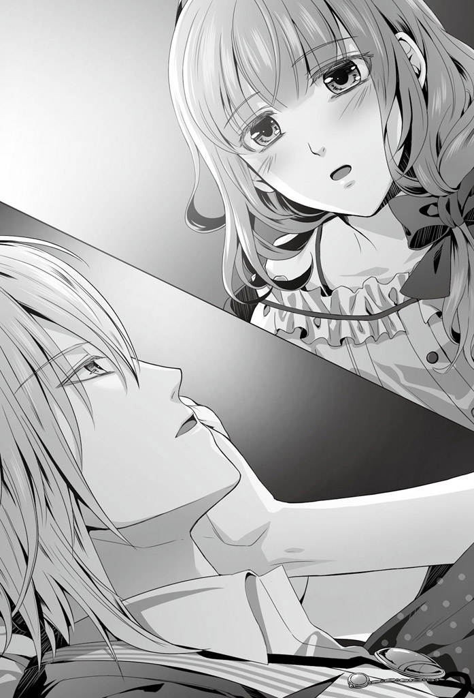

| AMNESIA MARRY IKKI ＆ KENT編 (オトメイトノベル) | |
| 鈴木あつみ | |
| 一二三書房 (2017) | |


『３月１日』
彼女が一時的に記憶を失っていた八月から半年が過ぎた。あれから彼女との付き合いも順調で、同棲生活も、僕としては多少のもどかしさを抱きつつ、愛しい彼女の下、甘酸っぱく楽しい毎日を過ごしている。
そんな晩冬の今日、僕は長年ウェイターとしてバイトをしてきた冥土の羊を退職する。
大学の卒業式まではまだ少し日があるけれど、来週から就職先のインターン研修が始まるからだ。
「......でありまして。ここでイッキ先輩に出会えたことは私の人生最大のラッキーでした！」
閉店後のフロアの中央にスタッフと店長のワカさんが対峙するように並び、一人ひとりが僕に向けて別れの言葉をくれていた。
今はちょうど、ミネが声を張り上げている最中だ。
「新しい職場で女の子に囲まれても、このお店に一番のファンがいることたまには思い出してくださいね？ イッキ先輩の、さらなるご活躍を期待してます！ 以上、フロア代表ミネの送辞でしたー！」
ミネは少し鼻にかかった猫撫で声で早口に捲 し立てると、俊敏な動きで敬礼をし背筋をピンと張った。
「よろしい！ 多少私情が混ざっていたが、心のこもった送辞であった。ミネ、ご苦労だった」
ひとつ手を鳴らしてワカさんがミネの敬礼に応える。そして、つかつかと僕の前まで歩み寄ってきて、
「では次に！ 店長送辞！ 私だ！」
いつもの厳しい表情のままに僕を見据えた。まっすぐこちらに向けられている視線は、銃口から敵を狙うスナイパーそのものだ。
「イッキ!! 貴様が店に勤め始めたのは六年前だったな。当時はまだ青臭い高校生だった。しかし思えば貴様は、入店当初から優秀な若者だった。ウェイターとして勤めた六年の間、まさに当店の撃墜王としてこの街に名をとどろかせたと言えるだろう」
撃墜王とは喫茶店を称するこの店にとても似つかわしくない単語だが、そこはあえて聞き流すのが冥土の羊の習わしだ。
「今後は大学で学んでいた会計技術を専門とし、内勤に専念すると聞いている。だが、人を虜にするその天賦の才はどこにいても発揮されるはずだ。客の顔が見えなくなっても、当店のモットーを忘れずさらなる研鑽を積んでほしい。もちろん、一生忘れはしないだろうな！」
確かに、この店で働いた経験は一生忘れないだろう。こんなに個性的で、主に店長の印象が抜群に強烈な店は、世界広しといえど、ここだけだ。
そんな、一見働きにくそうな冥土の羊だけれど、バイトで不平不満を漏らして辞める者はほとんどいない。それはスタッフ同士の仲の良さと、統率しているワカさんの仁恩が随所に感じられるからだろう。
「貴様ら！ 当店のモットーを言ってみろ！」
冥土の羊で働いた六年間に思いを馳せていると、怒号のようなワカさんの指令がかかる。
はっと顔を上げ、僕は他のスタッフと共に姿勢を正しすぐに腹に力を入れた。
「はい！ 『客は敵だ』！」
一斉に叫んだ言葉にワカさんは満足そうに頷いて口端を吊り上げる。
「その通りだ！ それを忘れずにいれば、諸君らの頭上にはいつでも勝利の女神が微笑みかけるはずだ！ 戦え！ そして勝て！ それでも信念が折れそうになったらいつでもこの店へ帰ってこい。私が自ら喝を入れてやる！ 私からの送辞は以上だ。それでは、冥土の羊店歌斉唱！ 全員、復唱！」
ワカさんらしい励ましに苦笑しながら、歌い出した店歌に僕は耳を傾けた。
「♪ほーほえみをたーずさーえーてーわーれら敵をーうーちおーとす」
軍歌を連想させるメロディが、やっぱりこの店らしい。
意気揚々と美声を響かせるワカさんに、僕は必死に笑いを堪えて他のスタッフと共に詩を復唱する。
「めーいどーのひーつーじー、めーいどーのひっつっじっ♪」
夕闇が色濃く差す高架下の道を、弱々しく街灯が照らし出す中、僕と彼女は他愛ない話をしながら家路を辿っている。
今となっては自然と歩んでいるこの道も、つい半年前までは見えていた風景も心情も全く違っていた。
冥土の羊を辞めたという、一つの区切りに立っている今、何気なく送っていた日常を振り返ると時の経過をまざまざと感じ、急に懐かしさが胸をいっぱいにした。
「イッキさん？ どうかしましたか？」
話の最中に、ふいに黙り込んでしまった僕を、彼女は大きな瞳で不思議そうに見上げ様子を窺ってきた。
「──いや。ねえ、ちょっと遠回りしていってもいいかな？」
かけていたサングラスを少しずらして彼女に視線を送り尋ねると、
「はい？ いいですよ？」
彼女は首を傾げながらもすぐに承諾してくれた。
「久しぶりに、行ってみたい場所があるんだ」
彼女の手を引いて僕が向かった先は、彼女が住んでいたマンションに続く道だ。
付き合ってから毎日、この道を通り彼女を送って帰った。
久しぶりに歩くその道に彼女も懐かしさを覚えたのか、きょろきょろと辺りを見渡しては目を細めている。
踏切を過ぎて高層ビル街の見える路地まで差し掛かると、ようやく彼女も僕がどこへ向かおうとしているのか察しがついたらしく、道の先に見えてきたマンションに視線を移してはっと顔を上げた。
「ここって......私のマンションがあった辺りだ」
「うん。付き合い始めてから三ヶ月くらいは、ここを毎日送って帰ったなと思って」
「そうでしたね......」
道を挟んでそびえ立つマンションの一室に視界を留め、感慨深げに彼女は溜息を吐く。
彼女の住んでいたであろう部屋には今、灯りがともり、人が暮らしている気配が感じられた。
「......なつかしい。半年前までは、ここに住んでたんですよね」
──半年。
彼女と出会い付き合ってから今日に至るまで、怒涛のような日々だった。
そう声に出してしまうと彼女に大げさだと笑われてしまいそうだけれど、僕にとっては本当に濃密で、今後の人生を一八〇度変えてしまった日々といっても過言ではない。
彼女の気持ちが知りたくて、どうしようもない切なさを抱いて歩いた道。彼女の全てを手に入れたくて、影を追っては見上げたマンション。一緒に働いた冥土の羊での日々も、そして彼女が記憶を失っていた八月も、今となっては懐かしさと共に少しの寂しさを僕にもたらしている。
インターンというまだ見習い的立場だけれど、明日から社会の一旦を担って働く一員になるプレッシャーと新たな一歩への期待が、僕をこの場所に導いたのだろうか。
彼女の隣に並んで夕闇に灯るマンションを見上げながら、僕は彼女と過ごしてきた日々に思いを馳せた。
「あの部屋、今は誰が住んでるんだろう。雰囲気変わっちゃったかな？」
「............」
「イッキさん？」
思いに更けて彼女の声が耳を通り過ぎていたらしい。彼女はまたきょとんと瞳を丸め僕をのぞき込んできた。
聞いてなかった、とも言えず、僕は唐突に話題を振った。
「ねえ、覚えてる？ 付き合い始めたばっかりの頃、君は僕の前で緊張ばかりしてて手も繋いでくれなかったよね」
「それは......あの、何度か繋ごうとしたんですけど」
「うん。僕も緊張してたから、繋ぎにくかったんだよね。ごめん」
言いづらそうに尻すぼみになっていく彼女の言葉に、言葉を重ねて言う。
「僕はね、てっきり君が僕のことを警戒してると思ってたんだ。手なんか繋いだら、なし崩しに距離を詰められそうだって心配してるんだろうと思ってた。だから、長い間部屋にも上がらなかったよね。僕の部屋にも呼ばなかった。いつも、中学生みたいにここでお別れを言ってたよね。僕は名残惜しかったんだけどさ」
「それは......私も本当は」
「うん、知ってる。今はね」
全ては彼女が僕を警戒しているからではなく、僕の緊張を察した彼女が気を遣ってくれていたんだ。
長い時間、彼女と一緒に過ごすようになって、ようやくあの時の気持ちを理解できるようになった。女の子に気を遣わせるなんてホント情けない話だけど、僕も僕で必死だったんだなと思う。
過去の自分に苦笑しながら、僕は更に記憶を蘇らせていた。
「こうやって君と一緒に帰ってきて、初めて家に上がっていったのは九月の初めだったね」
「覚えてます」
「覚えてるの？ 僕がすっごく情けなかったこと」
「そんな風には思いませんでしたけど......。すごくすごく緊張したので、覚えてます」
そう、あれはまだ一緒に暮らし始める前──。
『半年前、９月上旬』
この日も例によって、僕はバイト帰りに彼女をマンションまで送ってきていた。
繋いだ手の温もりが愛おしくて、中々離してやれないままエントランスまでの数メートルの距離をゆっくりと歩むけど、僕のわがままで長く引き留めておくわけにもいかない。
「あー......日が暮れてきたね。そろそろ帰る時間かな。ほら、部屋にお帰り」
「......はい」
名残惜しく指先を離す僕に、彼女は何かを訴えるように見上げ瞳を揺らした。
どこかいつもと様子が違う。
彼女もまた、僕と離れることに少しの寂しさを感じてくれているのだろうか。
そんな淡い期待が首をもたげそうになって、僕は慌てて胸の奥にそれを押し戻した。
「なんでそんな顔するの。もう少し一緒にいたい？」
ワザと彼女の羞恥心を煽るような口調で言う。
目の前に彼女が一人暮らしをしているマンションがある状況で僕を思い上がらせてしまったら、浮かれて何をしでかすか自分でもわかったものではない。だから、自制の念や彼女に対する牽制を込めて言葉を重ねる。
「まあ、ここで一緒にいたいなんて言われたら、僕が何するかわからないけどね」
とは言いつつ、彼女に嫌われることを何よりも恐れている僕だから、万が一にも彼女の気持ちを無視した行動には出られないのだけれど。
それを自覚しながら冗談半分に言ったつもりが、僕の言葉を彼女は真に受けてしまったらしい。
「......っ」
彼女は息を飲んで顔を強張らせた。
まさか怯えてしまうと思わなかったため、僕は慌てて胸の内を明かした。
「......ごめんね、こんなこと言うと怖くなるよね。あのね、これ牽制してるんだよ。我慢しなきゃいけない状況に始めからならないようにね。ああ、それがわかってるから君も黙っちゃうのか。そうだよね。何してもいいですとは言えないよね」
そう口にしてしまうと、なんだか逆に、恋人として信頼されていないような気もしてきて、妙に滅入ってくる。
自分で言った言葉に自分で落ち込んでどうするんだ。
心の中で自虐してみるけど、......やっぱり笑えない。
それもこれも、これまでの自分の行いに起因している部分が多少なりとあるのだと思うと盛大な溜息が漏れた。
一人で勝手に沈んでいると、僕の服の端をつまんで彼女が、
「......ち、違うんです」
と首を横に振った。
「何してもいいですとは言えないですが、今のは黙っていたつもりはなくて。勇気を出していたんです」
彼女はまだ硬さの残る表情で、そんなことを言う。
「勇気？ ああ、僕のものになる勇気？」
また懲りずに言わなくてもいい冗談で返す僕に、
「違います！」
と、彼女は強く否定してから、すっと真面目な面持ちに切り替えておもむろに口を開いた。
「あの......少し、上がっていきませんか」
緊張しているのか彼女の声が僅かに震えている。
「......本気で言ってるの？」
まさか彼女の口からそんなことを言われる日がくるとは思ってもみなかったため、僕も驚いてまじまじと彼女の顔を見つめた。
「変な意味はなくて、ただちょっとお茶でもお出ししたいなって思いまして」
よほど勇気を振り絞って僕を誘ったらしい彼女は、サングラス越しに視線が合うと顔を真っ赤に染めて瞳を泳がせた。
そして小さな声で呟くように言う。
「お疲れだと思いますし、もう少しお話ししたいなって思いますし。それだけなんですけど、お誘いしたらご迷惑でしょうか」
「......ううん。迷惑じゃない」
迷惑なはずがない！
僕はうきうきと胸を躍らせながら、彼女の気が変わらないうちにとマンションの方へ手を引いた。
「それじゃ、ごちそうになろうかな。下心は抑えておくよ。できるだけね」
「イッキさんそんなことばっかり言うから誘うのに勇気がいるんですよ」
「ん、わかってるよ。でも勇気を出してくれる君を見るのが好きなんだ。ごめんね」
「......ずるい」
自分のマンションではないというのに先頭をきって歩き出す僕に、彼女が小走りについてくる。
いつもは別れを告げるばかりのエントランス前を素通りして、エレベーターのボタンを押す。それだけのことなのになぜか楽しくて、さっきまでの気持ちが嘘のように舞い上がっていた。
「どうぞ」
「おじゃまします」
促されるままに足を踏み入れた部屋は、すっきりと片付けられていてどことなく甘い香りがしていた。可愛らしい小物類が所々に飾られていたり、淡い色のシンプルな家具が女の子らしさを感じさせる。
あまり見渡すのも失礼かと思いつつ、彼女の部屋なのだと思うと八方に興味をそそられ、つい視線を走らせてしまう。
「適当に座っててください。お茶入れますね。あ、コーヒーか」
僕にクッションを勧めて、彼女は慌ただしく隣接しているキッチンに向かった。
「ありがと。インスタントで十分だからね」
彼女の後姿を見送りながら床に腰を下ろし、勧められたクッションを腹の前に抱える。
コーヒーの用意をしてくれている音を聞きながらなんとなく部屋を眺め、少し大きめのトーンで彼女に話しかけた。
「......用もなく上がらせてもらったのは初めてだね」
「そうですね。なんだか遠慮してしまって」
「遠慮？ 変なこと言うね。遠慮してたのは僕の方だよ？」
「でも私も遠慮してました。覚悟を決めきれてない私が浮ついた気持ちで独り占めしていい人じゃないなって」
「ふうん？ 独り占め、してくれてよかったのにな」
「だけど、私がＦＣの子だったらやっぱり嫉妬しちゃいます。だってイッキさん、大人で素敵な人だから。時々改めて考えると、私と仲良くしてくれるのは不思議だなあって思うんですよ」
「仲良くって......あのね。そういう清らかなこと言われるとやましい気持ちが浄化されるんでやめてほしいな」
付き合っていることを〝仲良く〟という、いかにも潔白だと言わんばかりの言葉で片づけてしまうと何をするにも罪悪感がついてまわりそうだ。
「ふふふ。浄化されちゃってください」
盛大な溜息を吐く僕に彼女は可笑しそうに笑う。
キッチンから聞こえる笑い声が妙に可愛くて、
「んー......やっぱりだめ。これくらいじゃ浄化されない。ね、そっち行っていい？」
僕は彼女の返事を待たずに立ち上がった。
そして、すぐにキッチンに向かい、カップを用意していた彼女の真横に詰め寄った。
「......ねえ。君の言う仲良くっていうのには、手を繋ぐくらいは含まれてるのかな？」
腰を屈めて彼女に視線を合わせると、彼女は驚いたように目を瞬いて身を縮めた。
「えっ、あ、はい、含まれてます！」
「キスは？」
今度はかけていたサングラスを外し、じっと彼女の瞳を覗き込んで問う。
「含まれて、ます」
言葉を区切って、彼女はぎこちなく答えた。
「......その先は？」
「......ひみつです」
立て続けにされる質問に焦っているのか、彼女の視線が右往左往している。それでも彼女は律儀に、僕の直球な質問に答えてくれていた。
「じゃあもし今、僕が君にふれたら、君は少しでもその気になってくれるかな。試してみてもいい......？」
指を彼女の頬に滑らせ、徐々に顔を寄せる。
「......っ」
彼女は僅かに肩を揺らして息を詰めた。
空気を通して緊張がこちらに伝わってくる。
「そんなに緊張しないで。君の嫌がることはしないから。ただ、二人きりになれて嬉しいんだ。君だって、少しは期待してたんでしょう？」
部屋に誘っておいて、大の男を相手に何の疑いも警戒も持たないほど、彼女も子供じゃないはずだ。
「......ねえ。君に、触れてもいい......？」
息が触れるくらいの距離で囁き様子を窺うと、
「............」
「......ん？」
妙に息苦しそうに僕を見つめる彼女の顔があった。
この状況でどうして？ という疑問が、僕に首を傾げさせる。
が、すぐに理由は判明した。
「............ちょ!? 息してる!? 」
慌てて間合いを取って、彼女の頬を両手の平で擦ると、
「う？ あ、ぷはっ」
彼女は思い出したように息を吹き返した。
「ちょっと、君何やってるの！ まだ顔近付けただけだよ？ 何もしてないじゃない！」
「顔が......近いです！」
「嫌なの!? 」
「嬉しくてドキドキするんです！」
呼吸を整えながら頬を羞恥で赤くした彼女が口を尖らせる。そして、
「ごめんなさい、もう大丈夫です。やり直しましょう」
まだ落ち着いていない呼吸をしているのに、彼女は僕に向き直ると大真面目にそんなことを言った。
「あー......この子はもう」
元から天然なところはあるけれど、この雰囲気の中で発揮されると脱力するしかない。
緊張の糸が切れ力の抜けた僕は、体を壁にもたれかけてゆっくりと溜息を吐いた。
──もしも。あのまま彼女を自分のものにできていたら。
そう考えて、ひどく落胆している反面、どこかでほっとしている自分もいた。
目前で上げ膳をくらったというのに可笑しな話だ。
「イッキさん......？」
僕の気なんて知らない彼女はきょとんと瞳を丸めている。
「ごめん。僕がギブアップ。ちょっと、なんか......手が震えてる。緊張してるのかな。はっ。今さら恥ずかしいね」
「イッキさん......」
彼女が本当に僕を受け入れてくれるか、内心不安で仕方がなかった。事は破綻に終わったけれど、最後まで彼女は僕を拒絶しなかった。それだけで今は嬉しい。
「今日はもうしない。おとなしくコーヒーをいただくよ」
僕はもたれていた姿勢を戻し、リビングの方へ足先を向けた。
「あーそうだ。せっかくだから、君の部屋を紹介してよ。見せられるものだけでいいからさ。本棚は見ても構わない？ 君の好きなもの、知りたいな」
「あ、はい、じゃあちょっと待ってくださいね。コーヒー持って行きます......！」
そのあとは、彼女が読んでいる本を二人で見たり、他愛ない話をしながら穏やかな時間を過ごした。僕の失態の直後ということもあり、お互いにどこかぎこちなかったけれど、それでも二人で過ごす時間は幸せそのものだった。
『現在、３月１日』
「そっか......あれから、もう半年になるんですね」
当時を思い出して、彼女が小さく笑う。
「あの後、イッキさん家まで送ってくれるたびに寄っていくようになりましたよね」
「君が嫌がらないってわかったからね」
マンションを並んで見上げながら、視線だけを合わせてまた二人で笑った。
半年という時間は長いようであっと言う間だった。それは彼女と過ごした時間だけじゃない。大学生活も、冥土の羊でバイトをした時間も然りだ。
全てが充実していて、抱えきれないくらいの思い出や人にも恵まれた。
「見たかったものって、このマンションですか？」
ふと原点に立ち返って彼女が問う。
「ん。なんとなく、冥土の羊で過ごした期間に、区切りをつけたくてね」
「なんだか寂しいですよね......」
まるで自分のことのように切なげな表情で彼女は呟く。
確かに、思い出を振り返るとこれまでの何気ない日常ひとつひとつが愛しくて、淡く胸を締め付けられた。
「でも、明日からの職場でも楽しいことがいっぱい待ってますよ」
僕を励まそうと彼女は努めて明るく言うけれど、僕の体質上、新しい環境に飛び込むというのはやはり勇気がいる。
僕の存在が社内外に害をなさないよう、人間関係のベースを一から作り上げていかなきゃならないのは骨が折れるし、そもそもこの体質が受け入れられるのか、そして理解されるのかわからない。
「そうだね。そうだといいんだけど」
「イッキさんの体質なら、知らない人と会うのは大変なんだと思います。でも、イッキさんはどこへ行ってもきっとみんなに愛されるから。もしそれでも疲れてしまったら、......私に、話してくださいね？」
「......うん、そうだね、今は家に帰れば君がいるんだし。冥土の羊にだって帰れるし。高校や大学に上がった時とはわけが違うよね」
漠然とした不安は燻っているけれど、今それを考えても仕方がない。
もし何かが起きたとしても、僕は乗り越えていける。彼女が待っている、帰るべき場所があるから。そう思うと、滅入っていた気持ちが少しだけ晴れていく。
「ごめん、付き合ってくれてありがと。あの頃とは違うってことをちょっと確かめておきたかったんだ」
「私......イッキさんの傍にいますから」
踵を返そうとした僕に、繋いだ手をぎゅっと握って彼女が言った。
彼女の優しさに胸が熱くなる。
思い切り抱きしめたかったけれど、外でそんなことをしたら彼女に怒られそうだ。だから、衝動を抑える代わりに、僕にこんな思いをさせてくれた彼女を愛情たっぷりにからかうことにした。
「うん。じゃあ、初出勤の日は君にたっぷりなぐさめてもらおうかな。暗くなってから、二人きりでね」
耳元に口を寄せて囁くと、
「イッキさん！」
耳を押さえながら彼女は真っ赤になって飛びのいた。
「あれ？ そういう意味じゃないよ。君が寝る前にゆっくり話をさせてくれれば、僕は十分幸せだっていう話」
「もう。そうやってまたからかう。帰ります！」
茶化す僕に彼女はヘソを曲げてしまったらしい。頬を膨らまして顔を背けてしまった。
「あはははは。......そうだね。じゃ、行こうか」
ハムスターのように膨れた彼女の頬を指先でつつきながら、ゆっくりと帰路についた。
『３月５日』
「............朝、か」
ふと目が覚めて枕元に置いてある携帯の画面を確認すると、時刻は六時前を指していた。
設定した目覚まし時計は、サイドボードの上でまだ知らせを告げずに刻々と時を刻み続けている。遮光カーテンが閉められた薄暗い部屋の中は、つんと張りつめた寒さを纏っていた。
起き抜けの気怠い体をのろのろと起こし、ぐっと背筋を伸ばすとようやく目が冴えてきた。
隣で眠っている彼女はまだ夢の中にいるようで、枕に顔の半分を埋め静かな寝息を立てている。
彼女より早く起きるのは随分久しぶりのことだ。いつもは中々起きない僕を彼女が優しく何度も起こしてくれる。それが日課になっているせいか、こうして彼女の寝顔を眺めるのは新鮮だ。
柔らかい笑顔を浮かべた穏やかな寝顔は、僕に束の間の癒しをもたらしてくれる。
今日から始まるインターンに、僕なりに思うところがあってよく眠れなかったせいか、いつも通り彼女が隣にいてくれることが、ひどく心強く思えた。
いくら悩んだところで今日という日は動き出すし、未来もやってくる。
別に社会人になることが憂鬱なわけではない。僕にも将来の展望はあるし、彼女と歩む道も期待に溢れている。だからこそ特殊な体質に係る弊害への懸念は尽きないんだ。
しばらく彼女の寝顔を眺め、一通りの覚悟を決めてから僕は身支度を始めた。
顔を洗い終えた頃、ようやく目覚まし時計が鳴り響いた。
「ん......ふあ」
洗面所からリビングに顔を出すと、あくびを噛み殺しながら彼女が身を起こし、目覚ましを止めている姿が目に入った。
「朝か......。ん......イッキさん起こさないと」
寝ぼけ眼を擦りながら呟く彼女の視界に、ずいっと体を滑り込ませて、
「おはよ」
と声をかけると、彼女は何度か不思議そうに瞳を瞬いてから、本来僕が寝ているはずの場所と僕の顔を見合わせて、驚きに目を見張った。
「え!? あれ!? 」
そして、再度目覚まし時計で時間を確認してから首を傾げる。
「おはようございます。私寝坊しました？」
「してないよ。僕が早く起きただけ。たまにはいいね。君の寝顔が見られる」
「あんまり見ないでくださいね？」
彼女は恥ずかしそうに視線を逸らして、そろそろとベッドから起き上がると、寝起きだというのにテキパキと身支度を始めた。
「もうご飯食べられますか？ コーヒー淹れてパン焼きますから、イッキさんは着替えててください。お弁当の用意もしてあるんですよ」
パジャマの上からエプロンをあて、腕まくりをした彼女が意気揚々と言う。
「ありがと。あんまり張り切らなくていいんだよ」
僕は今日から出勤だけれど、彼女はまだ春休みだ。バイトが入っているとはいっても出かけるまでには十分時間もある。僕に構わずゆっくりしていればいいのに、彼女はまるで自分が出勤するような調子で立ち回っている。
「だって今日はイッキさんの初出勤ですから......、どうしても張り切ってしまいます。あっ、もしかして手作りのお弁当なんて恥ずかしいですか？」
キッチンに向かおうとした体を傾けて心配そうな眼差しがこちらを見つめてくる。そんな彼女に首を振って、にこりと笑顔を送った。
「ううん、そんなわけないでしょう。嬉しいよ」
昨夜、夕飯を終えてからキッチンに籠って何かやっていたのは気づいてたけど、まさか僕のために弁当の準備をしていたとは知らなかった。てっきり作り置きや、食材を小分けにして冷凍保存にでもしているのかと思っていた。
彼女の気遣いが嬉しい。
「だけど、もしかしたら会社の人たちとお昼に行くかもしれないですよね。ああ、そうですよね、失敗しました。もしそうなったら、お弁当は残して帰ってきてくださいね。私の夜ご飯にしますし」
悩まし気に彼女は言うけれど、そんな心配は無用だ。なにより、僕が彼女の気遣いを無下にできるはずがない。
「ありがと。でも真剣に困ってくれなくても、僕は一人でお弁当を食べると思うよ。たぶんね」
「そうとは限らないですし......あ、でも飲み物は完璧なんですよ」
そう言い残して、何やら機嫌よくキッチンに消えた彼女だったが、すぐに真新しいタンブラーとコーヒー豆らしき紙袋を持ってきて、
「店長がくださった冥土の羊印のタンブラーに、教わったブレンドをたっぷり入れてあるんです。イッキさんきっと気に入りますから、飲んでみてくださいね」
と声を弾ませた。
入社する当人よりも用意周到な彼女が面白くて、僕は肩を震わせて笑ってしまった。
「はいはい。嬉しいけど、緊張しすぎないようにね。君が入社するんじゃないんだから」
「私が入社するより緊張しているかもしれません......。だって新しい会社はイッキさんがこれからずっと通う場所なんですよね。たくさんの同僚の方たちと一緒に働いて......気の合う友達や上司の方と出会えるかもしれなくて。その出会いが今日なのかもしれないって思ったら、緊張せずにはいられません」
僕以上に期待に胸を膨らませている彼女を見ていると、一層元気づけられた気がした。
鼻歌が聞こえてきそうなほどに軽い足取りでキッチンへ向かおうとした彼女が、
「あっ、言い忘れていました」
と、歩みを留めて、飛び切りの笑顔でこちらを振り返る。
「イッキさん、初出勤おめでとうございます」
「......うん。君に送り出してもらえるだけで、今日は幸せな日だなって思うよ」
こんなに心嬉しい気分で始まる日は、きっと前向きな未来へ繋がっている。そんな気がしていた。
「それじゃあ、いってらっしゃい。気をつけてください」
「ふー......よし。客は敵だ」
冥土の羊の言葉を借りて気合いを入れると、笑顔で見送る彼女に手を振り玄関のドアを閉めた。
僅かに高鳴る鼓動が僕を緊張へと駆り立ててくるが、駅に向かって颯爽と歩くことでそれをうやむやにした。
まずは与えられた仕事に実直に取り組み、いち社会人としての姿勢を正当に評価してもらう。それが今の僕にできることだ。
僕を含め、インターン研修で出社した新人は一度、社内の大きな会議室に集められた。それぞれ配属先の部署で研修は行われるが、その前にまとめて人事による一般常識や客人対応といった会社員としてのマナー研修が行われるためだ。
ざっと見渡したところ、この場にいる新入社員は数十名といったところか。
僕が勤務するのは本社だが、この他にも全国に支社があり、海外にも拠点をもっているため全ての新卒社員を合わせると数百人規模になる会社だ。
就職難といわれているこの時代に幾つもの選考を勝ち抜いてきた者たちが、今日こうしてインターンに臨めている。そんな背景があるからか、皆一様に目を輝かせ、強い意気込みをもった顔つきで前を見据えていた。
僕もそれに倣い背筋を正して、始まった人事担当者の説明に耳を傾けた。
たまたま、本社で勤務する同期は全員が男性だった。人事の担当も男性だったため、初めの研修で騒ぎを起こすことはなかった。
そのことに多少なりと胸を撫で下ろし次の指示を待っていると、人事の研修が終わったのを見計らって今度は次々と女性社員が会議室に流れ込んできた。
部署ごとの研修に移るため、配属先のフロアまで案内する社員がやってきたんだ。
なるべく目立たないように男性社員の群衆に身を隠し、人の流れに埋もれたつもりが、やはり思惑通りに事は運んでくれない。
「............っ！」
僕を視界に捉えた女性社員が息を飲んで立ち尽くしてしまった。
一人二人と動かなくなる女性たちに、何事かと男性たちが訝 しむ中、
「失礼致しますわ。イッキ様はこちらへ。ご案内します」
女性社員たちの間を割って、見知った人物が顔を出した。
「各担当に従い、皆さま移動願います」
再度、社員たちに声をかけ行動を促しながら僕に近づいてくるのは、リカだ。
オフィスだからか普段よりも控えめな服に身を包んではいるけれど、室内にいるメンバーの中では群を抜いて目立っている。
そんなリカに僕も促される形で早々に会議室を後にした。
エレベーターでフロアを移動し、静かな内廊下を歩きながら僕は安堵の溜息を吐く。
さっきはリカの機転のおかげで、事を起こす前にあの場を回避できた。これはリカに感謝しなければならない。
が、それにしても──。
「ホントに入社したんだね」
僕の少し前を歩き、オフィスの各所を回りながら案内してくれているリカに話しかける。
「ええ。イッキ様の許可をいただけましたので、一足先に働いておりますわ」
リカはさも当然とばかりに答え、口に弧を描いた。
僕がこの会社に内定した直後、リカに大切な話があるのだと呼び出され、同じ職場に勤めても良いかと問われた記憶がある。
『出過ぎた真似をしようとしていることは、重々承知しております。......しかし、新たな環境においてイッキ様へかかる負担を考えると、このまま私がお傍でお仕えし、陰で対処させていただくのが一番良いのではと......』
など言われ、半ば押し切られる形で承諾したのを覚えている。
結果、こうしてリカは契約社員として入社し、今僕の前に立っていた。
もちろん大学で専攻していた分野も違えば職種も異なってくるため、同じオフィスとはいっても僕とは仕事内容が違う。リカが言うに、リカのやっている仕事は事務に近いもので、契約社員という立場上、責任のある仕事は殆どないのだという。ある程度ルーティンワークに慣れてしまえば、空いた時間は自由に立ち回れるのだそうだ。
その自由の利く時間を利用して僕の周りの対処をしようというのは、全て聞かずともわかった。
リカが僕の知らないところで女の子たちを統率して、多方面に根回しをしてくれているのは言わずとも感じている。それは中学のころから変わらずで、僕の平穏な日常は少なからずリカが関与していたといっても過言ではない。
しかし、こんなにも一人の人間に固執していて良いのか、ここまでくるとさすがに疑問に思う。
「......もう一度聞くけど、本当にこれでいいの？ 君にもやりたいこととかあるんじゃないの？」
同じ職場で働きたいと言ってきた時と全く同じ問いを、僕はリカに向けた。
けれど、リカは即座に首を振り、
「いいえ！ イッキ様のお役に立つことこそ私の生き甲斐！ 責務といっても過言ではありませんわ。ですから私などに余計なお気遣いは無用です」
敢然と言い切った。
「......そう。まあ、いいけどね」
リカ自身が納得しているのならこれ以上どうこう言うつもりもない。
呆れ半分で溜息を吐きながら、廊下から繋がる部屋のドアに視線を転じた。
長い廊下には同じ形状をしたドアが幾つも点在しているため、どの部屋に通じているのかはドアの上に掲げられているプレートで判断するしかない。
「で、僕の配属先はどこだろう？」
「こちらですわ」
直近のドアを指し、リカが足を止めた。
プレートを見上げると僕の配属先となる部署の名前が刻印されている。
リカはドアを開けるとためらうことなくつかつかと内部へ進み、整然とデスクが並ぶ一区画に僕を案内した。そして、島ひとつ離れた場所にある一際大きな机に腰かけていた人物に声をかけ、
「では、私はこれで。何かお困りのことがございましたら、すぐにお知らせ下さいませ」
と僕に耳打ちしてすぐに部屋を出て行ってしまった。
取り残された僕に社員の視線が集まる中、リカが声をかけた中年の男性が僕の前までゆっくりと歩み出てきてにこりと微笑みかけてきた。
責任者だろうか。しっかりとアイロンが当てられた藍色のシャツを着こなし、髪はすっきりと後方に撫で上げられ清潔感がある風貌をしている。愛想の良い笑い顔は、緊張に身を固めているこちらに少しの安堵をもたらした。
「来たか新人。ええと名前は......」
「本日からお世話になります。イッキュウと申します」
すっと姿勢を正し、責任者らしきその人物に挨拶をする。
「至らない部分が多々あると存じますが、ご指導の程、宜しくお願いします」
「そう気張らなくていい。これから一緒に働く仲間だ。こちらこそ宜しく頼むよ」
フランクな物言いは人好きな性格を感じさせた。
部署をまとめているであろうこの人の人柄からか、フロア内の社員の顔は明るく、皆いきいきと仕事に取り組んでいる様子が窺える。かといって雰囲気に甘んじている者がいるわけでもなく、適度な緊張は保たれていた。
この絶妙な空気感は悪くない。
「みんな、ちょっといいか。うちの部署に新人が配属になるから紹介したい」
彼の掛け声で自席に向かって仕事をしていた社員が一同に顔を上げ、椅子を引いてこちらに向いた。
「今はインターン生という名目だが、四月からは本格的に一緒に仕事をしてもらうことになるだろう。指導担当は正式な入社後に改めて決めるとして、まずは皆でこの未来ある若者を育てていこう。イッキ、一言挨拶できるか？」
「はい......！」
挨拶を促され、僕は新人らしく溌剌 とした声を上げてから手短に自己紹介をした。
僕を皆に紹介してくれたのは、やはりこのフロアを統括している部長だった。
新人がこの部に配属されるのは数年振りらしく、挨拶後も部長が張り切って自ら僕の世話を焼いてくれていた。気を遣って他の社員が名乗りを上げるも、それも差し置いて案内するのだときかなかった。
それほど歓迎してくれている姿を見てしまうと、僕も期待に応える仕事をしなければと思わされる。
「──で、ここがデータを管理するデスクだ。それから......、ああ、アルバイトと契約社員の者たちも紹介しよう」
フロア内を案内してもらっている途中で、ふと思い出したように部長が手槌を打った。
「部屋は離れているが、私たちと同じ部署で働く仲間だ。まず明日から予定している業務の一端を彼女たちと共にやってもらおうと思っている。入力、コピー、それから資料の作成などといったシンプルな作業は彼女たちに頼むといい」
「わかりました」
〝彼女たち〟ということは、女性だけで編成されているのだろう。なるべくトラブルの発端にならないよう留意しようと頭の片隅に刻み、隣接する部屋に向かう部長を追った。
壁一枚隔ててその部屋はあり、主となるフロアの半分程の大きさの中に数台のコピー機や製本機、備品棚が置かれている。中央部分には事務作業をするためのデスクとパソコンが設置され、そこでリカを含んだ女性たちが仕事に打ち込んでいた。
僕らが入室したのに気付づくと彼女たちは手を止め、こちらを一斉に振り返る。
「本日からお世話になります。イッキュウと申します」
彼女たちに向かって挨拶すると、皆、時が止まったかのようにぴたりと動かなくなり僕の顔をまじまじと見上げてきた。目の力が効いているのだと瞬時にわかった僕は咄嗟に身構えたのだけれど、
「......よ、宜しくお願いします」
しばらくの間を挟んで、誰かが絞り出すようにか細い声でそう言ったのを機に、すぐに顔を背けられてしまった。
淡々と各自の作業に戻っていく彼女たちの姿に少しの違和感を覚えて僕は首を傾げた。
──あれ......？
それなりに対策を考えていたのだけれど、彼女たちの反応は想定していたものとは違い、至ってあっさりとしたものだ。
目の力が効いていないわけではないと思う。
俯き気味に机に向かっている様子を窺うと、頬を染め、どこか落ち着きなく指先だったり足を動かしている。
「おいおい、せっかく来た新人に冷たくないか？」
僕に対する反応を見ていた部長はこの違和感を感じ取っていない。豪快に笑い飛ばして、慰めるように僕の肩を叩いている。
「普段はこんなんじゃないんだ。愛想が良くてよく働いてくれる人たちだ。仲良くしてやってほしい」
「はい......」
気のない返事をかえしながら僕は、彼女たちに一見冷たいともとれる行動をさせてしまった経緯を考えていた。
おそらく彼女たちは狼狽しているんだと思う。目の力によって理性を奪われそうになり、僕に得体のしれない恐怖を感じたのかもしれない。一瞬見ただけの相手に異常な執着を感じると、心のどこかで冷静さを残した人ならそれを避けようとするのが当然だ。
この職場は見る限り落ち着いた人が多い。思慮深い人なら僕の力を前にした時、自身を守ろうと距離を置くだろう。
これまでも僕と出会った女性、皆が皆、熱情に浮かされてきたわけではない。距離を保とうと、意識的に避ける人もいた。今、僕から目を背けた彼女たちもまたそういった部類の人なのかもしれない。
そう思うことで納得した僕は、何事もなかったかのように部屋を後にした。
彼女たちの方から適度な距離をとってくれるのなら、それはそれで僕にとって都合がいいと、この時は思っていた。
初日は必要各署への挨拶やデスク周りの整備だけで業務は終了した。
定時刻早々にインターン生は仕事を切り上げるよう指示があり、僕はまだ日の沈みきっていない帰路を辿っていた。
夕暮れ時を知らせる鐘が、音の割れたスピーカー越しに街に響いている。学校の部活帰りなのか、数人の子供たちがランドセルからサッカーボールを下げて駆けながら僕を追い越していった。
周りの風景に視線を移しながらゆっくりと歩を進める。
夕焼けは眩しいくらいに輝きを放ち、こちらを容赦なく照射してきた。サングラス越しでも陽の強さに目を細めるほどだ。
数年、この時間帯に一人で歩くことはまずなかった。ここ半年はバイト終わりの彼女と一緒に、彼女と付き合う前は常にＦＣの誰かに囲まれていた。
こうして社会人としての新たな道を歩き出すと、昨日まで当たり前だった日常がひどく遠くに感じる。
「......やっぱり、慣れない環境だと疲れるな」
ぼやくと、凝り固まっていた肩をぐるぐると回し、人通りのないのをいいことに両腕を虚空に投げ出し背筋を伸ばした。
今日は目立った弊害もなく、いたって平和な一日だった。場をわきまえ、しっかりと理性を保てる人が多いのだろう。視線が合った時、不用意に顔を背けられたり驚いたような仕草はされたけれど、学生のようにところ構わず騒ぎ立てられることは何もなかった。
これまでにない反応だけに僕も最初は戸惑ったけれど、程よい距離感でまじめに仕事に打ち込めるのならありがたい。
それでもやはり、気を遣っていたせいか今日は普段よりもずっと疲れた。
こんなときは、彼女と一緒にゆっくり過ごしたい。そうしたら今の疲れなんて一瞬で消えてしまうだろう。
「早く会いたいな」
そう思うと、急に寂しさが湧いて僕はバッグから携帯を取り出していた。
彼女の声が聞きたい。今ならちょうど彼女もバイトを上がる頃だ。タイミングが合えば電話に出てくれるかもしれない。
急く気持ちを落ち着かせて彼女の携帯に電話をかけると数回のコールの後、すぐに繋がり、
『もしもし......！』
焦った様子の彼女が出た。
バイト中だっただろうか。
「あ、お疲れ様。そろそろバイト上がる時間だと思ったんだけど、今大丈夫？」
心配になって聞いてみたけれど、仕事中というわけではないらしい。
『大丈夫です。どうしたんですか？』
「ううん。別に何もないよ。今家に向かってるとこ」
ゆっくりと歩みを進めながらそう言うと、どこかほっとした溜息が返ってくる。
「離れてるのが寂しかったから、歩いてる間声を聞いてようと思って」
『なんだ......何かあったのかと思いました。もう。たった二〇分ですよ』
少し呆れて彼女は言う。
「二〇分は長いよ。一日会えなくて、君は寂しくなかったの？」
『......えっと。シンさんがここにいるのでそのお話はまた後ほど』
言いづらそうに言葉を濁しながら彼女の声が小さくなっていく。
近くにいるというシンの目を気にしているのだろう。
寂しいと彼女から無理やり聞き出すのも面白そうだけど、家に帰ってから叱られてしまいそうだ。などと勝手に妄想を広げていると、
『オレ帰るわ』
彼女の後方からシンの声が聞こえてきた。
『ごめんなさい！』
慌ててシンに謝る彼女の後に、またシンの声がして、
「『初仕事お疲れ様、でも自重して』ってあの人に伝えておいて」
素っ気ないメッセージを残し、部屋を出ていったらしくドアの閉まる音がした。
『お疲れ様です！ イッキさん、シンさんは帰ってしまったんですが伝言があって......『初仕事お疲れ様、でも自重して』......だそうです』
「まあ、君に甘えるくらい許してよ。慣れない職場で疲れたんだしさ」
普段から自重している自覚はないけど、こんな日くらいは何を気にするでもなくただ彼女だけを感じていたいんだ。彼女の優しい声は、外に出れば必然とのしかかってくる余計な事を忘れさせてくれる。
「ねえ、もう帰るだけ？ このまま話しながら帰ってもいいかな？」
彼女は絶対断らないと知りつつ、甘えた声で問う。
『......はい。私も、お話ししたかったですし』
周りに誰もいないことを確認したのか、少しの間を挟んで彼女が静かに言った。
最近の彼女は付き合った当初よりもずっと、自分の気持ちを素直に口にしてくれるようになった。根っからの恥ずかしがりやだから、ものすごくか細い声だったり、最後まで言えずフリーズしてしまうこともままあるけど、以前と比べれば嬉しい傾向だと思う。
「ありがと。一足先に会えた気分だね。でも電話だと君にキスできないから辛いな」
『イッキさん、ここは外なので、あんまり......キス......とかそういう話はよくないと思います』
「じゃあ家で。早く帰りたいね？」
『同意を求めないでくださいっ』
結局、僕たちの会話は途切れることなく、僕が家の玄関に到着し、彼女が出迎えてくれるまでずっと続いたのだった。
玄関のドアノブに手をかけると同時にドアが開き、先に帰り着いていた彼女が迎えてくれた。
「おかえりなさい」
僕が玄関先に着いたのを察知してリビングから急いで駆けて来たのだろう。彼女は少しだけ息を弾ませ、僕の顔を見上げてにこりと笑った。
「ただいま」
答えながら、思わず彼女の笑顔に見惚れてしまう。
彼女もまた帰宅したばかりのはずで、部屋の中でゆっくりしていればいいのにわざわざ僕を迎えに玄関までやってきてくれ、その健気さに相まって僕の大好きな笑顔を出されると、うっかり理性を手放しかける。
彼女のずるいところはそれらを打算でやっていないところだ。その分質 が悪い。だから、僕の気持ちなんて知らないで、
「ご飯用意してるんですけど、もうしばらくかかるので、コーヒーにしますか？」
なんていう、誘惑的なセリフを無防備に口にする。
よく、恋愛において惚れた者が負けだ、みたいなことを言うけど、ホントにその通りだと彼女を通してつくづく感じた。
彼女からの愛情は十分伝わっているけど、やっぱり僕の方が彼女よりもずっと彼女を愛しているんだと思う。その証拠に、今のように彼女が無意識でやっていることに僕はこれまで何度も心を踊らされてきた。その度に『彼女には他意なんてない』と自分に言い聞かせ、これでも冷静であるように努めてきたんだ。
僕は意識的に彼女を誘惑しているけれど、彼女の場合、無意識なのが、やっぱり良いように踊らされているようで悔しい。
だから、たまには、いかに彼女自身の言葉や行動が僕を誘っているのか自覚してもらわなければと思うんだ。
「......いいね、それ。若奥さんみたい。ねえ奥さん、夕飯より君が食べたいな」
ベタなセリフを悪戯に囁いて、リビングに引き返しかけた彼女の腰を引き寄せ後ろから抱きしめた。そして、かけていたサングラスをとって間近に彼女の顔を覗き込む。
きっと彼女は僕のセリフに真っ赤な顔をして恥ずかしがるだろう。それを愛でるくらいの反撃はあっしてもいいはずだ。
そう、思っていたのに、
「え......」
視線が合った瞬間、彼女は大きく瞳を見開いて、虚ろな視線で惚けたようにただ僕を見つめてきた。
「ん？」
思惑から少し外れた彼女の反応に首を傾げるけれど、そんな僕を見た彼女はすぐに、はっとした様子で視線を逸らす。
「いえ......なんでも......ないです。それよりご飯......ご飯を作らないと」
抑揚なく呟いた彼女は僕の腕をそっと外し、ぎこちない仕草でリビングへと踵を返した。
どこかおかしい。
けれど、足取りはしっかりしているし体調が悪いというわけではなさそうだ。だとすると、この一瞬で何があったのだろう。彼女の言う通り、何でもないことなのか。
視界の中にいる彼女の後ろ姿を追いながら、僕は首を傾げるしかなかった。
『三月六日』
「......え......？ 退職、ですか」
不穏な雲行きを彷彿させる単語に僕は眉根を寄せていた。
僕の言葉を受けて、目の前にいる部長は頷き、椅子の背もたれに深く腰をかけながら諦めたような溜息を吐く。
「そうなんだよ。今朝になって急に体を壊したとかで。体調不良なら仕方ないさ。引き留めるわけにもいかんしな......」
「そう、ですか......」
「まあ、他のメンバーもいることだし、一人辞めたくらいでは支障ないと思うが、手が空いた時にでも少しフォローしてやってもらえないか」
「はい。それは構いませんが......」
出社早々に聞かされたのは、昨日紹介してもらったばかりのバイトのメンバーが一人抜けたという知らせだった。退職理由は体調不良となっているが、昨日見た限りではそういった様子は一切感じられなかったのもあって、僕は一抹の不安を覚えずにはいられない。
「ん？ どうした？」
少し思うところがあって急に押し黙ってしまった僕を部長は気遣わしげに覗き込んでくる。それに首を振り、僕は愛想を振りまきながら姿勢を正した。
「いえ。承知しました。時間をみて手伝いにいきます」
「ああ。すまないが宜しく頼むよ」
自席に戻り、出社したままになっていた手荷物を片づけながら、僕は一つの疑念に思考を巡らせていた。
雇用形態がアルバイトにしても普通、前もって退職する意向があれば少なくとも数週間前からその話は出ているはずで、急に今日になって退職を持ち出してきたということは昨日にそう思わせる発端があると考えるのが道理だ。昨日職場の環境に変化があったとすれば、それは僕のインターンが始まったことに他ならない。
──僕が、退職に追い込んだのか......？
しかし、昨日僕が彼女たちにしたのは挨拶だけだ。それだけのことで退職という決断に繋がるとは考え難い。それこそ自意識過剰というものだ。
ならば一体何が原因なのか。部長から伝え聞いた通り、本当に体調不良なのかもしれない。
「考えても仕方ないか......」
胸に少しの蟠 りは残りつつも、僕の思い過ごしかもしれない疑念は現時点では何の根拠も持たないためうやむやに濁して、頭の隅に追いやった。
インターン二日目。学ばなければならないことは沢山ある。目下、それに精一杯取り組むことが僕の仕事だ。他の事を考えている余裕はない。
僕は大きく息を吐いて気持ちを切り替えると、指導担当の指示を仰いだ。
──だが、不確かだった僕の疑念がすぐに確信へ変わることになる。
午後になり、与えられた仕事が一段落した頃、僕は事務作業を手伝うために隣の部屋に場所を移した。
作業内容は社員が作った資料のコピーや、会議用のプリントの製本、紙媒体書類のデータ化、それにファイリングといったものが多く、専門的な知識がなくてもさほど困らないものだ。
しかし、一見単純に感じる作業でも、その量はかなり多い。数百部単位の印刷や製本、データ化する書類がどんどん降ってくる。僕が席を置く部署だけでもこれほどあるのかと、積み上げられていく書類に少しうんざりしたくらいだ。
ただ、同室で働くリカの処理スピードが異常に早いことと、それぞれ得意分野で担当が分担されていることで効率的な流れができている。抜けた一人分を僕がしっかりフォローすることで定時前には一日の作業が終わりそうだ。
先の見通しをつけて、僕は書類の束に手をかけた。
「これは既存データを更新する形で問題ありませんか？」
手近なところで目の前のデスクにいる女性に声をかけると、女性ははっと顔を上げ僕を凝視する。
「えーと......」
無言で見つめられるとこちらも居た堪れなくなって視線を泳がせた。
騒がれることには大分慣れているけど、こうして静かに視線を浴びるのはどうしていいかわからない。
「あ......、こ、更新で、お願いできればと......」
しばらくしてから返ってきた声は堅く強張っていた。
「わかりました。ありがとうございます」
礼を言うと女性は小さく「いえ......」と呟いただけで、どぎまぎと仕事に戻っていった。
室内を見渡すとリカ以外の女性は皆、机にかじりつくように下を向き、明らかに僕を避けて、仕事に集中しようとしているように見えた。〝しようとしている〟と不明瞭なのは、どう見ても集中できていないからだ。それは僕がパソコンに向かっている最中にくれる視線だったり、無駄に大きくキーボードを弾く音で感じ取れた。
「はぁ......」
どうにも慣れない空気感に溜息も出る。
「どうかなさいましたか？」
気を遣ってリカが声をかけてくれるけど、仕事事態に支障をきたすものでもないし、僕は首を振った。
「いや、大丈夫。問題ないよ」
「そうですか......」
心配そうな眼差しのままリカは自席に戻っていく。
きっとリカも感じているのだろう。この何とも形容し難い絶妙な空気を。
「やりますか」
気を取り直して僕は自分の作業に取り組むことにした。
騒がれるよりずっといい。そう考えていたのは昨日のことだ。その言葉通り、集中しなければ。
そうしてしばらく作業に打ち込んでいたのだけれど、僕が入室して一時間も経たないころ、向かい側に腰かけていた女性が急に席を立った。
「......っ、ごめんなさい......！」
反射的に顔を見上げると、その顔は苦し気に歪んでいた。
「どうかしました？」
つい、問いかけてしまった僕と視線が合う。
「............！」
その瞬間、女性はびくりと肩を揺らして、ぎゅっと胸元のシャツを握りしめ一歩後ずさった。
「本当に、ごめんなさいっ！」
僕の問いには答えず、女性は叫ぶように言って深く頭を下げると、引いた椅子に足をもつれ転びそうになりながら、逃げるように部屋を後にした。
それから数分後、困り果てた顔で上司が僕たちのいる部屋に入ってきて、さっきの女性が辞めたと報告があった。
「体調不良、だそうだ。急ですまないが、新しいアルバイトが決まるまで、退社した者の分もフォローを頼めないだろうか」
「わかりました」
部屋を出ていく上司の後姿を呆然と眺めながら、僕は今朝の疑念を再び持ち出していた。
二人とも〝体調不良〟だと訴え、辞めていった。その言葉には少し思い当たる節がある。
僕と目が合った時、女性たちは皆、特徴的な体調の変化を訴える。それは動悸、息切れ、めまいなど。総じて〝恋をしているみたい〟だと言う。
これがもし、退職理由の〝体調不良〟と同一のものなら──。
それは、僕のせいだ。
「............っ」
彼女たちの僕に対する態度は大枠と外れていたけれど、職場柄そういうパターンもあり得ると高を括 っていた。その甘えが今回のことを招いたのだとすると、心が痛んだ。
『３月９日』
どういうわけか、この職場において僕の目の力は過剰なほど発揮された。
初めは騒ぎ立てない女性たちを前に、思慮深い人たちが多いオフィスだから適度な距離を保ってくれているのだろうと僕自身感じていたし、女性たちもまたそのつもりで接してくれていたんだと思う。けれどその均衡はあっと言う間に崩れ去った。
耐性を築いてくれていた人たちの心を僕の力が強引に追い込んだために、対象となった人たちは恐怖を感じ、逃げるように退職していった。
そうしてインターン二日目から連日アルバイトの女性が辞めていき、とうとう事務作業をしているメンバーはリカだけになってしまった。
その間、対策を講じなかったわけではない。僕の体質を理解しているリカに主だった指示を仰いだり、どうしても女性と話をしなければならないときは視線を合わせない努力をした。しかし、その努力は数日間で虚しく終わりを告げた。
この状況を見かねた上司からも何か特別なことはなかったかと問われ、ありのままを伝え、体質についての対策もできる限りで応じてもらったがそれも功を奏さなかった。
「リカ、あとは僕がやるから先に帰って」
定時をとっくにまわった時計を見て僕が言うと、リカは大きく首を振る。
「いいえ！ イッキ様に全てを押し付けて帰るわけにはいきませんわ」
「もうすぐ終わるし、大丈夫だから」
「ですが......」
「いいから。夜分に女の子を一人帰すわけにいかないでしょ」
まだ食い下がろうとしり込みしているリカに、僕は奥の手を突きつける。
「あ、そうだ。帰らないと言うならケンを呼んで送らせようかな。夜道は危険だし」
〝ケン〟という奥の手は効き目があるようで、リカは不満気に眉根を寄せた。
リカはケンに苦手意識を持っているのは薄々感じていた。ＦＣをまとめ上げるリカはありとあらゆる方法で女の子たちを従えてきた経緯から、合理的な考え方をするケンは融通が利かず、リカにとって操り辛い人間といえる。そのため仲が悪いというわけではないけれど、相容れない雰囲気が二人にはあった。
「仲がいいんでしょ？ キミたち」
ダメ押しで問うと、リカはふるふると肩を震わせ勢いよく椅子から立ち上った。
「じょ、冗談じゃありませんわ！ あの方に送っていただくくらいでしたら一人で帰りますっ」
「そお？ じゃあ、お疲れ様」
手を振る僕にリカはふと我に返り、しまったという顔をした。
いいように誘導されたことに気付いたリカだったけれど、僕の意志を尊重してくれるらしく、
「......イッキ様。あまりご無理をされませんよう」
そう言って荷物をまとめ、素直に席を立った。
リカが帰っていくのを見送ってから僕は作業の続きに戻った。
辞めた人数分の仕事は日に日に溜まり、机の上に書類の束となって無造作に積まれていく。
アルバイトの女性が辞めてしまったのは全て僕の責任だ。そのため、通常業務後や手の空いた時間に、その分の仕事を引き受けていた。
上司や他の社員は責任を感じることはないし、残業してまでやる必要もないと言ってくれているけど、やはり負い目がある。せめて僕ができることで、新たなアルバイトが見つかるまでは全て引き受けようと思っている。
連日深夜まで作業をしているため、家に着くころは、もう彼女が寝支度を始めている。いつも、寝てていいよと言うのだけれど、彼女は頑なに僕の帰りを待っていて、どんなに遅くても夕飯の準備をしてくれていた。
彼女の生活にも影響を及ぼしてしまっていることに申し訳なく思いながらも、まずは目の前の業務を確実に終わらせることが彼女を含め影響の及んでいる人に報いる術 だと思っている。
インターン研修は始まったばかり。これが終わればまた彼女と落ち着いた日々を過ごせる。それを糧に、今は力を尽くすしかない。
残業を終えて帰ってくると、リビングの電気はまだ灯っていた。また彼女が待ってくれていたのかと思い、
「ただいま」
と、リビングに通じるドアの前で声をかけたのだけれど返事はない。
不思議に思いながらドアを開け彼女を探すと、中央に置かれたテーブルに顔を伏せて眠っている姿を見つけた。
しばらく僕の帰りを待っていたのか、つけっぱなしのテレビから僅かな音が漏れている。知らない洋楽が流れ出したテレビを消して、すやすやと眠る彼女の肩に手を置いた。
春に近づき、随分と気候も安定してきたけれど、まだ三月の上旬だ。朝晩は特に冷える。そんな中で何も羽織らずに眠ってしまっては風邪を引きかねない。
彼女の肩を優しく揺らすと微かに睫毛が揺れた。
「......ん......」
「ねえ......、ねえ......起きて」
身じろぐ彼女に優しく声をかける。
「ねえ......。ベッドに行かないと風邪を引くよ」
「ん......？」
声が届いたのか、寝ぼけ眼を擦りながらのろのろと彼女が上体を起こした。
そして僕を視界に入れて大きく目を見開く。
「あ......イッキさん！ おかえりなさい！」
「ただいま。ごめんね、遅くなって」
「いえ、遅くまでお疲れさまでした」
「ベッドで寝てればよかったのに。もう一時だよ」
「一時!? 」
時間を聞いて彼女は素っ頓狂な声を上げ、慌てて時計を確認していた。
家に帰って気が抜けたせいか、どっと疲れが体にのしかかってくる。かけていたサングラスを外し、通勤用のバッグを適当に放り出して凝り固まった背筋を持ち上げた。
「はー疲れた。明日も早いんだよね。もう寝ないとな」
「明日......お仕事、なんですか？ 土曜、ですよね」
休日なのにどうして？ という顔で聞いてくる彼女に欠伸を噛み殺しながらざっくりとした経緯を告げる。
「うん。ごめんね、色々あって出勤になっちゃった」
「そんなに忙しいんですか？」
「んー......まあね」
余計な心配をかけまいと曖昧に答えていると、敏感に察知した彼女が聞きづらそうにしながら口を開いた。
「もしかして、目のことで何かあったとか......」
「ああ、まあ何もないとは言えないけど、思ったほどじゃないよ。それでもね......なかなかうまくはいかないよね」
世の中、僕を中心に回っているわけではない。想定通り物事が進まないこともある。これから社会人として働いていく中でそういったことは常にあるだろう。でもやっぱり、少しだけキツイ。
僅かに弱音を交えて言うと、彼女は気づかわしげな眼差しで、
「そう、ですか......」
と言ったきり、口を閉ざしてしまった。
彼女にそんな顔をさせたくて言ったわけではない。ほんの少しでいいから甘えたかったんだ。
だから僕は声の調子を変えて、とりわけ明るく言う。
「というわけだから、明日も朝から出かけるね。君と話せないのは辛いけど、今は仕方ないかな。あー君のこと抱きしめて寝たい」
あえて露骨に呟いてちらりと彼女の顔色を窺うと、
「いい、です、よ？」
変なところで言葉を区切りながら、堅い表情の彼女が呟いた。
彼女らしくない返事に僕は目を瞬く。そして、わざと増長した振りをして言葉を重ねた。
「へえ、いいの？ 何かしない自信はないよ？」
「はい......」
「......？ どうしたの、熱でもある？」
彼女の様子が変だ。
いつもなら冗談も本気と捉えて、顔を染めながらボイコットする彼女が、なぜか今日は僕の要求をすんなり受け入れてくれる。
思考に支障をきたす何かがあったのではと心配になって、僕は間近に彼女の顔を覗き込んだ。
「んー......ちょっと顔が赤いけど、熱はなさそうかな」
彼女の額に手を当てて、自分の体温と比べてみるけれど、熱を出している時のそれとは違う。
「大丈夫......大丈夫です。それより、もう寝ましょう」
額に当てていた僕の手を取って彼女がベッドの方へと促してきた。
「一緒に？」
冗談半分にまた問うと、すぐに「はい」という返事がかえってきた。
やっぱり変だ。
こうも素直に答えられると、調子が狂う。
「へえ......嬉しいな、君が素直にそんなこと言ってくれるなんて。疲れてる僕へのサービスかな？」
彼女の真意を測りかねて、本当に大丈夫なのかというニュアンスを込め再度問う。
すると、ふいに彼女は視線を外し、
「あ......えっと、やっぱり......疲れているときは寝た方がいいんじゃないかと思います。もう一時、ですし。明日もお仕事、ですし」
いつもの調子で頬を赤く染めて僕から手を離した。
どうやら一人で寝てほしいということらしい。ここにきてようやく恥ずかしさが芽生えてきたのだろうか。
でも、ここまで僕を誘っておいて、急に突き放されるのは少し口惜しい。
僕は引き下がろうとする彼女の腰を強引に抱き寄せて、揺れる瞳で僕を捕らえた彼女に、
「そうかな。僕は疲れてると人肌恋しくなるんだよね。君が僕にふれていてくれるなら、疲れなんか消えちゃうかもね？」
甘く囁いて悪戯に微笑んだ。
僕なりの応酬に、
「......っ」
彼女が息を詰めて狼狽した表情を浮かべたかと思うと、次の瞬間、僕の視界は天井を指していた。
背中に感じる柔らかな布団の感触で、僕は押し倒されたのだと気づく。
二人分の重みを受けて、微かにベッドのスプリングが軋んだ。
「......!? どうしたの!? 」

この状況になった意図が理解できず咄嗟に問う僕に、彼女は僕を上から見下ろし熱に浮かされた瞳で言う。
「イッキさん......好きです。私ががんばったらイッキさんの疲れを少しでも軽くしてあげられますか？」
彼女の口から紡がれた熱情に、どきりと胸が高鳴り徐々に鼓動が加速していく。
「イッキさんのこと元気づけられるなら、私......、私......！」
切なげに眉根を寄せて迫ってくる彼女からは必死さが伝わってきた。
彼女なりの最大限の気持ちで僕を受け入れようとしてくれているのだろう。
でも──。
「......それ、どういう意味かわかってる？」
僅かに残った理性で牽制した僕に、
「はい......」
彼女はあっさりと頷いた。
僕に気を遣ってくれているのは嬉しい。普段の彼女からは考えられないくらいに大胆な行動に出ているということは、きっと相当の勇気を振り絞ってくれたのもわかっている。
でも、これ以上踏み込んでしまうと、後には戻れない。
「あのさ、僕基本的に据え膳はもらう主義なんだよね。もしかしたら君はちょっと僕を喜ばせてみようとしただけかもしれないけど。......遠慮しないよ。君が一人で眠りたがっても、もう離してあげないから」
「......っ」
「ねえ、君からキスしてよ。せっかく押し倒したんだし、そのくらいしてくれるでしょう？」
僕の顔の横に置かれた彼女の手に自分の指を絡め、もう片方で彼女の体を引き寄せた。
「恥ずかしいなら目を閉じて。そのまま僕を抱きしめててくれれば、僕が受け止めるから......。ほら、おいで」
「イッキ、さん......」
彼女は僕の名前を囁いて、うっとりと瞳を閉じた。
そして、近づいてくる彼女をゆっくりと受け止めようとしたとき──。
「夕飯にくさやを食べたので！」
ふいに彼女が口元を両手で覆い、恥ずかしそうにそう叫んだ。
「は？ くさや？」
閉じかけた目を見開いて僕は首を傾げる。突拍子もない言い分に声が裏返りそうになってしまった。
「なので、ちょっと待ってください！」
彼女は僕の視線を逃れるように間合いをとって顔を横に背ける。
「いいけど......僕は別に気にしないよ？」
背中を丸めて縮こまる彼女に、そう声をかけててみるものの、
「ごめんなさい。私から言い出したのにどうしても気になっちゃって」
と僕から視線を逸らしたままだ。
ふと、その姿に見覚えがあって、僕は記憶を辿り、辿り着いた情景に思考が止まった。
辞めていったアルバイトの女性たちと、今の彼女の仕草がよく似ていた。
ベッドに沈めていた体をゆっくり起こして彼女の横顔に話しかける。
「......。ねえ、こっち見てよ」
「......っ」
彼女は少し肩を揺らしただけで、視線は部屋の端に固定されていた。
「見られないの？ そんなわけないよね？」
アルバイトの女性たちと彼女を重ねて、嫌な焦りが胸をざわつかせる。
彼女に目の力が効いているはずはない。だって、これまで一度もそんな素振りを見せたことなんてなかった。
そう思うのに、さっきまでの不自然な言動や行動、それに視線を逸らした意味が全て結びつくことを僕は頭の片隅で感じていた。
「............」
やめよう。
この状況下がどうしてもそういう嫌な思考に僕を導いてしまう今、考えてもロクなことにならなそうだ。一度落ち着いた方がいい。
「恥ずかしいのかな？ そういうことにしておこうか。そうだよね」
自分にも言い聞かせるように話しかけると、彼女も強張らせていた顔を緩めて、
「そう、なんです。ごめんなさい。私、勢いでおかしなことしちゃったから、恥ずかしくて......。なんだか、寝ぼけちゃったのかも」
はにかみながら、そう言った。
そうだ。彼女を大胆な行動に走らせたのは目の力じゃない。寝起きで思考が良く回っていなかったんだ。
そう思うことで、僕は心のどこかで安堵していた。
「あー、そっか。そうだよね。そういう寝ぼけ方ならいつでも歓迎だよ。むしろもうしばらく寝ぼけててくれてもよかったんだけどな」
「あんな風に言われたら私、とても寝ぼけていられません」
彼女は口を尖らせて更に頬を染める。そんな、いつもと変わらない表情をする彼女に、ほっと胸を撫で下ろした。
さっき一瞬過 った予感は僕の勘違いだったようだ。じゃなきゃ、彼女が今こうしてここにいないし、僕の誘惑を恥ずかしいからと途中で辞退できるはずもない。
「そう。じゃあ、添い寝はどうかな。恥ずかしいなら背中合わせでいいから。嫌かな......？」
すっかり気を取り戻した僕は、また懲りずに彼女に懇願している。
彼女の許せる範囲でいい。ほんの僅かでいいから彼女を感じていたいんだ。
「いやなわけないです。でも、添い寝で......いいんですか？」
窺うように彼女が視線を上げた。
「うん、十分だよ。ついでに、少しだけ話をしてくれたら嬉しいな」
「もちろんです。何をお話ししましょうか......？」
「んーじゃあね、君が僕のどこを好きなのか話してほしいな」
「イッキさんの好きなところ、ですか......」
彼女は真面目な顔で少し考えて、
「えっと、それは、えっとコーヒーを淹れてる時の真剣な目が好きだな、とか......。数学パズルをどんどん解いていく時の手つきが好きだな、とか......。そういうお話でいいんでしょうか......？」
僕が思っていた以上に話してくれた。
「............」
つらつらとでてきた言葉に思わず呆気に取られて二の句が告げず、僕はただ口を半開きにして彼女に見入っていた。
彼女の口からこんなことを聞くのは初めてだし、なによりも僕の知らないところで僕を見ていてくれていたことが嬉しい。
「......あ、えっとびっくりした。本当に話してくれると思わなかった。うん、それから？ 続けてよ、もっと聞きたいな」
「......はい。でも、すごく恥ずかしいので、顔、見ないでくださいね......！」
彼女は耳まで赤くした横顔で、必死に僕の好きなところを指折り話してくれ、そのあとは背中合わせで二人揃って眠りについた。
『３月１０日』
疲れは貯まっているはずなのに、こんな日に限って早くに目が覚めてしまう。中々都合良く休ませてくれない体に溜息を吐いて僕はベッドを下りた。
ベッドの上には、背中合わせをしたままの体勢で眠っている彼女の姿がある。穏やかな寝顔に自然と笑顔が零れる。
せっかくの土曜だから、何をするでもなく彼女とゆっくり過ごしたい。その思いは山々なのに、まだ処理しきれていない残務があるために会社に行かなくてはならない。理想と現実の狭間で、こんな現実に追いやった自分自身が恨めしく思えた。
そんな状態で、諦めの悪い僕がやるせない気持ちでのろのろと身支度を整えていると、後方で彼女の身じろぐ音がした。
「ん......」
寝返りを打った彼女は降り注がれた朝陽の眩しさに顔を顰 めて、薄っすらと瞳を開ける。
「おはよ」
声をかけると寝ぼけ眼を瞬かせてから僕に視線をくれた。目が合った瞬間、彼女は、はっとしたように顔を強張らせ、虚ろに視線を彷徨わせた。
「おは、ようございます......」
夜のことを引きずっているのか、眠気からか、少しぎこちない挨拶をくれて、瞳を擦っている。
「ん？ どうしたの、まだ眠い？」
「......はい。ちょっと目が覚めてないかも。イッキさん今日も早いんですね」
「うん、目が覚めちゃってね。せっかくだから僕は早めに出るけど、君はもう少し寝てる？」
「いえ、大丈夫です。ご飯作りますね」
彼女は急いで起き上がって、すぐにキッチンへ向かおうとしたのだけれど、背中を抱いて僕がそれを制した。
まだ約束のものをもらっていない。
「待って。おはようのキスは？」
柔らかな髪をさらって頬に手を添えると、彼女はくすぐったそうにしながら僕を見上げ瞼 を閉じる。
「............おはようございます」
囁かれた言葉を塞ぐように、僕は彼女の唇に小さなキスを落とした。
『３月１２日』
どうにか確保した日曜の休みは、ほぼ睡眠で使い果たし、ろくに彼女と過ごせないまま、あっと言う間に終わってしまった。
そして今日からまた新たな一週間が動き出す。
仕事漬けの毎日の中、せっかく彼女と過ごせたはずの昨日を無駄にしてしまったことに後悔して、晴れない気持ちのまま出社すると、僕の気持ちとは裏腹にとりわけ明るい表情の部長が軽い足取りで僕の席にやってきた。
「イッキ、良い知らせがあるぞ」
開口早々、挨拶をする間も与えずに部長はそう言い、満面の笑みを浮かべた。
曖昧に首を傾げた僕に部長は笑みを深め、
「先週末に新しいアルバイトが採用された。しかも六人だ！」
と、嬉々とした様子で僕に知らせてきた。
それは僕にとっても非常にありがたい知らせで、驚きと嬉しさに心の中で燻っていた負い目が一掃されていくような気がした。
しかし、新たな人材が確保されたからといって根本的な問題が解決されたわけではない。僕がインターンを終えて正社員として働く時、また同様の問題が降りかかってくるのは必至。働くからにはアルバイトのメンバーをはじめ、他部署の女性社員とも関わっていくことになる。それまでにはきちんとした打開案を持ち合わせていなければ、また過ちを繰り返してしまうだろう。
目の力に有効な手段はないかと考えながら、続く部長の言葉に耳を傾ける。
「そんなわけで事務作業は彼女らに任せて、イッキは本来の業務に専念してほしい。土曜も出社してくれていたらしいな。本当に助かった。ありがとう」
「いえ、元はと言えば僕の責任ですから」
「まあ、そう言うな。新しい人材が見つかったんだから、それでいいじゃないか」
部長は僕の背中を慰めるようにぽんぽんと叩き、自席に引き返していった。そして、僕らの話を聞いていたらしい周りの社員たちも、それぞれ僕に声をかけてくれる。
「よかったな」
「あまり気にするなよ」
同僚たちの気遣いが胸に染みた。
インターン生の立場で大きな問題を起こしているというのに、僕の周りは酷く優しかった。それは同僚だけじゃなく、上司やリカもだ。
今回の新しく採用されたアルバイトも、おそらくはリカの根回しが働いているのだろう。そうでなければ急に六人なんて入ってこない。
皆の支えが優しすぎて、時々僕は不器用な自分に嫌気が差す。悲観したところで先に進めないのは知っているけれど、それでももっと冷淡に突き放してくれれば僕も孤独になれるのにと思ってしまう。
好き好んで孤独になりたいわけじゃない。ただ僕のような面倒な人間が、こんなにも恵まれた待遇を受けられている理由が、よくわからないんだ。
「皆さんにもご迷惑おかけしました。それから、ありがとうございます」
声をかけてくれた人、一人一人に頭を下げてから自席につき、僕はスケジュール帳を開いた。
指で辿った先の今日のタイムスケジュール欄には、通常の業務予定の他に事務作業の項目も書かれていた。それを二重線で消して、改めて一日の流れを確認する。
今日は朝から定時まで支社回りと、各拠点のタスクの把握が主だった業務だ。
定時後に予定していた事務作業は、新たにアルバイトが加わったおかげでなくなったから、早めに帰宅できそうだ。今日ばかりはそれに甘んじても許されるだろう。
一通りの段取りを頭に入れて、僕は指導担当のもとに指示を仰ぎに立った。
比較的早い時間帯に帰れたのは、インターンの初日以来だ。その間、激務が続いたせいかずっと昔のことのように感じる。
まだ日の暮れていない空を眺めながら帰宅した僕は、久しぶりに彼女と過ごす時間を楽しみに、玄関のドアを開けた。
「ただいま」
声をかけてみたけれど、期待していた彼女の声は返ってこなかった。
玄関にも彼女の靴が見当たらない。めずらしくバイトが長引いているのか、彼女はまだ家には帰っていないらしい。案の定、リビングに来ても彼女の気配はどこにもなかった。
期待が外れたことに大きく落胆しながら、バッグを放り出すと手早く部屋着に替えて、床に足を伸ばして座った。ベッドにだらしなく背をもたれかけて何の変哲もない天井を呆然と仰ぐ。何をするでもなく虚空を眺めていると、自然とこの一週間が脳裏に浮かんだ。
──疲れた。その一言に尽きる。
新しい仕事に、人間関係の構築、それにこの体質のこと。抱える課題が一斉に押し寄せて来て、目まぐるしく日常が変わっていった。
振り返るだけでも、どっと体が重くなる。昨日十分に休みをとったというのにまだ疲れが抜けていないらしい。
僕は睡魔に誘われるまま、ゆっくりと瞼 を下ろした。
「ただいま」
リビングのドアが開けられた音で目が覚めた。
「ん......？ ああ、おかえり」
彼女が帰ってきたのだと反射的に気づいて、顔を確かめる前にそう言うと、重い体を叩き起こし振り返る。そこには僕が居るとは思わなかったらしい彼女が驚いた顔をして立っていた。
「イッキさん！ 帰ってたんですか!? 早かったですね！」
「うん、今日は早く終われてね。何だか新しいバイトの子が入ってくれたみたい」
「あ、そ、そうなんですか」
「メールすればよかったね。はあ......ちょっと寝ちゃってた」
言いながら、気だるさの残る体を起き上がらせて彼女の元へ足を向ける。
他にも色々と話をしようと口を開くけれど、まだ眠気が取れていないせいか身体がいうことをきかず、僕はそのまま口を閉じた。
「イッキさん、会社のアルバイトなんですが......」
彼女が何か話している。聞かなければと思うのに、勝手に瞼が下がり思考もろくに回らないまま意識が遠ざかっていく。
「............」
「あの、イッキさん？ イッキさん、大丈夫ですか？」
軽く肩を揺すられて、はっと目を開けた。
「え。あ、えーと大丈夫」
どうにも眠気が邪魔をして思うように体が動いてくれない。気を抜くとすぐに寝入ってしまう。
せっかく彼女と過ごせる時間だというのに、このままだと会話もままならなそうだ。きちんと疲れをとるのが先決かもしれない。
「......ごめん。先に寝るね」
と言い残し、僕を見送る彼女の横を通り過ぎる。
「はい、おやすみなさい......」
急速に襲ってくる眠気に耐えながらベッドに向かっていると、僕を止める彼女の声が耳に響いてきた。
「イッキさん、そっちはキッチンです！」
「ああ。まあ、寝られればどこでもいいよ」
とにかく今は一秒でも早く眠りたい。
「ベッドの方が近いですよ。ベッドに行ってください」
「んー、うん」
ベッドへ促してくる彼女に適当に相槌を打った時、
「あっ、そこポットが......！」
眠気に耐えかねた足元がふらついて、その拍子にすぐ傍にあった電気ポットに手がぶつかってしまった。その衝撃でポットに入っていたお湯が注ぎ口から僅かに飛び出し、勢いよく手の甲に跳ねてくる。
「あっつ......っ！」
一点に突き刺さるような痛みが広がって思わず声を上げた。
「......っ」
近くにいた彼女も驚いて身を縮こまらせている。
「ごめん、かからなかった!? 」
咄嗟に振り向いて確認すると、彼女は目を丸くしたまま首を横に振った。
「私は大丈夫です。手にかかりましたよね？ すぐ冷やしておいてください」
「ん。でもちょっとだけだから」
僕にかかったのはほんの数滴で、見れば多少赤くはなっているけれど、時間の経過と共にすぐに収まる程度だと思う。
痛みの疼く部分を撫でて済まそうとした僕に、彼女は急いでキッチンの引き出しから布巾を取り出し、水で濡らしてから当てがってくれた。
「ダメです。水ぶくれになったら大変です。毎日忙しいのに。これ......布巾濡らしたので使ってください。氷持ってきます」
「いや、大丈夫だよ。はー、目が覚めた......」
不幸にもお湯がかかったおかげで眠気はすっかり消え去ってしまった。
僕に追加で処置を施そうとする彼女を手で制して、かわりにその体を引き寄せると様子を窺う。
「それよりこっち来て。怪我がないか見させて」
「私は大丈夫ですから......」
間近に覗き込むと彼女は居所なさげに身じろいで瞳を伏せる。
「どうしたの？ どこか痛む？」
心配になって問う僕に彼女は小刻みに首をふって、
「いえ......あ、イッキさん......ほっぺたが少し赤いような気がする」
ふと僕の頬に視線を留めた。
「ん？ ああ、そういえば顔にもかかったかな」
頬に触れてみると既に冷め切っている滴が指先を少しだけ濡らした。それを見た彼女は焦った様子で洗面所の方へ足先を向ける。
「タオル、もう一枚持ってきますね。跡になったら大変です」
「平気だよ、そのくらい。女の子じゃないんだから、顔に傷ができてもどうってことない」
またも引き留める僕を、彼女は不機嫌な眼差しで見上げてきた。
「そんなことないですよ。イッキさん、私より肌がキレイなんですから」
「それは謙遜しすぎじゃないかな」
いくらなんでも彼女より綺麗なんてことはない。
「謙遜しすぎなんてことはないです。いつも、キレイなお肌でうらやましいって思ってるんですよ」
「男の肌がキレイでも別にいいことなんかないよ。むしろ、僕の顔なんていつ傷付いちゃってもいいのにね」
「え......」
つい滑らせてしまった言葉に彼女は眉を顰 めた。
「あー......時々考えるんだよね。この目があっても、顔を傷付けてしまえば今みたいなことにはならないんじゃないかなってさ。だって、目で一瞬おかしくなってもその後見た顔が理想と違ってたら正気に戻るでしょう？ 少なくともあの団体の子たちみたいに麻薬を常用してる状態にはならないよね。それなら、もういっそさ......」
「イッキさん......やめてください」
自暴自棄に言う僕に、彼女は悲痛な面持ちで語気を強めた。
「たとえイッキさんにとって邪魔に感じる物だとしても、私にとっては大切なイッキさんの一部です。そんなことをしなくても......いつか道は見つかりますから。見つかるように、頑張りますから」
彼女の口から出る言葉はどれも僕に優しい。僕個人の問題でさえも自分のことのように憂虞して心を痛めてくれる。
「うん......そうだね」
僕は本当に情けない。いつもこうやって励まされ、そして優しい彼女を傷つけてばかりだ。自分の不甲斐なさが心底嫌になる。
「ごめん、また君を傷付けたね。自分を傷付ける勇気なんかない癖に、何やってんのかな、僕は」
「私は傷付いていませんよ」
「そうかな？ 哀しい顔してるよ」
「私は傷付いてませんけど......イッキさんが傷付いてると、私も哀しいんです。イッキさん、辛いことを抱え込んでいませんか？ 何かあったら言って下さいね」
「大丈夫だよ。大丈夫じゃなくても、君に愚痴ったって仕方ないからね」
これは僕自身の問題で、彼女にまで背負わせることじゃない。
「イッキさん......」
「ごめん。本当に今日はおかしいな。寝ぼけてるんだってことにしておいてくれないかな」
馬鹿な自分に苦笑して話を誤魔化してから僕は踵を返した。
「もう寝るよ。ね......、抱き枕が欲しいな。あったかくて柔らかいの」
「......じゃあ、私が着替えるまでイッキさんが起きてたら、抱き枕を差し入れしますね」
後ろで少しだけ彼女が笑った気配がした。
「おやすみなさい」
「......ありがと。また、後でね......」
大人しくベッドに横になった僕は、彼女がシャワーを浴びている音を遠くに聞きながら静かに目を閉じた。
僕の目は、僕を穏やかな環境で生きさせてはくれない。幼い頃の浅はかな願いを未だにかなえ続け、それはこれから先、どんな環境に身を投じたとしても消えることはないだろう。むしろ、効力は増していくばかりなのかもしれない。
漠然とした不安が僕を蝕んでいく。解決しようのない煩慮 が運んでくるのはいつも後悔ばかりだ。
『３月１３日』
今日は昨日に引き続いて朝から支社回りの予定となっていた。都内に数ある支社の半分を昨日回り終え、今日はその残り半分。
支社回り、とは響きだけで、要は新人である僕の紹介だ。
うちの会社は各支社が手掛けているプロジェクトの進捗を一括して本社側が取りまとめている。そのとりまとめたデータや資料を基に、他のプロジェクトと比較して今後の方針や軌道の修正を指示していくのが本社の主な役割だ。そのため本社勤務になる者は支社の人たちを良く知っておく必要がある。どんな人がどんなプロジェクトに携わっているのか、せめてそれくらいは頭に入れておかなければ、今後仕事をしていく上で自分の立ち回りに大きく影響が出てくる。
そのため、入社したばかりの僕にとっては支社回りも重要な仕事だ。
「イッキ、次行くぞ」
「はい！」
挨拶に出向いた社の資料にメモを入れながら、先を歩き出した先輩の後を急いで追う。資料を鞄に仕舞い込み、横に並んで歩く僕に先輩は、時々何気ない話を交えながら会社のことを教えてくれていた。
「今日も出先からの直帰になりそうだな。部長に連絡入れとくか」
残りの支社数と定時刻までの時間を逆算して先輩は言い、携帯を取り出した。
今日の出先は若干、本社から遠方にあるため、確かに、最後の支社を出た頃には定時を過ぎてしまいそうだ。そんな場合、本社に一報を入れると出先から直接帰宅しても良いことになっている。
本社に電話をかけ、事情を説明して直帰の許可をとった先輩は少しだけ嬉しそうに声を弾ませた。
「直帰していいってさ。今日も歩きっぱなしだからな。イッキも疲れただろ。残り回ったら早く帰って休もう」
携帯を内ポケットに仕舞って言う先輩に、僕はふと気になっていたことを思い出し首を横に振る。
「私は一度、社に戻ろうと思います」
「え、どうして？ 戻っても残業ないだろ」
「事務方の引継ぎを何もしていなかったので、少し気になっていまして」
昨日採用されたというアルバイトに残務について何の言伝もできていない。大方、リカが指示を出しているはずだから問題ないとは思う。しかし、念のため確認するに越したことはないだろう。
そう思って一度会社に戻らなければと考えていたのだけれど、
「ああ、あのバイトの子たちか。大丈夫、ちゃんとやってるよ。進みが早くて助かるって部長も褒めてたし」
気にすることはないと、先輩は顔の前で手を振った。
先輩の表情からしか推察できないが、新しいメンバーは上手く処理してくれているのだろう。現場から外れている僕が確認する必要もないのかもしれない。
「そういえば皆、イッキの知り合いなんだってな？」
話の流れついでに思い出したのか、ふいに先輩が聞いてきた。
僕の知り合いだと先輩が知っているということは、本人たちがそう話しているのだろう。僕は直接会っていないし誰が来ているのかは知らないけど、おおよその検討はついている。
「やはりそうでしたか......」
リカの根回しで集まったのだとすると、ＦＣの女の子たちなのだろう。あの子たちを知り合いという、いかにも親し気な響きの言葉で括 るには多少の違和感があるけれど、関わりのある相手には違いない。
「あれ？ 聞いてないの？」
「ええ。なんとなくそのような気はしていたのですが......」
「そうか。まあ、会った時にでも礼を言っておけよ。友達思いの良い子たちだ」
「はい」
まさかあの団体の子たちに感謝する日が来ようとは思ってもみなかった。どういう思惑で手伝ってくれているのかはわからないけれど、今回ばかりは本当に助けられている。
ここは素直に感謝をして礼を言おう、そう思っていた矢先、先輩が聞き捨てならない言葉を口にして僕を一気に混沌させた。
「昨日、仕事を頼みに行ったら快く引き受けてくれてさ。特に、えーと、誰だったか。長身の堅物そうな男性と、セミロングの可愛い女の子。あの二人は良く働いてくれるよ」
「......セミロングの......？」
予想だにしなかった人物の顔が頭に浮かび、胸がずきりと軋む。
「ああ。身長はこれくらいで......、目がぱっちりした色白の子。一生懸命やってる姿勢がまた健気で、こっちが応援したくなるような子なんだよな」
身振り手振りでその人物の特徴を伝えてくれる先輩を呆然と眺めながら、胸中に暗雲たる影が差し込んでくる。
先輩が言う特徴から、おそらく長身の男性というのはケンのことだ。リカがケンに助けを求めるとはやや考えづらいが、この職業柄、数字を扱うことが多くそれに長けていて、更に僕に協力的な人物として選択したのは頷ける。
そして問題はもう一人の方だ。先輩が言った女の子の特徴全てが、彼女のそれに当てはまっているということが、僕を落ち着かなくさせている。
セミロングで見目の良い子はＦＣにもいる。ただ、僕の中で一番に思い当たるのは彼女だけで、彼女なのかもしれないと思う度、それが確信へと変わっていく予感がしていた。
それに、思い返してみれば昨日の彼女の行動や言動から、思い当たる節がいくつかあった。冥土の羊では滅多に長引かない勤務時間が、昨日に限っては遅かったこと。僕が寝ぼけているときにも彼女が何か言いかけていた気がする。考えれば不思議に思う個々の点も、一つの結論から辿っていくと自然と繋がりが見えてくる。
彼女なら、僕の窮地と聞きつけて積極的に協力しようとアルバイトに入っていたとしても不思議じゃない。
「どうした？」
黙り込んだ僕の顔を覗き込み、先輩が気づかわしげに聞いてきた。
「いえ......」
思ったより低い声が出てしまったことにハッとして、極力明るい表情に切り替えて顔を上げると、僕は歩む速度を速めた。
「それより早く次の場所へ向かいましょう」
「あ、ああ。そうだな」
彼女は、誰にでも好かれるタイプの女の子だ。話しやすく優しい性格と、愛想の良い笑顔は他人の心を掴む。容姿も相まって特に男性には気に入られやすい。
現に、さっきまで彼女のことを噂していた先輩も、彼女に気のある一人だと話している様子から窺えた。
そんな彼女だから、僕がこうしている間にも誰かに言い寄られているのではと、不確かな妄想が頭の中で展開していき僕の胸をざわつかせる。
彼女が僕に向けてくれている気持ちを疑うわけじゃない。ただ僕が、僕以外の人間が彼女に言い寄っているのが許せないんだ。
嫌な焦りを抱えながら、僕はただ時間が過ぎていくのを待った。
夕方からぽつぽつと降り出した雨は、日が落ちる頃にはバケツをひっくり返したような土砂降りになっていた。
彼女がアルバイトとしてうちの会社に来ているのか、真相を確認せずにいられなくなった僕は、支社回りを終えて直帰する先輩を見送ってから慌てて会社へ向かって駆け出していた。
吹き付ける風と視界を遮る雨が、会社へと向かう僕を阻んでいるかのようだ。道路の僅かな窪みには行き場を失った雨水が溜まり、幾つもの小さな池を築いて風に波打っている。
雨水が足元を濡らす中、僕は構わずに走り抜け、家路を辿る人並を縫って会社へと急いだ。
「はあ......は......っ......」
ようやく辿り着いた会社のビルを道路沿いから見上げると殆どの灯りが消え、ひっそりと静まり返っていた。人の出入りもまばらで、皆が帰宅したことを物語っている。
週に一度、全社でノー残業デーを設置していて、該当する日は急を要する仕事でない限り、皆定時を過ぎると早めの帰宅を促される。今日はそれに当たっていた。
そうなるとアルバイトの子たちも既に帰宅している可能性は高いが、なぜか僕は彼女が会社に残っているような気がしてならなかった。
人気のない静かな廊下を抜け、オフィスに足を踏み入れる。僕が所属している部署には誰も残っていなかった。薄暗いオフィスに非常灯の頼りない灯りが映えている。
しかし、そんなオフィスの隣の部屋、アルバイトの子たちが事務作業をする部屋からは、僅かな灯りが漏れていた。
急く気持ちを抑えてそっとドアノブに手をかける。ドアを静かに押して中の様子を窺うと、窓際の席に人の気配を感じた。
ねえ──、と声を掛けようとして、僕は口を噤む。
楽し気に電話をしている彼女の姿に、目を奪われたからだ。
「うん。トーマ兄さん、ありがとう。............うん、わかってる。ふふふ」
彼女は僕には見せたことのない穏やかな笑顔で電話の相手に語り掛けていた。
その瞬間、苛立ちにも似た悔しさ、果敢ない感情が湧き上がり、僕の胸をいっぱいにした。
──どうして君はこんな場所で笑っていられるの？
──どうして僕にその表情を見せてくれないの？
──隣にいるのが僕じゃない方が......君は幸せでいられる？
錯綜する思いを押し殺して、僕は静かに彼女の元へ歩み寄った。
「あっ、イッキさん......」
気配に気づいた彼女が振り返り、僕を見つけて驚いたように目を丸くした。
「あのイッキさん、これにはわけがあって......」
「......電話の相手、トーマ君？ 悪いけど、切ってもらっていいかな。君と話がしたいんだ」
なぜ会社にいるのか事情を説明しようとしたらしい彼女を遮って、僕は酷く冷たい声色で告げる。
「......っ」
僕の様子に彼女は一瞬息を飲んでから、慌ててまだ繋がっている電話の向こうへ話しかけた。
「トーマ兄さん、ごめんね。イッキさんが来たから切るね。また明日！」
そして、電話を切ってからゆっくりとこちらを振り向き、僕の顔色を窺うように視線を上げた。
「......イッキさん。話しそこねてしまってごめんなさい。実はこの会社のアルバイトで......」
「うん、事情は大体わかるよ。先輩から聞いたんだ。新しいアルバイトの子たちは、みんな僕の知り合いらしいってね。たぶんあの団体の子たちだと思ってたけど、君らしい子の特徴を聞いてびっくりしたよ。それで慌てて帰ってきたんだ。やっぱり、君のことだったんだね」
「私の特徴......会社で覚えてくださってる方がいらしたんですか」
「そんなの、いっぱいいるんじゃない？ 可愛くて真面目な子がいるって、ずいぶん褒めてたし。少し欲のあるヤツだったら、初日から目を付けるに決まってる」
言葉に刺々しさが混じった。
「イッキさん、あの......」
咄嗟にそれを感じ取った彼女は弁明しようとするけれど、僕はそれを制して続ける。
言葉を重ねるごとに僕の中で燻る火種が大きくなっていく。
「今も、誰かが傍にいるんじゃないかって思ったら、顔を見なきゃ安心できなくなった」
彼女は僕のためを思って善意でアルバイトに名乗りを上げてくれたのだと思う。でも、彼女の優しさを感じるその反面で、僕じゃない誰かがすぐに手を出せる状況に何の警戒心も抱かずに身を置いたことに憤りを感じずにはいられなかった。
これは僕のエゴだ。彼女はどこにいたって誰からも好かれるのに、僕の身勝手な独占欲で彼女を目の届く範囲に縛り付けようとしている。そんなの、できるはずがないとわかってる。わかっているのに、そうでもしないと彼女がいつか僕の手の届かない遠くに行ってしまうのではないかと、嫌な予感にどんどん蝕まれていくんだ。
僕はいつも馬鹿みたいに必死で彼女の気持ちを追いかけて、追いかけて、追いかけて──。それなのに。彼女は無防備な顔で他の誰かを惹きつける。僕の気持ちはいつも取り残されてばかりだ。
──どうして君は、僕だけのもので居てくれないんだろう。
悲しみと怒りのままに、彼女の両手首を乱暴に掴んでガラス窓に縫い付けた。
土砂降りの雨がガラス越しに彼女の後方を伝って、まるで涙のように外の景色を歪ませていく。
「ねえ君さ、僕が今どれくらい嫉妬してるかわかる？ 君は僕の知らないところでトーマ君やサワちゃんと仲良くしてて、僕には見せないような顔で笑ってる。今ね、君すごく楽しそうな、幸せそうな顔をしてたんだよ、自分でわかる？」
にじり寄る僕に彼女は戸惑いを宿した視線を彷徨わせ、何も言わずにただ僕の言葉を受け止めている。
そんな彼女を眼前にどうしようもなく惨めな気持ちになった。
「でも僕は君を悲しませるばかりで、相変わらず人を傷つけてばかりで......」
彼女には僕の傍で一番笑っていてほしいと思うのに、それは僕ではなく他人があっさり叶えてしまって、僕は彼女にこんな顔をさせてばかりだ。
「君は、僕と一緒にいない方が幸せなんじゃないかって思えてくる」
吐き捨てるように呟くと彼女は咄嗟に、
「そんな......！」
違うんだと首を振るけど、僕の目を真っ直ぐ見てはくれない。
「違うって言うならこっちを見てよ！」
真っ直ぐ僕の目を見て、違うと言って......！
嘘でもいい。今の限りでいいからそうしてくれたら僕は、信じて少し立ち直れる。だけど──。
「......っ」
顔を上げた彼女は困惑に瞳を揺らし、口を引き結んで何かを必死に耐えているように見えた。
彼女の様子に、少し前から感じていた疑念が口を吐く。
「ねえ、僕の目君に効いてない？ こないだからおかしいと思ってたんだ」
そう言葉にすると彼女は明らかな動揺を顔に浮かべ唇を噛んだ。
「君、これが効いてるよね？ こうやって目を合わせられると思いもしないこと言っちゃうよね？」
「ちが......っ」
「違うって言うなら言ってみせてよ。離してくださいって言ってみせて」
いつもの彼女なら、僕に黙って捕らわれているわけはなく、離してともがくだろう。けれど、今の彼女はそれができない。
僕の目の力が効いているから──。
いつからだったか......。彼女の僕に対する様子が変わったのは、インターン初日の夜からだったと思う。僕と視線が合うと彼女らしくない態度をとったり、惚けたように見つめてきたり、時には僕から逃れるように無理やり視線を外したりしていた。
何度か気になる瞬間はあったけれど、それを口にしてしまうと彼女の気持ちを疑っているような気がして僕自身、誤魔化してきた。
彼女の言葉は本物だと信じたい、目の力に惑わされて言ってるんじゃないと思いたかった。今だってまだ、そう信じたいと思ってる。だから、わざと挑発的な言葉を並べて彼女に拒んでくれと願っているんだ。
「僕は離したくない。このままここで君をめちゃくちゃにしてもいいと思ってる。ねえ、こう言われると離さないでって言いたくなるでしょう。僕の好きにしてって言いたくならない？ それでも、離してって言える？ いつもの君なら言うよね？ ねえ......」
「は、なしてくださ......い」
消え入りそうな微かな声で彼女は言う。
「もっと強く言ってみせて」
「離して......」
彼女は懸命に僕の言った通りに答えようとして、
「違う......違う、離さなくていいです！」
振り切るように出した言葉は真逆のものだった。
目の力に抵抗したのか彼女は肩で息をしながら、がくりと顔ごと視線を床に落とした。
「......そう。やっぱりね」
彼女だけが本音で言葉をくれた相手なのに、その彼女さえ目の力によって惑わされ、らしくない言葉で僕に語りかけてくる。
急激に冷めていく場の空気に、溜息ではなく笑いが漏れた。
彼女の気持ちを疑って、それが見えなくなって、彼女を悲しませて。僕は何がしたかったんだろう......？
虚しさだけが僕の心を支配する中、
「違うんです......そうじゃなくて」
と急に彼女が声を上げ、僕に視線を戻してきた。戻された視線はまだ目の力によって僅かにぶれている。
「たしかに、目は効いてます。黙っていてごめんなさい......」
彼女は事実を認め、愁傷に頭を下げた。それでもすぐに僕を見上げ、
「こうしていると、苦しくて、頭がぼうっとして、変なことを言いそうになるのも本当です。だけど違うんです。私が離してほしくないと思うのは、目のせいじゃない」
と断言した。
「へえ。変わった趣味だね。このままだと、僕は君に乱暴な事をするかもしれないよ？」
「それでも......いいです」
彼女は言うけれど、そんなの彼女自身が望んでいるはずがない。よほどこの忌々しい力が及んでいるのだろう。
「ずいぶんよく効いてるみたいだね」
諦めにも似た言葉が口を吐く。
そんな僕に彼女は頭を振って、
「そうじゃなくて......」
僕に捉えられたままの手に力を込め、ぎゅっと拳を作ってから、強い眼差しを向けてくる。
「好きだから......。大好きだから......」
意志の宿った瞳でそう言った。
「目のせいでちょっとくらいおかしくなっても、それは変わらないから......。どっちの私も本当の私だって、そう思うんです」
「......どっちの君も？」
言っていることの意味がわからなくて聞き返す僕に、彼女は小さく頷いてからゆっくり話し始める。
「リカさんに、聞いたんです。目が効いても、取る行動は人それぞれだって。イッキさんの力は、目が合ったら恋をしてる気分になるっていうものなんですよね？ 私......あの、イッキさんに恋してます。ずっとずっと、恋してます。目を見ていても、見ていなくても......。だから、たとえ目を見ている時少し理性が弱くなっても、イッキさんを好きな気持ちは同じだと思うんです」
話す彼女の顔は緊張や羞恥で真っ赤に染まっている。けれど、彼女は怯むことなく言葉を紡いだ。
「もし、普段の私じゃ考えられない大胆なことをしてしまったとしても、それだってきっと私なんです。イッキさんが......好きで、好きで、どうしようもないから、変になっちゃうだけで......」
「............」
「......すき。すきです。すき......」
「......っ、やめて、僕がおかしくなる。誤解しそうになる」
淀みない彼女の言葉が胸に響いた。それでもまだ僕の中では信じきれない部分と、微かに湧いた希望がせめぎ合っている。
もしこれが、彼女の言葉が目の力によるまやかしだったら。それこそ僕は絶望の淵を彷徨うことになる。それでも良いからと言う勇気は、僕は持ち合わせていなかった。
「好きって言ってくれるなら......目を閉じて言って......」
淡い期待が首をもたげてしまわないように、きつく気持ちを落ち着かせて彼女に言う。
すると、すっと瞳を閉じた彼女は、
「イッキさん......好きです」
かみしめるように、そう言った。
確かに聞いたその言葉は胸に響き渡り、どん底の僕を一気に高揚へと掻き立てていく。
「私の言うこと、目のせいだとかそうじゃないとか、区別しないでください。どんな私もイッキさんが好きだから。おんなじだから。だから、目が効いても傍にいさせてくれませんか......？」
健気に問うてくる彼女に、目頭が熱くなるのを堪えながら問い返す。
「......目が効いて、傍にいたくなくなるのは君の方じゃないの？ こんな力を向けられて、それでも僕の傍にいてくれるの......？」
「傍に、いさせてください。あなたのことが好きだから」
「はっ。君はいったい何度、僕を救ってくれるのかな」
泣き出しそうになる自分を誤魔化して荒く嘆息すると、僕は高まる気持ちのままに彼女を抱き寄せた。
「僕は、君を手放したら壊れるかもしれない」
抱きしめる腕に力を込める。
「傍にいて。僕の傍にいて。ごめん、言葉が見つからない。愛してる。愛してるよ」
今、腕の中にある温かな存在が、ただひたすらに愛おしい。
「ごめんね......支え合おうって約束したのに、結局自分で背負いこんでたね。君に目が効いてるんじゃないかと思ったら、君の気持ちが見えなくなって......。ただ君が逃げていくのを怖がってた......。でも、君が愛してくれるなら、もう何も怖くない。他の人にどう思われてもいい。君が好きでたまらないのは、君に目が効くか効かないかじゃないんだ......。君だから、好きなんだ。君が好きなんだ」
「イッキさん......私も、好きです。わかって、もらえますか？」
「うん。わかったよ。ありがとう。もう迷わない。もう二度と......君の気持ちを疑ったりしない」
胸にずっと引っかかっていた蟠 りがこの瞬間に跡形もなく消えていく。
どちらともなく顔を見合わせて、静かに瞳を閉じる。触れるだけの優しいキスは、ひたむきな彼女の気持ちを僕に伝えてくれた。
『３月３０日』
「......さて、と。そろそろ行こうかな」
靴ひもを結び立ち上がると、待っていた彼女が通勤用の鞄をこちらに差し伸べてきた。
「はい。私も後から行きますね」
「あ、今日はうちの会社に来る日？」
「そうです。次のバイトの方が見つかったそうなので、私たちは今日で終わりになります。イッキさんも、インターン期間は今日までですよね。お疲れ様でした」
「ありがと。来週は無事、入社式に出られるみたいでよかったよ」
鞄を受け取って、玄関にある姿見に自分を映すと、外見だけはすっかり社会人らしくなった姿が映っている。
今日でインターンも終え、来週からは一端の社会人だ。彼女や上司、同僚のおかげで、トラブルは起こしたものの入社を危ぶまれることにはならなかった。
「だけど、会社の人たちとは......まだまだこれからかな」
大仰に肩を落としてみせる僕に、彼女も苦笑を浮かべる。
「そうですね。でも、イッキさんは真面目な方ですからいつかきっとわかってもらえますよ」
「うん、だといいな」
目の力が与える影響については解決できたとは言い難く、課題は残されたままだ。彼女の言う通り、いつかわかってもらえると信じたい。でも、それを待っていたらいつになるのかわからないのも事実だ。その間にまた何かが起きないとも限らない。
だったら、まずは自分から行動してみるべきじゃないのか。
昨日、彼女の気持ちを聞いた中で、今までにない心境の変化が僕にあった。何があっても、失敗したとしても、一番に僕を信じて待っていてくれている人がいる。その心強さが、僕に勇気をくれたんだ。
「だけどさ、僕ももう待ってばかりいるのはやめようかと思ってるんだ」
告げると、僕の真意を掴めない彼女は疑問符を頭上に浮かべて首を傾げた。
そんな彼女に微笑んで、一つ頼み事をする。
「今日、研修終了のあいさつの時......騒ぎを起こすかもしれないけど、できれば君は見ないでほしいな。君に迷惑はかけないようにするから」
今僕が考えていることを実行するには、ちょっとした醜態を曝さなければならない。だから、彼女に格好悪い姿をなるべく見せたくないというのは僕の男心だ。
「あの、私に影響が出るのはまったく構いませんよ。でも......無茶しないでくださいね」
「大丈夫。やれるだけやってみるよ」
心配する彼女に、問題ないからと力強く頷いて僕は前を見据えた。
「君が僕を好きでいてくれるから、少し自分に自信が持てたんだ。それだけ、覚えておいて」
インターンの締めくくりに、僕たち新人は全社に向けて一人一人プレゼンテーションをする場が設けられることになっている。そこで自己紹介を兼ねた挨拶もするのだけれど、この時、僕は今後のために大きな提案をしようと心に決めていた。
そして、いよいよその時がやってくる。
日が西に向かって傾き、定時を二時間ほど前に控えた頃、各部署に散らばっていたインターン生が一つの会議室に集められ、大きなスクリーンを背に一列に並べられた。僕たちの前にはずらりとパイプ椅子が並び、続々と社員が着席していく。
「おーい、手の空いている者は聞いてくれ」
中年の社員が大きく手を打ち鳴らし、近隣の部署に呼びかけている。
「これから新人たちに一人ずつインターンの成果をプレゼンテーションしてもらう。今後一緒にやっていく上で参考になると思うんで、時間があれば聞いてほしい。自分の部署に新人が来ないヤツもいつかは配置換えで一緒になるかもしれないからな」
呼びかけに応じて社員が詰めかける中、
「プレゼンをする側も、そのつもりでしっかりやるんだぞ」
インターン生にも忘れずにプレッシャーを加え、中年の社員はフロアを見渡した。
ケンをはじめとするアルバイトのメンバーも、なぜか後ろ側の席に加わり、楽し気にこちらを見つめている。彼女はというと、今朝の僕の言いつけを律儀に守り、フロアの端でせっせと仕事を続けていた。
そんな彼女をさっきの中年社員は目ざとく見つけ、声を掛けた。
「そこのバイトも！ 手を止めていいから今後のために聞いておけよ」
「えっ、私ですか!? は、はい！」
彼女はびくりと肩を揺らし呼びかけに勢いよく立ち上がると、入りづらそうに辺りを見回しながら指示に従って会議室にやってきた。
「ではまず......そっちの端からだ！」
彼女の着席を待たず、せっかちな社員によってプレゼンテーションは開始され、先頭を切って僕が指された。
「はい」
席から立ち上がると、一斉に視線が集まる。僕の噂を聞いてか、小さなどよめきが起こった。
そんな中、まだ着席していない彼女と目が合った。彼女はこの場にいていいものか迷っている様子で、落ち着かない視線を僕に寄こしている。
『聞いてていいよ』
彼女を真っ直ぐに見つめると、僕の意志が伝わったのか彼女は視線をくれたまま小さく頷いて近くの空席に腰を下ろした。
「さて、社内の経理を担当してもらう予定のイッキだ。将来は予算計画に携わりたいと聞いている。上に立つ者には、能力以上に人望が必要だ。イッキ、しっかり自己アピールしておけよ」
「はい」
取り仕切っている社員に促され、一歩前へ踏み出すと、大きく息を吸い込み声を張り上げた
「ご紹介に預かりましたイッキです。インターン中は予算部門で勤務していました。よろしくお願いします」
深々と一礼する僕に、周囲のざわめきが一層強まる。
それぞれが何を言っているのかはわからない。でも、ちらちらとくれる視線から、良い噂でないことは感じ取れた。
好奇の目が僕を突き刺す中で、彼女だけは真剣にこちらを見据えていて、頑張れと僕を応援してくれているようだった。
彼女に勇気をもらい、僕は改めて口を開く。
「プレゼンテーションの前に、この場を借りてお話ししたいことがあります。すでに耳にしている方も多いとは思いますが......、今回僕が勤務を始めてから、僕と仕事を共にしてくださった方が多数退職されました」
切り出すと、誰もがぎくりと顔を強張らせた。自分の傷を抉るような話題をわざわざ持ち込むとは予想していなかったに違いない。
その緊迫した空気を受け止めて、更に話を続けた。
「社員の皆様には僕の過失ではないと言っていただけましたが、正直責任を痛感しています。実のところ、こういった事態の原因に僕は心当たりがあります。このようなことをお話ししても信じていただくのが難しいとは思っているのですが......、実は僕は、とある特殊な体質を持っています。簡単にご説明すると、その場にいる女性の方に体調の異変を生じさせてしまうという体質です。場合によって影響の出方は変わるようですが......、主な症状は動悸息切れめまいなど、まれに酩酊状態になる方もいらっしゃるようです。そういった状態を総合して、【恋をしているみたいだ】と言う方も......いらっしゃいます。配属部署の方にはお話ししておいたのですが、なかなか信じてはいただけないとわかっていました。どんな特異体質でも説明できない症状だとわかっています。でも事実なんです」
ここまで曝け出しても、僕への反応は乏しいものだった。殆どの人が怪訝 な顔つきのまま僕を見据えている。それもそのはずで、事実と言われたところで、にわかには信じられない話だと思う。
何人かの、事情を目の当たりにした同僚たちは心配そうな眼差しを向けてくるが、ここで話を終わらせては意味がない。自力で未来を切り開くためにも、この行動は必要なんだと胸の中で言い聞かせ、いよいよ本題に入った。
「今まで色々な対策を取ってきましたが、残念ながらあまり有効なものがありません。サングラスをかければかなり軽減されることがわかってはいますが......。もちろん、会社に勤務する上で常にサングラスをかけているわけにいかないことは承知しています。ですが、このままではみなさんに嫌な思いをさせ続けてしまいます。そこで一つ試してみていただきたいのですが......」
そう言って、ジャケットの裏側に仕込んでいたものを即座に取り出し、顔に装着してみせた。
「これではどうでしょう!? 」
その瞬間、驚嘆に近いざわめきがフロアに広がった。
僕がこの時のために用意し、今装着しているのは、大きな花飾りを長い耳にあしらっているウサギの御面だ。乙女ちっくなこの御面は、購入するときに悩みに悩んだ末、一番他人への印象が良さそうなものを選択した。それでもやはり、第一インパクトは衝撃的だったようだ。
「このように、直接目が見えなくても息苦しかったりめまいがしたりする方はいらっしゃいますか？」
大真面目に問う僕に、辺りは一瞬にして静まり返って、再び僕へ視線が集中する。
「僕の目を見ないようにしていただければ、悪影響は防げるはずです。僕の顔だとか身長だとか体型だとかそんなものも気にならないと思います。今までとの違いを感じていただけないでしょうか。僕への印象を変えていただけないでしょうか」
目の力に惑わされるのではなく、僕という人間を正当に評価してほしい。切実な願いを込めて訴えた。
「これが有効だと言うのなら、いっそのこと社内では当分このまま過ごします。みなさんのご迷惑にならないよう、せめて体質なんだと理解していただけるまで、目を隠します。僕は......この体質に振り回されるのはもううんざりなんです。僕のせいで周りがギスギスするのもこれ以上見たくありません。そのためには、少しくらい格好悪くてもいい」
外見だけ取り繕ったところで、いつかは本質が見えてくる。それならいっそ、見た目なんて初めから最悪でいいんだ。
「このご提案、真剣にご検討いただけるよう、お願いいたします。以上です。お時間をいただきありがとうございました」
御面はそのままに丁寧に一礼した。
「............」
静かな会議室に暖房の起動音だけが響き、沈黙を破る者はいない。誰もが他の者の動向を窺い、僕に対する反応に困っているように見えた。
「........................」
続く沈黙が場の空気を一層張りつめさせ、僕の心にも焦りが見え始めたとき、
「......くっくっく」
と、どこかで怪しげな笑い声が漏れた。
僕をはじめとするこの場にいる全員が笑い出した者を探し辺りを見回すと、その人物は自ら立ち上がり、堪え切れないとばかりにこちらを指差して大声で笑った。
「はっはっはっは！ イッキュウ、最高だな君は！」
そう声を張り上げたのは、ケンだ。
よほどツボにはまったのか、大きな図体を揺らし、腹を抱えて笑っている。
「常に格好を気にする君がまさかな！ この話は私が君の生きている限り語り継いでやるとしよう」
「ケン、手を貸してくれたのはありがたいけど、語り継がないで」
涙を浮かべて言うケンにすかさず突っ込みを入れるも、ケンは全く聞き入れていない様子で笑い転げている。
「いずれ君の子供に話すのが楽しみだな！ はははは！」
「言うなってば！」
そんな僕らの押し問答を唖然と眺めていた社員たちだったが、
「ぷっ......はははは」
「なんだおまえ、面白いヤツだな」
ケンが笑い出したのを皮切りに、他の社員たちも次々と噴き出し、僕のことを笑い始めた。
「おいおいまったく......宴会芸じゃないんだぞ」
仕切っていた中年社員は大きく嘆息しているが、口元には隠しきれてない笑みを浮かべている。
「いきなりプレゼンでジョークって、もっととっつきにくいヤツかと思ってたよ」
隣の席に座っていた同僚が僕の脇腹をつついて砕けた調子で話しかけてきた。
「いや、だからジョークじゃないんだよ」
と否定してみるものの、やはり僕の真意とは全く別の方向に捉えられているようで、
「まだ言ってる！」
「あはははは！」
返ってくるのは面白さに対する笑いだけだ。
「............」
そんな反応ばかり見せられると、むしろこれはこれで良い結果なのではと開き直ってくる。
解決策の根本を正すよりも、結果さえ同じところにあるのなら何も問題はないのだが、こちらとしては微妙な心境だ。
僕はそっと御面を外し、照れくささと僅かな困惑に頬を掻いた。
「......えーと、まあ、そういう反応もアリなのかな。受け入れてもらえればそれでいいんだし」
まさかこんな受け取られ方をするとは思ってもみなかったけれど、僕に係る皆が楽しそうにしてくれ、且つ印象を変えてくれたのならむしろ喜ぶべきことなのかもしれない。
「はっ。人に笑われたことなんてないから、わかんないや......はは」
和やかな雰囲気に変わったフロアの中、僕は不安や緊張で強張っていた気持ちを解いて、皆につられて苦笑した。
プレゼンテーションも終え、僕はアルバイトで入ってくれていたメンバーと揃って会社を後にしていた。
自己紹介はこの際、別ものとして、肝心のプレゼンの内容は役員含む社員の方々に高く評価してもらえ、僕のインターンはひとまず無事終了した。
それも僕のために陰ながら協力してくれていた、このメンバーのおかげだ。それに、言わずもがな僕に一歩踏み出す勇気をくれた彼女の気持ちがあってこそだと思っている。
「それではみなさん、お疲れ様でした」
怒涛のようなインターン期間を振り返り、呆然と会社のビルを眺め立っていた僕に代わって、彼女が皆に頭を下げた。
「全員、ご苦労だったな。だが、苦労した分価値ある体験ができただろう？」
とは、なぜか主導者気取りのケンの言葉だ。
何でそんな言い方をしているんだと口を挟む前に、サワちゃんが含み笑いを浮かべて勢いよく前に飛び出し、ケンに激しく同調した。
「ええ！ 特にイッキさんの面白い格好とか！」
「そうだろう、そうだろう。ふふふ」
ケンは満足そうに何度も頷き、サワちゃんと二人、こちらを横目にニヤニヤと笑っている。
いい加減、その件を引き出すのはやめてほしいけれど、この調子だとしばらく引きずってくれるだろう。
「ちょっと二人とも、やめてよ」
指摘はしてみるが事後のため何となく恰好がつかず、僕は即座に話を切り替えた。
「大体何でケンが引率の先生みたいになってるわけ？」
「年長者として当然の行いだな。私は若者たちが社会に迷惑をかけないよう見守る義務がある」
「やめてよ、一番悪乗りしそうな人が」
盛大な溜息と共に肩を落とす。僕の様子にケンはまた嫌な笑みを浮かべ目を細めている。
「......でも、今回はありがと。ケンたちのおかげで助かった。すごく格好悪かったけどね」
「まあ、その礼は受け取っておこう。私だけの力ではないがな」
「君もサワちゃんも他のみんなもありがとう。助かったよ」
メンバーを振り返り一人一人に視線を配りながら礼を言う。すると、
「イッキ......！」
ＦＣの子たちは興奮したように嬌声を上げ、目を輝かせた。
「私たち、イッキの役に立てたんだよねっ!? 」
「嬉しいっ！ こんな日が来るなんて！」
「ねえねえイッキ、みんながんばったんだよ！」
僕を取り囲み騒ぎ始める彼女たちにも、今日ばかりは頭が上がらない。
「うん。みんなありがと。......リカもね。僕を見守っててくれてありがとう。今回は感謝するよ」
ＦＣの女の子たちの外側で、見守るように佇んでいたリカに視線を転じそう言うと、
「えっ............」
リカは驚きに目を見張ってから、ふらりと足元から地に崩れ落ちた。
「私、死んでもいい」
大げさなセリフを吐いて歩道の端にへたりこむリカに、慌てて彼女が駆け付け様子を窺う。
「リカさん！ 大丈夫ですか!? 」
彼女が背中をさするとリカはおぼろげな視線を上げ、怪しげに微笑んでみせた。
「えーと、これって僕が抱き上げていいのかな。後でリカがやきもち焼かれたりしないよね？」
一応責任を感じて問う僕に、ケンが僕をおしてリカに歩み寄り手を差し伸べた。
「問題ない、私が背負っていこう。成人女性の介抱をすることも後学のためになるだろうからな」
「ありがと。ごめんね、ケン」
介抱していた彼女に替わりケンがリカの体を支え、ゆっくりと抱き起こす。リカはケンに頼ることに不快感を示したが、足はまだおぼつかないようで仕方なく身を預けていた。
「どこか寝られる場所を探してきますね！」
ひとまずこの場はケンと他のメンバーに任せて、僕は駆けだした彼女に同行して休める場所を探しに行った。
すっかり日も落ちて、街灯が頼りない光で照らし出す道を彼女と二人、家に向かって歩いていると、僕の口からは今日何度目かの溜息が零れ落ちた。
「はー......」
そんな僕に彼女は少し呆れた顔で苦笑する。
「イッキさん、またため息です」
「あー......ごめん。でも君にみっともないところ見せたと思うと、恥ずかしくてね。何かもっとやりようがあったんじゃないかなーとか、色々ね......うん」
我ながら、自己紹介時の選択を誤ってなかったかと、今更になって後悔やら恥ずかしさがじわじわと胸中に渦巻いていた。
時を置いて冷静に振り返れば振り返るほどあの場の空気も腑に落ちてきて、いい大人が御面を付けたまま働きたいと言い出したら、確かに何の冗談だと思うだろう。
彼女は僕の事情も知っていて、解決策として真剣に取り組んだ末の結果だと理解はしてくれているだろうけれど、それにしたって御面はやりすぎたかもしれない。そもそも恰好が悪すぎるし、他の社員から笑われているところをしっかり見せてしまった。彼氏としてこれ以上情けないことはないと思う。
「あの、みっともないなんて思いませんでしたよ。思い切ったお話だったので、イッキさんが恥ずかしいと思うのはよくわかりますが......。その後のプレゼンも、すごく堂々としていて格好よかったですし......」
「そう？ ありがと。君のなぐさめって、なぐさめだとわかってても心が癒えるよ」
「え、えっと......私は本気ですよ？ 一生懸命なところも、優しいところも真面目なところも、全部......好きですから」
「............」
好き、か──。
恥ずかしそうにちらりと視線をくれて言う彼女に僕はふと思ったことを口にした。
「あのさ。君と話しているのはすごく楽なんだ。君は本当のことだけ言ってくれると思ってるから。だけど、本当にこれからも君の言葉をそのまま受け取ってもいいのかな」
彼女のくれる言葉は全部嬉しい。でも、今となっては少しだけ懸念していることもある。
「あ、君が言ってくれる好きって言葉がウソだとは、全然思ってないよ。僕が心配なのはね、今キスしたいんだけど君がしてもいいって言った時、本気にしていいのかってこと」
目の力が効いている状態で、彼女の言葉をそのままに受け取っていいのか判断に困るんだ。
「こうして君を見つめたら、君はきっとうなずいてくれるよね？ だって、目は効いてるんだもんね？ このままキスしても、後で怒らないと思う？ どうかな......？」
サングラスを外し彼女と目を合わせながら語りかける。
「ねえ、今だけの言葉でいいよ、ほら、僕の目を見て。うなずいていいよって言って......」
ここは人気が少ないとはいえ公道だし、たぶん後ですごい怒られるけど、そんなことより今は彼女が無償性に可愛すぎて怒られるのも覚悟でキスがしたい。
「あ、あのイッキさん......ここは外なので......」
にじり迫る僕に彼女は目を泳がせて一歩後ずさった。
「でもイヤじゃないでしょう？」
彼女が後退した分、僕は一歩踏み込んでにじり寄る。
「こんな場所ではダメです」
顔を真っ赤にしながら彼女は首を振った。
「本気じゃないクセに。意地張らないで」
吐息混じりに囁いて更に距離を詰めると彼女の頬を両手で包んだ。これでもう彼女は逃げられる状況ではなくなった。
それなのに──。
「イッキさん、ダメ」
彼女は強い口調でそう言って、僕の誘惑を一蹴した。
「............」
目の力が効いているとすれば、必ず頷いてくれるとふんでいたのに、僕の意に反して彼女はきっぱりと拒み続けている。何度挑発しても思い通りに彼女は動いてくれない。
思惑が外れて僕は大きく首を傾げた。
「──君さ、目が効いてもあんまり変わらなくない？」
「えっ？ あ、そういえばそうかも......」
きょとんと目を丸め、彼女も自分の様子に首を傾げる。
「こんなに近くで見てもダメなの？ ねえ、もっと目を見てよ」
「......っ」
お互いの鼻の先が触れるくらいまで顔を近づけて彼女を覗き見る僕に、
「ドキドキして苦しいのでやめましょう！」
彼女はぶんぶんと頭を振ってそれを拒む。
「えー待って。ちょっと実験していい？ 僕の目をじーっと見てね。変な要求しないから」
「う......はい」
「小さい声でいいから、僕のこと愛してるって言って？ 僕を見つめながら......ほら」
「えっ......えっ!? 」
「愛してる、だよ。僕のこと愛してくれてるでしょう？ ねえ、君の気持ちを聞かせて」
「あ、あいし......」
懸命にリクエストに答えてくれようとするものの、言いかけのまま彼女はすぐに脱力して、ふいっと顔ごと横へ逸らしてしまった。
「無理です！」
と即座に断言され、淡い期待が僕の中から崩れていった。
「......なんだ、残念。これってやっぱり効いてなくない？」
肩を落として問う僕に、彼女も不思議そうに目を瞬く。
「そうなんでしょうか......？ そういえば、前ほど頭がぼんやりしないような気がしますけど......。もしかしたら、一時的に強まっていた力が少し落ち着いたのかもしれません」
「一時的に強まっていた、ねえ。そういえば、そもそもどうして君に目が効いたんだろうね」
「それは......たぶん、なんですけど。イッキさんが女の人にモテていない状態だったから、力が調整されていたんじゃないかと思うんです」
彼女は人差し指を立てて、ひとつの仮説を口にした。
「力が調整されていた？ って誰に？」
「イッキさんの力は、たくさんの女性に好かれるようにと願った結果のものなんですよね。ということは、女性にあまり好かれていなかったここ最近は、願いが十分に叶っていなかったことになります。目の力が、イッキさんの願いを忠実に叶えようとするなら、状況を打開しようとするはず......。普通は効きにくい人にも力が効いて、イッキさんが十分モテるようにしていたんじゃないかと思うんです」
「え、この目が勝手に力の出力を調整したってこと？」
「かなあ、と思ったのですが......」
「はー......なるほどね。そういえば強く効く時とそうでもない時があったような気もするな。つまり、今日のプレゼンで嫌われた状態が緩和したから、力も元通りのレベルに落ち着いてるってことか。常にモテまくるようにしてくれるってわけだね」
自分で言っておいて、ぞっとした。
「うわ......それって迷惑だな」
「......そうですね」
相変わらず厄介な力に違いないということだけを確信し、僕はがくりと項垂れる。
これまでと変わらない生活を送れるようになったのは喜ばしいけれど、目の力に厄介な機能が備わっていた上に、それの活用もできないとわかったところでどうしようもない。
「はあ。嬉しいような残念なような複雑な気分だよ。色々イタズラして楽しもうかと思ったのにな」
大仰に落ち込んでみせる僕に隣を歩く彼女はどこかほっとした様子で苦笑した。彼女にしてみれば僕のいいように誘導されず安堵しているのだろう。
だけど、何事も諦めの悪い僕だ。少しでも自分の利益になる余地はあるのではないかと思考を巡らせていた。
「そうだ、本当に効かないかどうかもう少し色々試してみようか？ 外でキスは抵抗感が強すぎてダメ、じゃあ外で抱き締めるのは？ 腕を組むのはどうかな？」
次々と提案していく僕に今度は彼女が大きな溜息をついて、怪訝 な視線を向けてきた。
「イッキさん、楽しそうに実験しないでくださいね」
そう言われて易々と引き下がる僕ではない。
好都合に力が働いてくれる可能性はもとより、それを言い訳に彼女と充実した時間を過ごせるのは心が躍る。
「ねえ。前に僕が言ったの覚えてる？ 君に目が効いたらいいのにってさ。君に目が効く可能性があるってこと、今になってすごくワクワクしてきたよ。だってねえ、目が効いてるかどうかわからないってことは、君がずっと僕にドキドキしてるってことでしょ？」
即ちそれは彼女が恋に落ちているということだ。好きな子が好意を寄せてくれているという実感ほど嬉しいものはない。
「こうして近くで見つめたら、それだけで君は僕が恋しすぎて苦しくなるんだよね？ 想像するだけで嬉しいな。ねえ、帰ったらいっぱいキスしよう。目を逸らしたらダメだよ」
「もう......！」
「ごめん、だって嬉しいじゃない？ 君は世界でただ一人、目が効いたら幸せだって思える子なんだから」
込み上げてきた喜びを満面の笑みに変えて彼女に向ける。
「言ったよね？ 目のせいで理性を失ってても、君は君だって。その言葉、信じるからね。もし途中で目が効きだしても止まらないよ？」
「〜〜っ」
上機嫌に騒ぎ出した僕に彼女は堪らず速足になって、前へ歩み出た。
「とにかく、人様の目の毒になるようなことはやめましょう！」
強気にそう言っているけど、後ろから見える耳元は湯気でも出るのではというくらい真っ赤に沸騰している。
「わかった。それじゃあうちに帰ろうか。ね、帰ってから楽しみだね？」
隣に並んで肩を寄せると、
「ですから、同意を求めないでください......っ」
彼女の甲高い声が春の星空に響き渡った。
『３年後』
春を思わせる暖かな日差しが降り注ぐ今日この日、彼女は大学を卒業した。
僕は今日という日をどれくらい待ちわびただろうか。今に至るまでの時間は長く長く、ひたすらに焦がれる日々だったような気もする。
もちろん、彼女と暮らす毎日は本当に幸せで、それが時の経過を長く感じさせていたわけではない。僕の彼女を求める気持ちが時間を引き延ばしていたんだ。
「......そろそろ来る頃かな」
駅前の雑踏を目で追いながら、僕はまだ来ぬ彼女を探していた。
今日は仕事を定時で上がり、卒業式帰りの彼女と待ち合わせをしている。彼女の卒業を祝って、久しぶりに外で食事をしようと前もって約束をしてのことだ。
場所は僕の独断で、かつてのアルバイト先、冥土の羊に決めている。冥土の羊である理由を、慣れた場所でゆっくりお祝いしたいから、と彼女には伝えてあるけれど、本当の理由は別なのところにあった。
冥土の羊で僕は一世一代のサプライズを計画しているんだ。前もって幾人かの協力者には声をかけ、冥土の羊も今夜だけ貸し切りにしてもらっている。
これから始まるサプライズに胸を高鳴らせながら彼女を待っていると、
「あ、あのう、お一人ですか？」
と女性の二人組が話しかけてきた。友人同士だろうか。
緊張した面持ちの二人は遠慮がちに僕の前に並び、お互いに目配せをしながら口を開く。
「もしよかったら、ご一緒させていただけませんか？」
「お待ち合わせの方も一緒で構いませんので、ぜひ！」
デートのお誘いなのは話しかけられた時点ですぐにわかった。でも、ここで彼女たちを無下に扱って余計な注目を浴びるのは避けたい僕は、ひとまず話を聞いてから柔らかい口調で言う。
「ん......？ あーありがと。でもやめておくよ。今日は彼女と二人きりで過ごしたい気分なんだ。ごめんね」
「そうなんですかぁー」
端的に告げると二人は溜息を吐いて肩を落とす。
「じゃあ、気をつけて」
面倒ごとは早く切り上げたい僕は素っ気なく言ってひらひらと手を振った。
女性たちから再び人混みに視線を転じようと顔を上げた時、
「......イッキさん」
背中の真ん中あたりまで長く伸ばした髪を風になびかせてこちらに駆け寄ってくる彼女の姿が見えた。
「お待たせしてすみませんでした......！」
息を弾ませ辿り着いた彼女に、僕は緩く首を振って微笑みかける。
「ああ、おかえり。待ってないよ、むしろちょうどよかった」
他の女性に声を掛けられてるのを見られなくて良かった、そう思っていたのに、彼女は僕じゃない方向に視線を移して軽く会釈した。振り向けば、さっきの二人組がまだ近くにいて、彼女はそれに気を遣っているようだった。
すぐに離れたのかと思っていたのに、失敗した。
「だよねー。素敵な人にはやっぱり彼女がいるよねー。はあ」
「お邪魔しましたー」
口々にそんなことを言いながら女の子たちはようやく踵を返し駅の方へと歩き出した。
「......ごめんね」
女性たちが離れていくのを視線の端で見届けて、僕は彼女に謝った。気を悪くさせてしまったかもしれない。
「最近声かけられることも減ったと思ってたけど、人混みはダメだね。どうしても目立つ。君に早く会いたいからって駅前で立ち止まるべきじゃなかったな」
やはり、何年経過しても僕の目の力は相変わらず健在で、外ではサングラスが必需品になっている。それでも年齢を経たせいか、学生の女の子たちよりも、比較的理性を保てる社会人の女性にターゲット層が移り、そのおかげで声を掛けられる数も減り、酷いトラブルに巻き込まれることもなくなった。
決してゼロになることはないけれど、彼女に直接迷惑が掛かっていない安心感から、最近は気を緩めていた。結果、さっきのような場面を見せてしまったわけだけれど。
僕の体質を十分理解してくれている彼女は、気にしていないといった様子で明るく笑ってみせた。
「......仕方ないですよ。イッキさんはカッコよくて素敵ですから」
さらりと褒められた気がして、
「あれ、ごめん、よく聞こえなかったかも。もう一回言ってくれる？」
わざと聞き返す。すると彼女は恥ずかしそうに頬を染め、口を尖らせてそっぽを向いてしまった。
「何でもありません！」
彼女も相変わらずの恥ずかしがり屋で、少しからかうとすぐ口を閉ざしてしまう。
僕としてはもう少し愛を囁いてほしいところだけど、頑なな彼女の口を割らせるのは至難の業だ。彼女の代わりに普段から僕が十分に囁いてるから、それはそれで丁度いいのかもしれない。
「ふーん？ まあいいや、君をからかうのも魅力的だけど、そろそろ向かわないと時間になるし。行こうか。手貸して」
「......はい」
差し出された手に指を絡めて、冥土の羊へ向けて歩き出した。
彼女は今日、四年間通った大学を卒業し、四月からは新社会人として働き始める。
家の都合で大学へ通うことを危ぶまれた彼女が、同居と言う形で僕のマンションに住み始めた。そう考えると大学を卒業したことで本来の同居する理由は解消されたのだけれど、今も、僕らは一緒に暮らしている。
彼女の卒業を前にして、彼女の父親からは『結婚しているわけじゃないんだから、社会人になったら一度、一人暮らしに戻ればいいのでは』と遠回しに牽制をされた。それでも彼女が、僕の傍にいる毎日しか考えられないと父親を説得してくれ、今もこの生活が続いている。
確かに、これから先も彼女と過ごすかけがえのない時間は続いていくのだろう。けれど僕は、今日という節目をきっかけに、また新たな彼女との関係を築きたいと願っていた。
三年前、彼女の父親の前で誓った約束を果たす時が来たんだ。
「おかえりなさいませ、ご主人様、お嬢様」
冥土の羊へ到着した僕たちをまず出迎えてくれたのはワカさんだ。
「こんばんは、ワカさん。ご無沙汰してます」
丁寧に腰を折り曲げ迎えてくれたワカさんに挨拶をすると、ワカさんはふと穏やかな笑みをくれた。
「ご主人様、再びお目にかかれて光栄です。ご壮健のご様子お喜び申し上げます」
客として迎えられているからか、スタッフの時は目にすることのなかった表情でワカさんが笑いかけてくれている。この辺りは流石というべきか、しっかり顔を使い分けているんだ。
見慣れないワカさんの姿勢をこそばゆく感じながら、あえてそこは追及しないでやり過ごす。
「こんばんは、今日はお世話になります」
隣にいた彼女も僕に続いてぺこりと頭を下げると彼女にもまたワカさんは極上の営業スマイルを湛え、
「お嬢様、本日もお美しくていらっしゃいますね。ストールをお預かりいたします」
スマートな姿勢でストールを受け取っている。
「さあ、こちらへどうぞ。今晩は二人きりで過ごしていただくご用意をしております。どうぞ、ごゆっくりとお楽しみくださいませ」
「ありがとうございます」
ワカさんに案内され、僕たちはフロアの中央に一席だけ用意されたテーブルに着いた。
テーブルは生花や華やかな食器で彩られ、まるで高級なレストランのように飾られている。普段の冥土の羊も品のある西洋の食器が使われ、テーブルは綺麗にされているけれど、今日のそれはまた別格だ。
この食事の主旨を理解しているワカさんが、気を利かせて細部までセッティングしてくれたのだろう。
「......わかってたはずだけど、ワカさんにああやって迎えられると照れちゃうね」
ワカさんが飲み物を取りにいったのを確認してから、彼女に耳打ちする。
「そうですね。私なんか、今も毎日一緒に働いていますし、すごく違和感があります」
彼女は煌びやかなテーブルセットに目を奪われながら小さく頷いて笑った。
「だよね。僕もここでワカさんの顔を見るといつ怒鳴られるかってヒヤヒヤする」
「あ、やっぱりそうですよね？」
キッチンの方で用意してくれているワカさんの後ろ姿を盗み見て二人で笑いあっていると、気配を感じたらしいワカさんが俊敏にこちらを振り返り、僕たちは慌てて視線を互いに戻す。
そんなことでさえ、なぜか今日は楽しくて、彼女と目を合わせまた笑った。
「それにしても......本当に二人で貸し切りなんですね。誰もいないフロアでお食事なんて、素敵です」
彼女は誰もいない店内を見渡して不思議そうに言った。
「ん、ワカさんがワガママを聞いてくれて助かったよ。お客さんの多い時期だから難しいかと思ったけどね」
僕たちのために融通を利かせてくれたんだろう。
「ワカさんと君しかいない場所なら、サングラスを外してゆっくりできる。贅沢だね」
「そうですね。外ではいつも周りに気を遣ってしまいますから、嬉しいです」
そうして何気ない話をしながら過ごしていると、シャンパンとグラスを持ってワカさんがやってきた。
「失礼致します。食前酒をお持ち致しました」
ワカさんは僕と彼女それぞれの前にグラスを用意し、シャンパンの瓶を掲げて見せる。
「ご主人様のリクエストで薔薇色のシャンパンをご用意いたしましたが、注いでもよろしいでしょうか」
「お願いします。わあ、綺麗な色」
グラスに注がれていく水波が反射して、彼女の瞳がきらきらと輝く。
この淡い桃紫色のシャンパンは僕が事前にワカさんに伝えていたもので、優しくそれでもどこか気品が漂う色が、彼女にぴったりだと思ったんだ。
「よかった。君のイメージだよ」
「あ、そ、そうですか......嬉しいです」
彼女は注がれたグラスをまじまじと眺め、少しだけ恥ずかしそうにはにかんだ。
「不思議だね。ここで働いてた頃は君にシャンパンを用意する日が来るなんて思いもしなかったのに」
一緒に働いていた時がひどく懐かしい。あの時はまだ僕は大学生で、彼女も未成年だった。そんな僕たちがこうして一緒にお酒を傾ける日がきたことは感慨深いものだ。
「冥土の羊の思い出から卒業、って意味も込めて......楽しんでくれると嬉しいな」
「......はい」
「卒業おめでとう。待ってたよ、僕のお嬢様」
穏やかなクラシック曲が流れる中、グラスを重ねた小さな音がフロアに響き、お互いにシャンパンを一口煽ってその味を確かめる。口腔に広がるほのかな甘みが、僕らの雰囲気を高めてくれているようだった。
和やかな雰囲気の中、
「ってさあああ！ 恋人の卒業式にこの演出って何なの？ 恥ずかしくないの？ あの人、素なわけ？」
と、これみよがしな声が耳に届いた。それに続いて、
「しーっ、シン、静かに！ それ聞こえてるよ？」
抑え気味な声ではあるがもう一人の声も確かにこちらに聞こえてきた。
キッチンの方から聞こえてくる声は前者がシンで、後者はトーマ君だ。
僕の座っている位置から姿は見えないけれど、僕たちを覗き見ているのだろう。
「聞こえるように言ってんだよ。自分の存在をアピールしてんだよ。背筋がぞくぞくするって教えてんの」
盛大な溜息とともにシンが言う。
「まあ......俺たちがここにいるってわかっててああいう会話をされると......うん、むずがゆくはあるよね」
つい一言前まではシンを止めていたはずのトーマ君も、シンに同調して若干ボリュームが高くなっている。
「ったく。この白ワイン、古いのと取り替えようかな」
「おまえ優しいね。どうせならお酢と替えたら？」
「おまえ性格悪いな」
楽しそうに悪だくみをする二人は、僕にしたらどっちもどっちだ。
「はあ、二人とも堅いっていうか、心が狭いですよねー。そういうのってモテないですよ？」
二人の会話から一転、大人びた口調で割って入ったのはミネだ。
「ミネ、おまえさ......三年前はイッキさんイッキさん言ってなかった？ 彼氏できたら即手の平返すって根性たくましすぎるだろ」
「今を生き抜くコツです」
シンの突っ込みにしゃあしゃあとミネが返す。
やりとりを聞きながらフロアで苦笑する僕たちに、ワカさんはシャンパンを注ぎ足してくれていた手を止め、すっと背筋を正し、眼鏡の奥の眼を鋭く光らせ踵を返した。
「............申し訳ございません、使用人たちが騒いでいるようです。叱ってまいります」
ワカさんのただならぬ雰囲気に慌てて僕が止めに入る。
「あ、気にしないで、できるだけ知ってるみんなと会いたいって言ったのは僕だし」
「ですが、お引き合わせするのは食事後のお約束。やはり叩きのめしてまいります」
「いや、いいですから......。本当に......」
歩き出そうとするワカさんの腕をつかんで引き留めながら、流れを変えようと違う話題を振った。
「それより、なつかしい面子がそろってるみたいで嬉しいな。最近は新しい子が多いんだよね？」
「はい、シンさんの意見で、色んなタイプの執事さんメイドさんがお相手できるようにしています。最近入った執事さんなんか、すごい人気なんですよ。ちょっとイッキさんがいた頃を思い出しちゃいます」
答えた彼女の言葉に引っかかるものがあって、まだキッチンの方を睨みつけていたワカさんに問う。
「ワカさん......その子は、彼女に気があったりしないかな」
彼女が言うほどの子なら、人気にかこつけて彼女に言い寄っていたりするかもしれない。
「ご主人様、それについてご心配なさっていては、心臓がいくつあっても足りませんよ」
僅かな嫉妬を漲らせた僕に、ワカさんはふっと笑って答えた。
「はあ......だよねえ」
彼女に好意を抱く人なんて、後を絶たないに決まってる。こればかりは諦める他ないのかもしれない。
もしそういった連中に有効な手段があるとすれば、僕が思い付く限りひとつだけだ。
「まあいいや、外野も焦れてるみたいだし、食事をいただこうか」
シャンパンを一気に煽ってから事前に用意されていた小皿料理に目を移す。
「それでは、アミューズをどうぞ。まもなく前菜のご用意をいたします」
ワカさんはまた丁寧に頭を下げ、食事を取りに踵を返していった。
ワカさんが席から離れ、僕たちはまた二人だけになった。
こうして落ち着いて彼女と向き合い、食事をするのは随分と久しぶりだ。この数年、彼女は就職活動や卒業論文に追われ、僕は社会人として経験を積むことに必死で、お互いにばたばたと慌ただしい日々を送っていた。
そんな中での今日は、立ち止まって二人の将来を見つめるいい機会だと思っている。
「......今日で君は学生じゃなくなるんだね。この日が来るのをずっと待ってたよ」
彼女と過ごして三年。二人で築いてきた沢山の思い出を振り返りながら、穏やかな気持ちで話しかける。
「三年って、短いようで長かったな。これから先を考えれば短いんだけど、待ってるには長かった。その間に色々あったけど、君は三年前の約束通りずっと傍にいてくれたよね」
「......はい」
真っ直ぐな瞳で僕を映し出し、柔らかな微笑みを浮かべ彼女が静かに頷く。
「卒業式は行けなくて残念だったな。本当は、式が終わった後すぐに君を連れ去りたかったんだけど」
仕事の都合でそれは叶わなかった。
無念だと肩を落とす僕に彼女は困ったように苦笑する。
「連れ去るって......そんなことしたらもう大学に行けなくなっちゃいます」
「もう行かなくていいんだよ？」
「あ、そっか」
彼女は卒業した実感があまり湧いてないらしく、指摘されてからハッと目を丸めた。
確かに引っ越しをするわけでもなければ昨日まで冥土の羊でバイトをしていた彼女だから、すぐに実感はできないだろう。
「卒業式、結局お父さんは来てくれた？」
話題ついでにふと思い出し、彼女に聞いた。
彼女の家族にも事情があるようで、卒業式に出席できるか直前までわからないという話だった。離れて暮らしていて、普段思うように交流できていない分、できるだけ彼女の門出を見守ってほしいと思っていたため、今日会えたのかどうか少し気がかりだった。
「あっ、そのことなんですが！」
と、顔を上げた彼女の表情で何となく結果に察しがついた。
彼女の顔は嬉しさに満ちている。
「父と義母が連れ立って出席してくれまして、少しお話をしたんです。そうしたら......、義母が......！ 妊娠してるって......！ 私の兄弟だって言うんです......！」
「え、妊娠？ それはすごいね。たしかに奥さんはまだ若かったけど、......お父さんいい年だよね？」
彼女の表情からご両親が出席してくれたのだろうということはわかったけれど、まさか話の先にこんな展開があるなんて誰が予想できただろうか。
彼女以上に目を見開いて驚く僕に、彼女は堰を切ったように早口で話す。
「そうなんですよ......！ まさか今になって兄弟ができるなんて......。すごく、びっくりしました......。倒れそうになりました......」
当時の驚きが蘇ったのか彼女は深呼吸をして肩を上下に揺らした。
「そっか、兄弟ね......。今教えてくれたってことは、生まれるのは今年の末くらい？」
「はい、そう聞きました」
「ふうん......今から急げば兄弟と同い年の子供が産めるね？」
呟いた言葉に、
「......え」
彼女はぽかんと口を開けたまま、僕を凝視して固まった。
「君は子供が欲しいと思わない？」
彼女を見据えて問う。
「あ、それは......いつか欲しいと思っていました。けど、えっ、私ですか？」
事情がのみ込めていない彼女は自分を指差して首を傾げる。
それには答えず、僕個人の勝手な理想像を口にした。
「色々考えたけど......僕は子供が欲しいな。できればたくさん。男の子だけだと君を取られて嫉妬しそうだし......、女の子だけだと目を使ってお父さん子にしちゃうかもしれないから、できれば両方欲しいね。君に似てる子がいいな。男の子でも女の子でもきっと可愛いと思うんだ。ねえ、どうかな？ 君はどうしたい？」
「は、はい。それってあの......あの、私とイッキさんの子供ってことですよね......？」
どぎまぎと問う彼女に、僕はただ微笑みかけてから、すっと真面目な視線を向けた。
「三年前、言ったよね。大学を卒業したら結婚を申し込みたいと思ってるって」
あたりがしんと静まり返り、フロアに僕の声だけが響く。
「あれから三年、何度も籍を入れちゃいたいって思ったよ。君は僕のものって言いたいって。だけど、約束通り待った。三年経つうちに君の気持ちが変わるかもしれないって思ったから。僕の力に翻弄されて、一緒にいるのが辛くなるかもしれないって思ったから」
「それは......！」
違う──。そう彼女が言ってくれようとしたのを察して、〝わかってるよ〟と視線で伝え頷いた。
「だけどね、もうこれ以上ためらわない」
ためらいようがないんだ。
なぜなら、彼女が僕に向けてくれている気持ちは永遠だと確信できるから。そして僕もまた、生涯彼女だけしか愛せないし、彼女がいることで僕の未来はあるんだと感じているから。
「君は僕の傍で幸せそうにしててくれるし、僕は君がいなきゃ幸せになんかなれないし......。何より、君を手放すつもりなんてもうどこにもないんだ」
彼女と築きたい未来、そして幸せはすぐ傍にある。そんな確信とともに永遠の愛を誓って、彼女の手を取り、その甲に小さな口づけを落とした。
「だから──結婚してほしい」
「......っ」
その言葉は思いの外自然と僕の口から紡ぎ出された。
緊張で声が震えるのかと思っていたけれど、こうすることが僕と彼女の未来を辿る上で、ごく当たり前のように思えていたからか、ちゃんと告げることができた。
「君も同じ気持ちだよね？ 僕の傍を離れるつもりなんかないよね？」
息を詰まらせたまま返事をくれない彼女に問う。
「あ、の」
突然のプロポーズに驚いて思考があまり働いていないのか、彼女は声にならない言葉を虚空に投げ、しきりに目を瞬いていた。
中々返事が聞けないことに、さすがの僕も少し焦ってきて、徐々に鼓動も早まってくる。まさか断られるのではと嫌な想像さえ頭にちらつきかけ、僕はしびれを切らして強引に命令を下した。
「うなずきなさい」
すると彼女は慌てた様子で背筋を正して、
「はい......！」
ひときわ明るい声で返事をくれ、何度も頷いてくれた。
そして、さっきまでが嘘のように彼女の口から言葉が溢れた。
「私、イッキさんの傍にいたいです。毎日会社のお話を聞いたり、数学を教えてもらったり、一緒にお料理をしたりしながらこれからを過ごしていきたいです」
話しながら、彼女の頬が淡く染まり、大きな瞳が希望に揺らぐ。
「イッキさんが辛くてたまらない時、となりにいたいです。私が寂しくなってしまった時となりにいてほしいです。イッキさんと一緒に生きていきたいです」
時々言葉を詰まらせながら、それでも懸命に僕に想いを伝えて、
「......結婚してください」
そう言ってくしゃくしゃの笑顔をくれた彼女の頬は震え、涙で濡れていく。
「......よかった。万が一断られたらどうしようって心臓が壊れそうだった」
情けなく笑う僕に彼女は緩く首を振った。
「わ、私こそ......っ」
頬を伝う涙を優しく撫でてやると彼女はくすぐったそうに微笑んで僕を見上げてくる。
「あのね、すごく難しいと思うけど、難しいのを踏まえた上で約束する」
またいつ、目の力が彼女や僕の周囲に作用して嫌な思いをさせるかもしれない。だけど、誰よりも彼女への愛は溢れていて、僕だからそこ与えられる幸せもきっと沢山あるんだと思う。
そう信じているから。
「──幸せにするよ」
僕の一生をかけて。
囁いた言葉に彼女はまた大粒の涙をその瞳から溢れさせた。
「......っ、......はい。私も、イッキさんを幸せにします」
「ああ、それは簡単。僕の傍にいてくれればいいだけだから。あと、たまにキスをしてくれたり、好きって言ってくれたりすれば何の文句もないかな」
なんて、どさくさに紛れて彼女にはちょっと高いハードルの要求をしてみると、
「がんばります......っ」
彼女は大真面目な顔で意気込み拳を握った。どこまでも健気な様子に心癒されながら、反対に僕に対する希望はないのか聞いてみる。
「君はどうしてほしい？ 要求するなら今がチャンスだよ」
チャンスといっても、彼女たっての願い事なら、僕はいついかなる時も聞き入れてしまうに違いないのだけれど。
僕の顔をじっと見据え、彼女は少し考えてから、恥ずかしそうに唇を噛んだ。
それほどまでの要求なのかと、心の中で覚悟しかけた僕に、
「好きって言ってほしいです。いっぱい言ってほしいです」
と、小さく呟かれた声が耳に届く。
「承りました。それから？」
なんとも可愛らしい要求に目を細めながら次を促すと、
「以上です」
そう言って彼女はあっさり身を引いてしまった。
「えー？ それは欲がなさ過ぎない？ 他の女の子と会うなとか、メールするなとか言っていいんだよ？」
なんならもっと、えげつないものでもいい。普段見られない彼女の独占欲をこの機会に覗けるかと期待していたのに、彼女は僕の言葉を受けて微笑みながら首を振った。
「イッキさんが女の子に人気なのは心配です。でも、私のことを好きでいてくれたら何も怖くないです。だから......好きってたくさん言って下さい」
純真な目で言われてしまうと、僕も頷くしかなくなって、
「わかった。えーと、ワカさんが前菜を持ってきたそうにしてるから言いづらいんだけど......」
キッチンの方からこちらへ来るタイミングを図っているワカさんの視線を受けつつ、テーブルに身を乗り出して彼女に顔を寄せた。
「好きだよ。今のこの瞬間も、数時間前も今朝目覚めた時もずっと君を愛してた」
口にしたセリフに自分でもむずがゆさを感じて、居た堪れなくなってすぐ自席に戻り、笑って誤魔化す。
「......なんてね。いや、事実だけどこれはさすがに恥ずかしいね」
胸中に残る気恥ずかしさを強制的に振り払って、僕はワカさんに顔を向けた。
「ワカさん、すみません、始めてください」
呼ぶと、ワカさんは小さな咳払いをひとつくれて、前菜を運んできた。
「失礼致します。サーモンとイクラのＯＹＡＫＯマリネ、クレープ包みでございます」
テーブルの上に置かれていく皿を眺め、彼女がうきうきとフォークとナイフに手を伸ばす。
「わ、可愛い！ そっか、イクラはサーモンの卵だからＯＹＡＫＯマリネなんですね」
なんて、バイトで見慣れているはずの料理を興味深げに見つめている。
「うん......でもそれダジャレに近いからあんまりツッコまなくていいと思う。っていうか、普段自分が給仕してるメニューだよね？」
指摘すると、
「あっ、えへへへ」
彼女は今思い出したとでもいうように顔を上げ、へらりと笑った。
「お嬢様、箸が転んでもおかしいほど舞い上がっていらっしゃるのですね。おめでたい日に当店へお越しいただけたこと、ありがたく存じます」
僕と彼女を交互に見やり、ワカさんが優しく微笑む。
「店長......見守ってくださって、ありがとうございます」
ワカさんの心からの祝福に、彼女は改めて向き直り頭を下げた。
「......君、イッキ、本当におめでとう」
温かな空気に包まれ、フロアは祝いのムードへと切り替わる。
幸せそうな表情でワカさんと歓談している彼女を視界に留めながら、綺麗に盛り付けられた料理に手をのばそうとフォークを持った矢先、場の雰囲気と異なる盛大な溜息が聞こえてきた。
「......なあ、トーマ」
「んー......？」
「あの人さ、わざわざオレたち呼んでプロポーズってどういうつもりなんだろうな」
またキッチンの方からシンとトーマ君の声がして、そちらを振り返った。
相変わらずこちらから二人の姿は見えないけれど、向こうからはこちらの様子がわかるらしく、話題は直前のプロポーズについてだ。
「ちょっと待てよ、とか言って割り込んでみせた方がよかったのかな。や、別にオレあいつのこと好きとかじゃないけど。手のかかる妹みたいなもんだし」
とはシンの言葉で、
「妹って、年上でしょうが。でもまあ、言わんとするところはわかるよ。妹属性だよな、あいつ」
トーマ君も同意を忘れてない。
「だからといってプロポーズの場面までサポートするつもりないんだけど」
また溜息をついてシンが言う。
「つか、イッキさんは単に見せつけて反論を封じてるんじゃないかと思うけどな」
......果たしてトーマ君には、僕はどういう人間だと思わてれいるのだろう。
僕の思惑を彼なりに掘り下げてくれているトーマ君に、
「そういう捻くれた考え方すんの、おまえだけだろ」
シンが的確に突っ込みを入れてくれた。
どんどん誤解だけが広がっていきそうな二人のぼやきを聞いて、僕は頬を掻いた。
「......あー。色々複雑に思われてるみたいだね」
「......えっと」
彼女もどう反応していいかわからないといった様子で視線を彷徨わせる。
「ねえ、ちょっと厨房にお邪魔させてもらおうか」
直接誤解を解きにいった方が手っ取り早い気がして、僕は彼女の手を取って椅子から立ち上がった。
「えっ。でもいいんですか？」
心配そうに窺う彼女に、
「どうぞ。今宵はご主人様の思いのままに」
ワカさんはご自由に、とキッチンへ手をかざした。
その好意に甘え、早速僕たちはシンとトーマ君の元へ向かう。
「えーと。シン、トーマ君、こんばんは」
フロアから通じるドアを押してキッチンへ足を踏み入れると、僕たちが来るとは思っていなかったらしい二人が、カウンターの下に隠していた身をびくりと跳ね上げた。
「は？ ちょ、なんで客が厨房来てんですか？」
対面早々にシンは眉根を寄せ、生意気な口調で言う。
「うわ、イッキさん。どうも、お久しぶりです」
トーマ君は律儀に挨拶をくれつつも、なぜ来たのかと言いたげな眼差しで僕たちを見やった。
「二人とも久しぶり。今日は忙しいところ無理を言って入ってもらってごめんね」
ワカさんに頼んで二人のシフトを入れてもらったのは僕だ。まずは礼を言ってから、僕は本題を切り出した。
「なんだか誤解されてるみたいなんで釈明しておきたいんだけど......。二人にスタッフをお願いしたのはこの後のパーティーに参加して欲しかったからなんだ」
「パーティー？ って卒業祝いの？」
シンが訝 し気な眼差しで首を傾げ、隣にいた彼女もまた不思議そうな表情で僕を見る。
「そ。それから正式な婚約祝いの」
言葉を付け加えると、シンと彼女は驚きに目を見開いて、トーマ君は片方の眉をぴくりと上げた。
「気、早っ」
短いシンの突っ込みを受け流して、僕はここに至る訳を口にした。
「こんな風に貸し切りにでもしなきゃパーティーなんてできないからね。結婚式にも人は呼べないと思うし。だから、思い出のあるこの場所でなつかしいメンバーに祝ってほしかったんだ」
僕の体質上、結婚式には誰も呼ぶことができないと思う。些細な事から問題が派生して、列席者や彼女に被害が及ばないとも限らない。だから、結婚式は賑やかにできなくても、せめてこの機会に、ささやかな祝いの席を設けたいと考えていたんだ。
「ま、思ったほど素直には祝ってもらえないみたいで、僕としては身が引き締まる思いだよ」
それぞれの思惑を汲み取って大仰に肩をすくめてみせると、黙って聞いていたトーマ君が苦笑し、それでも挑戦的な視線を寄こした。
「まあ、こいつは俺にとって妹、シンにとっても姉みたいなもんですし、どうしても目は厳しくなりますよね」
「そうだね。肝に銘じておく。でも、そういう関係だからこそ、君たちに祝ってほしいな」
彼女の兄弟的な位置に彼らの存在があるなら尚のこと、彼らには近くで祝ってほしいと思っていた。
「そりゃあ......」
「まあね」
まだ納得しきれない部分はありそうな表情だったけれど、彼女の祝いの席とあって、シンとトーマ君はゆっくり首を縦に振ってくれた。
そうしてキッチンで話し込んでいるうちに、フロアが慌ただしくなる。けたたましくドアベルが鳴ったかと思うと、複数人の足音と共に話声が聞こえてきた。
「イッキさん、お招きありがとうございまーす。ってあれ？」
「ふむ、いないようだな」
まず溌剌 とした声で僕を呼んだのはサワちゃんだ。それにケンの声が続く。
「事務所の方かな？ 呼んでみます？」
僕たちを探してサワちゃんが言い、
「お待ちしましょ。色々と積もる話もございますでしょう」
と答えたのはリカだ。
どうやら事前に声をかけていたメンバーが到着したらしい。
「っと、他のみんなも来てくれたみたいだね。それじゃ、しっとり楽しむのはここまで。後は無礼講ってことで、どうかな？」
シンとトーマ君、そから彼女に向けて言い、一気に慌ただしくなったフロアを振り返った。
「ケン！ 待っていたぞ！」
言いながらキッチンから出た僕に、ケンは即座に臨戦態勢になり踵を返す。
「イッキュウか！ 待たせたな！ 貴様の命もここまでと思え......！」
戦士さながらに言って大股でこちらへ近づいてくるケンから彼女の身を守り、横に逃がす。彼女が女性群の方へ逃げたのを確認してから、僕は迫りくる好敵手の脅威に身構えた。
「え、何これ」
ケンと僕のやり取りを傍目に、サワちゃんが冷めた視線をくれて呆れたように呟いた。
「長くなりそうですわね。女同士、先に始めておきましょうか」
冷静にリカが言い、僕たちのことはお構いなしに女性たちをまとめてテーブルの方へ移動していく。リカやサワちゃんたちと歩いていく彼女の後姿を見送っていると、穏やかな口調でリカが彼女に問う。
「さ、あなた、話を聞かせてくださいまし。祝福を申し上げてもよろしいのね？」
それに彼女は満面の笑みを浮かべ、
「はい！」
と、力強く頷いてみせた。
そんな姿に目を奪われ心和まされていると、僕の隙をついていつの間にか直前まで迫ってきていたケンに、今世紀最難関だという数学パズルを突きつけられてしまった。
宴は夜中まで続き、終電ギリギリの時刻となってようやくお開きとなった。
婚約パーティーという名の宴は、賑やかに盛り上がり、アルコールが進むに連れて更に皆の気分を盛り立てた。
友人たちの喜んでくれる様子が彼女も嬉しかったらしい。普段あまり口にしない酒類を幾つも飲んで、そのせいで彼女は宴の途中で眠ってしまった。お開きの時間になっても幸せそうな顔で眠り続ける彼女を前に、起こしてしまうのはかわいそうだからとワカさんが店のスペアキーを僕に預けてくれたんだ。
アルコールが入り上機嫌に帰っていく皆を店先で見送って、僕はフロアに戻ってくる。照明を落としたフロアは窓から差し込む月明りだけが足元を照らしていた。
窓際のソファーに横になっている彼女の元へそっと近づくと、
「ん......行っちゃったの......？」
何やら寝言を言いながら彼女が僅かに身じろいで、ゆっくりと瞳を上げた。
「あ、起きた？ いきなり起き上がらないでね。君かなり飲んでるんだから」
背中を支えた僕に彼女は瞳を瞬かせ虚ろな視線を寄こす。
「イッキさん......？」
酔いがまわっているのだろう。僕の顔やフロアの中を見渡して彼女は小首を傾げた。
「っと、大丈夫？ 頭痛くない？ ずいぶん眠ってたんだよ」
のろのろと起き上がろうとする彼女の横に体を挟み、頼りない動きの彼女を手伝おうとしたのだけれど、彼女自身あまり起き上がるつもりもないらしく、すぐに力を抜いて支えた僕の肩へ身をもたれかけてきた。
「ごめんなさい......。私もしかして酔っ払ってました？」
周りの状況から記憶を手繰り寄せたのか、気だるげに彼女が問う。
「酔っ払ってた。というか、今も酔ってると思うな。ほら、普段ならありえないくらい僕に寄りかかってる。嬉しいけどね」
僕が笑うと、少しだけ身をよじって自分の位置を確認した彼女も可笑しそうに笑った。
「......ほんとだ」
「こらー？ しっかりしてねー？」
僕は彼女の頭を撫でて、そのまま優しく抱き留めた。
こんな日だから、浮かれててもいい。酔っぱらっててもいい。しっかりしなくてもいい。ただお互いの温もりを感じていられたら、それだけで幸せだから。
「あれ？ 手に持ってるの何？ ペンダント？」
ふいに視界の端に留まった彼女の手に、紺色の石のようなものが握られている。眠りについた時は持っていなかった気がするけれど、いつの間に手にしたのだろう。
不思議に思いながら聞くと、彼女は手を緩め僕にそれを見せ、
「これは......リボン留めです」
と言った。
スペードの形をした深い青色の石は、月光に反射してきらきらと輝いている。
「へえ......？ スペード型なのは、僕の真似かな？ 綺麗だね。この青......見たことのない石だな。何でできてるんだろう」
「それはきっと......神様の国のものです」
まじまじと見ていた僕に、彼女はそんなことを言う。
「えー、そうなの？ なあに、今日はロマンチストだね」
でも、彼女の言うこともあながち嘘ではないのかもしれない。この石が不思議と僕たちを祝福してくれているような、そんな気がしていた。
きっと、彼女の大切な人から届いたものなんだろう。
穏やかにリボン留めを見つめている彼女に、僕も幸せな気持ちになった。
「オリ......オン？」
ふいに彼女が呟いたのは星の名前だ。
「んーどうかした？」
窓から見えているのかと視線を移すけど、ガラス越しの夜空に見えるのは綺麗な満月だけだ。
「いえ......なんでもないです」
誤魔化すように首を振った彼女は眺めていた石から顔を上げ、じっと僕を見つめてきた。
恥ずかしがり屋の彼女に、こんなに間近で見つめられるのは稀だ。
「ぼんやりしてるね。酔ってるのかな、目が効いてるのかな」
とろけそうな瞳で見上げてくる彼女はどことなく妖艶で、魅惑的な表情をしている。
「可愛い。逃げないとイタズラしちゃうよ？」
普段と違う様子の彼女をいいことに、頬に指を滑らせて徐々に距離を縮める僕に、
「イッキ、さん」
彼女は切なげに僕を呼び、次の瞬間──。
「......!? 」
僕は不意打ちに彼女の唇で自分のそれを塞がれていた。
温かな彼女の唇の感触で、自分の置かれている状況を把握した僕は、混乱する頭でただ彼女からのキスを受け止め、眼前で切なく眉を寄せた彼女を見つめるしかできなかった。
深く重なっていた唇が離れると、僅かな隙間から熱い吐息が漏れる。
「ちょ......え、待って......。......っそんなキス......どこで覚えたの......？ ああ......僕が教えたんだっけ。上手になったね......ん......。君、やっぱり目が効いてる？」
急な展開に、遅れて鼓動が早鐘を打ち始める。それに乗じて頭の中も混乱の一途を辿ろうとしていたが、それを理性でどうにか押し留め、彼女に問う。
こんなに大胆な行動は、やはり普段の彼女からは想像もつかない。それだけに、目の力が作用しているのではと思ってしまう。
「どうしたの、言ってくれなきゃわからないよ？」
口を引き結んだまま何も言わない彼女を覗き込むと、彼女は真っ赤に頬を染めて、
「すき......」
と、小さく囁き、僕に視線をくれた。
「!? 」
突然の告白に驚いて言葉を失っている僕に、彼女は恥ずかしそうに身を縮めながら声を振り絞る。
「普段はあまり言えなくてごめんなさい。好きです、すき......」
囁きは素直で純粋な響きをもって僕の心に染みわたってきた。
これは目の力が効いて言わせている言葉じゃない。彼女の本心から出ている言葉だ。それを知った瞬間、彼女の行動の真意を悟った。
「......馬鹿だね。もしかしてそんなこと言うためにお酒たくさん飲んだの......？」
静かに問いかけると、彼女は僅かに頷いて、ぎゅっと拳を握った。
「だっていつも小さい声でしか言えないから......今日くらいは言わなくちゃって......」
僕に気持ちを伝える勇気を出すために、彼女は健気な努力をしていた。
そんなことしなくても、僕は彼女の気持ちを十分受け取っているというのに。
全く、本当に可愛すぎて、愛しすぎて、胸がいっぱいになる。
「イッキさん好き......これからずっと一緒にいられて嬉しい......好きって言ってくれて嬉しいです。イッキさん、イッキさん......」
「............」
何度も愛の言葉を重ねてしがみついてくる彼女を、僕は優しく抱き寄せた。
「プロポーズの返事をもらった日にこんな不謹慎なことしてていいのかな......」
とは言ってみるものの、今更自重したところで、止まれそうにない。
「でもまあ、君のリクエストなら応えないとね。......一〇〇倍にして返してあげる。君の好きなキス、しようか。これじゃ......足りないよね？」
腕の中にある世界で何よりも愛すべき存在を覗き込み、耳元に唇を寄せた。
「......僕の奥さん、愛してるよ」
休日を利用して車で出かけた僕と彼女は、都会の喧騒から離れ、豊かな緑に囲まれた静かなロッジの近くに来ていた。
ここにやってきたのはバーベキューをするためだ。
最近僕たちは、暇を見つけてはこうして山間や海に足を運び、アウトドアを楽しむようにしている。
初めは夫婦での休日の過ごし方を何となく探っていて、ただ家で過ごすよりも、郊外に出てゆっくりできたらと外に出るようになった。そうしてサイクリングや散策など色々試す中で、バーベキューが一番しっくりきて、繰り返しやっているうちに二人でハマってしまった。
バーベキューは簡単そうに見えて、いざやってみると体力勝負だったり二人で協力して作業しなければならないことも沢山あって戸惑うことも多かった。でもそれが何だか楽しくて、こうして飽きずに続けている。
回を重ねるごとに要領もつかめて、今となってはグリルの炭火を起こすのが僕で、僕が火をおこしている間に彼女が食材の下準備をするという分担もしっかりできていた。
「こっちは準備できたよ。そっちはどう？」
コンロの用意が整い、近くの作業台にいた彼女に話しかけると、彼女は楽しそうな表情でこちらを振り返り、大きなトレイに乗った様々な種類の食材を見せてきた。
「こっちも準備できました。じゃあ......早速始めましょうか」
彼女が持ってきたトレイを受け取り、トングを使って食材を網の上にのせれば、バーベキューの始まりだ。
「あーいい感じだね。だいぶ様になってきたんじゃないかな」
いい音を立てて焼けるお肉や野菜を眺めながら、火おこしで凝り固まった背筋をグンと伸ばし、一仕事を終えた充足感に溜息を吐いていると、僕の代わりに食材をひっくり返して彼女が頷いた。
「そうですね。イッキさんが炭で火を起こすのも早くなってきた気がします」
「ああ、これね......。最初はなかなか火がつかなくて、困ったっけ......」
「見るのとやるのとじゃ違うんだって、あのとき思い知りましたもんね......」
当時を思い出し、彼女がしみじみと言う。
「まあね。でも、今じゃ僕が火を起こしてる間に君が食材の準備をするってちゃんと役割分担もできてるし。郊外の方がのんびりできそうっていうのがきっかけだったけど、僕たち......遠出するの多くなったよね」
気が付けば、毎週のように出かけている。それほどまでに、彼女と遠出するのは楽しくて、この充実した時間を過ごすために仕事もがんばれている気がするんだ。
「先週ケントさんが訪ねてきてくれたときも出かけてましたね......」
つい先週の同じ時間を思い出して、彼女が申し訳なさそうに言った。
「あれは仕方ないよ。ケンも来るならあらかじめ連絡してくれればいいのに。不意に悪友の新婚生活が気になってとかなんとか......電話では言ってたけどさ。からかう気満々だったとしか思えないよ」
「それは......そうかもしれませんね。ケントさんですし」
「ケンも早く結婚しないかな......。そうしたら僕もからかいに行くって楽しみができるでしょ？」
あの堅物のケンが、僕らのように温かな家庭を築いているのは想像するだけでも面白いけど、実際そうなったら本当にからかい甲斐があって楽しいと思う。
結婚してからもケンはたまに僕らの家を訪ねてきていた。もちろん、あのいつものやり取りも変わらない。ケンと僕が繰り広げる寸劇を、彼女は穏やかに見守って、時々参加もしてくれる。
そんな変わらない日常と、結婚してから変わった日常、どちらも僕にとってはかけがえのないものだ。
「......あ、イッキさん。もうそこのお肉、焼けたんじゃないですか？」
トングで僕の皿にお肉を取ってくれようとする彼女を制して、
「待って待って。これは......はい。君が食べて」
彼女の皿に焼けたお肉を載せた。そんな僕に彼女は遠慮がちな視線をくれ首を傾ける。
「いいんですか？」
「レディーファーストってことで。というか君、いつも僕に取ってくれてばかりいるでしょ？」
たまには彼女に先に食べてほしいと思っていたんだ。
だけど、彼女には彼女の思惑があったようで、少しだけ口を尖らせて彼女が言う。
「だって......ご飯をお茶碗によそうのもですけど、こういうのってああ、家族になったんだなあって感じがするじゃないですか」
「それはわからなくもないよ。君がよそって手渡してくれる瞬間とか、僕も好きだし」
夫婦なんだなという実感が湧いて、心が躍る瞬間だ。
「あ、だからこのごろおかわりしてくれるようになったんですか？」
気づいた彼女は目を丸め僕を見つめてくる。
「それもあるし、僕の奥さんが作るご飯はおいしいからね」
これも本当のことで、彼女の手料理はどれもすごくおいしくて食が進むんだ。
「イッキさんは毎日残さず食べてくれますから、作りがいがあります」
「君が愛情をたっぷり込めて作ってくれてるのは、食べたら伝わって......いや、食べてなくても伝わるみたいだよ」
「食べてなくても......？」
「職場で君の手作りのお弁当食べてたら、同僚に睨まれたんだ。毎日愛妻弁当なんて、羨ましいやつめ！ って。おかずを横取りされそうになったから、死守したこともあったな......」
「そんなことがあったんですね......」
「まったく、やんなっちゃうよ。いくら悔しいからってさ」
「じゃあ......今度から多めに作りましょうか？ そうしたら分けてあげられますよ」
「ダメだよ！ 君の料理が食べられるのは、僕の特権なんだから！」
誰にも味わわせたくない。
独占欲剥き出しに言うと、彼女は急に落ち着かなくなって、
「イッキさん、どうぞ」
僕のお皿にお肉や野菜をこんもりと載せてくれた。
たぶん、彼女に対する愛情が伝わって喜んでくれているのだろう。
「君って......わかりやすくて可愛いよね」
気持ちがすぐ態度として出てしまうところが堪らなく愛しい。
「あ......。すみません」
態度に出ている自覚がなかったのか、僕の言葉に彼女はハッとして、頬を染めた。
「いいよ、ちゃんと食べるから。いただきます」
せっかく彼女が取ってくれたものだから美味しいうちに頂こうと箸を手に取った。
「いただきます」
やがて彼女も僕に続いて食べ始め、二人で食材を焼き、取ってあげたりしながら他愛ない話で盛り上がった。
最近の友人たちの様子や、職場での話、ニュースの時事ネタ......。
こうした何気ない瞬間も、僕たちは幸せに溢れている。
持ち込んだ食材を全て焼き終わるころには、すっかりお腹も気持ちも満たされていた。
ひとしきりバーベキューを楽しんだ後は後片付けだ。これもいつも二人で分担してる。
後片付けが終わったら、彼女とゆっくりこの辺りを散策できたらいいな、そんなことを思いながら作業をしていると──。
鬱蒼と生い茂る草むらの一部がガサガサと音を立てて揺れた。
「っ......!? 」
突如聞こえた音に彼女は息を飲んで、傍らにいた僕を振り返る。
「イ、イッキさん。今の......ひょっとして熊か何かじゃ......」
「まさか。さすがに熊ってことは......」
風か何かだろうとあてをつけながら彼女が指差す方向に視線をやると、また大きな音を立てて草が揺れた。
「......！」
「......、こっちに来て。万が一って事もある」
あの草の揺れから風や、山の小動物ということはない。
彼女を背にかばい、音のしたほうをもう一度見据えたとき──。
草むらから勢いよく一人の男の子が飛び出してきた。背格好から小学校の低学年くらいだろうか。
「なんだ......熊だと思ったのはこの子だったんですね」
ほっと肩を落として彼女が言う。
「みたいだね。でも......この子、どこの子だろう？」
「来る途中にもペンションありましたよね？ もしかしてそこからここまで来たんじゃないでしょうか」
男の子は僕たちの会話を聞いているようだけど、どうしたらいいのか自分でもわからないようで、出てきたその場に立ち尽くしたまま俯いてしまった。
「親御さんも姿が見えなくなって心配してるだろうし、送り届けてあげないと」
とりあえず話を聞かないとと思い、俯いてる男の子に歩み寄る。
けれど、男の子にとって僕たちは見知らぬ大人で、急に近寄られたのが怖かったのか、
「っ......！」
目にいっぱいの涙を溜めて顔を歪めてしまった。
「ああ、泣かないで。えーと......あっ、そうだ.........！」
いいことを思いついて僕はすぐに車のトランクに走り寄る。そして、
「ほら、これならどうかな？」
トランクの中に仕舞っていた覆面を装着して男の子を振り返った。
それを見た男の子は目を見開き驚いて、彼女はというと僕の格好に噴き出し静かに笑っていた。
「ちょっと。君を笑わせるために付けたんじゃないよ」
指摘するも彼女は堪え切れない様子でまだ笑っている。
「す、すみません。でも......久々に見たので......」
なんて、目に涙を浮かべて笑う彼女に呆れていると、
「まったく......。ん......？」
さっきまで泣きそうだった男の子は、目をキラキラ輝かせながら僕を見上げていた。
「良かった。気に入ってくれたみたいだね」
落ち着きを取り戻した男の子に再び歩み寄り、屈んで視線を合わせて話しかけた。
「じゃあ......君のこと教えてもらえるかな？」
それから男の子は、さっき俯いていたのが嘘のように自分のことを話してくれた。
どうやら僕が取り出した覆面は、男の子が毎週見ている特撮に出てくるキャラクターに似ているらしく、それで親近感を抱いてくれたらしい。
すっかり警戒心を解いた男の子は、ペンションへ送る道すがら僕と手を繋ぎたいと言ってくれた。でも僕たちだけが手を繋いでしまうと彼女が寂しくなってしまうから、
「僕も繋ぐから、君も」
と彼女にも協力を求めて、男の子を真ん中にして三人並んで手を繋いで歩いた。
この情景につい、子どもができたらこんな感じなんだろうなと思ってしまう自分がいた。
男の子のリクエストでまだ覆面姿でいる僕に、どうやったらヒーローになれるのかと、男の子は真剣に尋ねてくる。それに、
「彼女みたいに自分のことをわかってくれるパートナーを見つけることかな」
と答えたら、僕らの話を聞いていた彼女が照れくさそうにはにかんでいた。
「すっかり長居しちゃいましたね」
頭上に輝く星を見上げながら彼女が言う。
あの後、ペンションに男の子を送り届けると、案の定男の子を捜していたらしいご両親に僕たちは何度もお礼を言われた。
男の子はというと、覆面をきっかけにすっかり僕に懐いてくれて、ペンションに戻った後も僕から離れようとしなかった。
そんな男の子が可愛くて、僕は暗くなるまでヒーローに扮して一緒に遊んであげたんだ。
「あの子、最初はあんなに怯えてたのにね。何度も引き止められちゃったよ。おまけに最後には僕の弟子になりたいとか言い出すし」
男の子の様子を思い出していたら自然と笑みが零れた。
「憧れのヒーローに会えたのがよっぽど嬉しかったんですよ。イッキさんがヒーローらしく振舞ってるの、見てて楽しかったです」
「まあ、僕も人並みにヒーローに憧れてたときもあったからね。......子どもが生まれたら、あんな感じなのかな」
「えっ......」
ふと口をついた言葉に、彼女は目を丸くして僕を見た。
彼女と僕の子供は、どんな子だろう。
情景を思い描くと妙に照れくさくなるけど、近い将来にそんな幸せも現実になる気がして、僕は思いを馳せた。
「親子で手を繋いだり、子どもの好きなヒーローになりきって遊んであげたり......。お父さんって......大変だけど、なんかいいよね」
「......はい」
彼女は小さく頷いて、だけど少し寂しそうに続ける。
「イッキさん、前に男の子なら私を取られて嫉妬しそうって話してましたけど。嫉妬しちゃうのは、私かもしれません」
「え......？ どうして？」
「......イッキさんが素敵なお父さんになりそうだからです。あんなふうに遊んでくれるお父さんがいたら、男の子でも女の子でも夢中になっちゃいますよ」
「......もしかして、僕をあの子に取られちゃったみたいで寂しかった？」
顔を覗き込むと、彼女は慌ててそっぽを向いた。
「君ってほんと......どうしてこう僕を喜ばせてくれるのかな」
彼女の嫉妬に嬉しさが込み上げて、つい口元が緩む。
そんな僕を見つけて彼女はムッと口を曲げ、抗議しようと身構えた。
「イッキさん。ここは喜ぶところじゃないですよ」
だけど──、
「ごめん。でも......嬉しくて」
緩みっぱなしの僕の表情にその気も失せてしまったようで、すぐにつられて彼女も笑っていた。
「もう......」
小さく溜息を吐きながら優しく微笑む彼女に、僕はそっと肩を寄せる。
「君と二人っきりの時間も楽しいけど、そろそろ......欲しいな」
肩を抱き寄せて囁いた言葉に、彼女が頬が頬を染めた。
「君にしかこの願いは叶えられない。......叶えてくれる？」
「......はい」
星が降る夜、未来につながる願いを胸に僕たちは温かなキスを交わした。
視界の端に一つ、僕たちを見守るように流れ星が流れていった。
『１１月１５日』
『私は、いついかなる時も、君と共に生きたいと強く思う。だからどうか──、私と結婚してくれないか？ 君も同じ気持ちでいてくれているのなら、これからも......この先もずっと私の傍にいてほしい』
そう言って一生の愛を誓い、彼女の左手薬指に指輪を贈ってから二週間が経過した今日。慌ただしくも順風満帆な彼女との付き合いの中で、私は更に確固たる絆を得るための新たな試練に直面していた。
──留学の件も含めて一度、彼女のご両親と顔合わせをする運びとなったのだ。
いずれこの日が来ようことは、彼女と歩んでいく将来を見据えた時に想像できていたし、相応の覚悟もしていた。
しかし、顔合わせを来週に控え、いざその時が近づくと、私にはクリアしなければならない課題があることに気づかされたのだ。
「いよいよ来週、君のご両親に会うわけだが......私には一つ、懸念点がある」
バイトを終えた彼女を送って、彼女が一人暮らしをしているマンションまで来た私は、お茶でも飲んで行かないかという彼女の言葉に甘えて部屋に上がり込んでいた。
彼女が入れてくれた温かなコーヒーをすすりながら一つ溜息を零すと、彼女はきょとんと目を丸めて首を傾げる。
「懸念点......というと？」
「他でもない、私自身だ」
「え......？ 私の目から見てケントさんに問題があるとは思えないですけど......」
言いながら、彼女はコーヒーを淹れてきた自身のマグカップをローテーブルの端に置き、ゆっくりと私の隣に腰を下ろした。
私に淹れてくれたブラックコーヒーとは違い、彼女が自身のために淹れたコーヒーからはミルクと砂糖が混じった甘い香りが漂っている。
「君にそう言ってもらえるのはありがたいが、私と初めて会った時のことを思い出してくれ。その際、私に対して君は好印象を抱いたか？」
「............」
私の問いに、彼女はふと表情を固まらせて口を噤んだ。
彼女の態度から、好印象ではなかったのだということが瞬時に感じ取れたが、少しの間を置いて彼女の口から明確な答えが紡ぎ出された。
「ええと......好印象とは言えなかった......かもしれません」
私に気を遣っているのだろうか。好印象ではなかったと言った彼女の言葉尻は、小さく口の中へ消えていった。
だが、今更気を遣われるほど、私自身がこの評価について無自覚なわけではない。
「そうだろう。私にそのつもりがなくとも、私と対面した多くの者がそう感じるらしいからな」
私は人当たりがスマートではない。
人付き合いが苦手だという意識はないが、私と初めて接した人間は八割方......いや、ほとんどの者が別次元の何かを見るような眼で苦笑を浮かべたり、時には敵意をむき出しにした視線をくれる。
明らかに好意とは違うそれらに、私も何かを踏み違えたのだということは感じ取れていた。
だから、好感を抱かれ難い性質なんだという自覚は持っているのだ。
しかし自覚はあっても、今まではそれを改善しようという気にはなれなかった。
他人がどう思おうとも私の本質は変わらないし、結局のところ人の評価というものは自分が残していく成果からおのずと導き出されるもので、それが道理だと思っていたからだ。
いや、それは今でも考えることはある、......のだが、今回は特例だ。
「今まで私は自身の心証について無頓着だった。が、今回ばかりはそうも言っていられない。初対面時の印象というものは極めて重要だ。ここで失態をさらせば君との未来にもかかわってくる」
いずれ家族になる彼女の父上、母上に対面するのだから、初めの印象がまず先に立ちその後の付き合いに響いてくるのは必至。第一印象が影響して、私と彼女の将来を二分することだってあり得る。
そんな事態は理が非でも避けねばならない。
私の配慮で避けられる煩雑 な問題ならば、最良の対応を目指して努力はすべきだ。
「そこでこの一週間を、私は心証の向上に充てたいと思う」
手にしていたカップをテーブルに置き、まじめな顔で彼女を振り返ると、彼女もまた、背筋を正して私に向き合った。
「それに際し、客観的な意見は必要不可欠だ。君にも是非手伝ってもらいたい」
私の要請に彼女は大きく頷いて、
「わかりました。私にできることならお手伝いします」
と快く了承してくれた。
「協力、感謝する。ではまず、初対面時に私のどこが問題だったか教えてくれないか」
私自身は正しい対応だと思い行動しているため、否となる部分は自身からは見えづらいものだ。
「問題というか......。まずは見た目でしょうか」
彼女は顎に手を添え少し考える素振りを見せてから、私の全体を視線で辿って、ぽつりと呟いた。
「ケントさんは背が高いので、見下ろされているように感じてしまうんです」
「確かに背が伸びてからというもの、威圧的だと恐れられてきた節はある」
彼女が言うのももっともだとは思うが、この件は近々に解決策が見いだせそうにない。
「しかしこればかりはどうしようもない。まさか屈むわけにはいかないだろう？」
「そうですね......。あとは印象を変えるとしたら表情でしょうか」
彼女はちらりと視線を上げて、私の顔をまじまじと見つめてきた。
「初めて会う時は、相手が誰でも笑顔でいてくれた方が良い印象を持てると思うんです」
「できると思うか？ この私に」
すかさず異論を唱えた私に、彼女は彷徨うように視線を逸らした。
「でも、別の方法となると......」
そう言って頭を垂れた彼女を見て、はたと思い直す。
せっかく新たな提案を出してくれたというのに、無下にしてしまうのは少々心が痛む。それに、完全に否定するほど無茶苦茶な提案ではなかったではないか。
「いや、印象を良くする上で笑顔は効果的といえるだろう」
彼女の提案通りに、私が愛想の良い笑顔を作れれば、印象は大分変わって見えるだろう。
「現に君もイッキュウが笑うだけで、とりまきの女性が頬を赤らめる現場を目撃してきたはずだ」
「イッキさんの場合は、特殊なケースのような気もしますけど」
「効果が絶大すぎるのは否めないな。だが、笑顔か......」
私にイッキュウのような笑顔ができるだろうか。
............自分でも想像し難い光景だ。
「難しいですか......？」
私の心境を代弁してくれた彼女に頷き返しつつ、私は頭の中で、私にとっての笑顔というものを掘り下げてみる。
「そうだな。そもそも私は楽しくもないのに笑うということが解せない」
そのため、いついかなる時も引き出し可能な【愛想笑い】というオプションを持ち合わせていないのだ。
では、私は楽しい話題でもないのに笑っている時があっただろうか。そう思考を転換させてすぐに、よく笑えていると実感する節がひとつだけあることに気が付いた。
「......いや、待てよ。君と一緒にいる時は、自然と笑えているな」
彼女といる時ばかりは、他愛ない話の中でも頬が緩んでいるような気がする。それは意識的に作られた笑顔ではなく、私の中からごく当たり前に生じた笑顔だ。
「君から見て、私の笑顔はぎこちなく見えるか？」
問うと、彼女は柔らかな髪を軽やかに揺らして、首を横に振った。
「いえ。そんなことありません」
彼女から見ても不自然さがないということは、やはり意識せずとも自然な笑顔ができているのだ。
「とすると、君のことを考えていれば自然と笑えるようになるのかもしれない」
彼女以外の人間と対話していたとしても、頭の片隅に常に彼女を置くことで同等の効果が得られる可能性がある。
やってみなければわからないが、試す価値はありそうだ。
「これは検証してみる必要があるな」
「け、検証ですか？」
一体何を始めるのかと、彼女は瞬きで問いかけてくる。
「ああ。ちょうどいい、明日君はバイトだろう？」
「はい」
「では明日、私は客として店を訪れよう。その際に君以外の人間に笑顔を振りまくことができるか......。それを検証してみようと思うのだが、どうだ？」
冥土の羊は彼女以外にも接客にあたる店員がいるため、良い検証の場だ。それに、事情を知っている彼女に見届けてもらうことですぐに結果がわかる。
「私は構いませんが......」
「よし。ひとまず私は帰ってイメージトレーニングをしてみる」
検証をすると決まれば、話は早い。想定通りのパフォーマンスができるよう備えなければならない。
私は淹れてもらったコーヒーを一気に喉の奥に流し込み、空になったカップをテーブルに置くと、すぐに腰を上げた。
「では失礼する」
慌ただしく彼女の部屋を後にして、明日の検証に備えるべく帰路を急いだ。
彼女のマンションから自宅へ戻った私は、早速イメージトレーニングを開始した。
自室には相当不釣り合いな鏡も用意して机に向かうと、机上には、私と向かい合うように他人と見立てた観葉植物を置いた。その傍らに顔を確認できるよう鏡を置き、準備をととのえた後、背筋を正して椅子に腰を下ろす。
そして、彼女のことを思い浮かべながら、緑の葉を大きく広げた植物に笑いかけた。
植物の反応は非常に薄いものだが、黙してトレーニングに集中できる分、適当な相手といえる。
引きつる頬に悪戦苦闘しながら机に向かうこと小一時間。初めは自分でもわかるくらいにぎこちなかった顔も、数をこなすうちに緊張もほぐれ良い顔を作れるようになってきたと思う。
この調子で明日に挑めるよう、その後、私は更に鍛錬を重ねていった。
『１１月１６日』
いよいよ検証の時がやってきた。
これはあくまで、彼女のご両親に愛想の良い笑顔を見せるためのものではあるが、本番までこういった機会を与えられることは少ないため、今日が本番だという意気込みで挑まなければならない。
他人の前で笑顔ができたならば、きっとご両親にも好印象を与える笑顔を振るまえるはずだ。
それにイメージトレーニングの成果を彼女に見てもらい、彼女自身にも安心してご両親に紹介できるという確信を得てほしい。
「よし、参るか......！」
日が暮れようとしている空の下、自分の心を奮い立たせて気合を入れると、格段の笑顔を携えて冥土の羊のドアを押した。
「おかえりなさいませ、ご主人様」
入店した私をまず出迎えてくれたのは店長だ。
メニュー表を片手にこちらへ歩み寄ってきて、私の数歩手前で立ち止まり、深々と頭を下げる。顔を上げた店長は接客に相応しいスマートな笑顔を浮かべ私に視線をくれた。
張り合う必要はないのだが、こちらも負けじと笑いかけ、テーブルへ案内しようと歩み出した店長の後を追った。
その間も、すれ違う客など目の合った者への笑みは絶やさないように意識する。それぞれの反応の意図はつかめないが、ほとんどの客は私の顔を見て息を詰まらせていた。笑顔を作るタイプでない私が、笑っていることに驚いているのだろうか？
入店から主に検証の対象になっている店長はというと、元より心内を表に出さず誰にでも平等な接客をするため、正しい笑顔に対する反応なのかは読み解くことができなかった。
とすると、やはり結果は彼女に聞くのが一番確かだ。
案内された席に腰を落ち着け、メニュー表を眺めていると、
「あの、ケントさ......いえ、ご主人様」
お冷を入れたグラスを持って彼女がやってきた。
「ああ、君か。どうだ、私は笑えているか？」
「えっと......それが、ですね......」
早速尋ねると、彼女は言葉を濁し眼を彷徨わせる。
彼女の態度が何を示しているのか、疑問に思ったのは一瞬で、店のバックヤード側から聞こえてきた声ですぐに検証の結果は知れることとなった。
「えー！ ケントさんが笑ってる？ サワ先輩、それ本気で言ってます？」
「しーっ、声が大きい！ それに私じゃなくて、あの子がそう言ってたの！」
反射的に振り返ると、驚きの声を上げたミネの口に、サワが人差し指を押し当てているのが見えた。そして、
「あれが笑顔......。どう見ても仏頂面ですけど、恋人の目から見たらそう見えるんですかね......？」
若干の哀れさを秘めた視線で、ミネがこちらに視線をくれる。
「......君」
「は、はい」
呼びかけると、彼女は僅かに肩を揺らして私を覗き見た。
「どうやら実験は失敗に終わったらしいな」
「......残念ながらそうみたいです」
結果は結果として受け止める他ない。
報われなかった努力は一時心に悲壮感を生むが、まず真摯に現状を受け止めて、失敗を糧に他の手段を考えることが物事を前進させるためには大切だ。
検証が早々に失敗に終わり、私は冥土の羊で一杯のコーヒーを飲み終えるまでにひとしきり反省点を洗い出した後、大学の研究室に立ち寄っていた。
考え事をする時は自宅の机か、大学の研究室の机が一番落ち着くのが私の習性だ。多くの時間をそこで過ごしてきたことに起因しているのだろうと思う。
自宅に戻っても良かったのだが、ここまで来たのならバイト後の彼女を送り届けようと、自宅より近場の大学で時間を潰すことにしたのだ。
机上に広げた大学ノートに、店で洗い出した反省点を書き出していく。そしてそれを基に改善すべき点を具体的な行動と共に考える。
箇条書きした反省点の隣に矢印を置き、理想とする行動を幾つか書いてみるものの、それが果たして実行性があるものなのか、私には判断できなかった。
だいたい私は、【愛想の良い笑顔】自体が未だ飲み込めていない。その状態なのに、机上で出したポイントを忠実に実行できるとも思えなかった。
考えれば考えるほど、底のない沼にはまっていくような感覚がして、行き場のない困惑だけが胸中に残る。
とうとう行き詰って、私はペンをノートの上に放り出した。
これは、自分だけではどうにも解決し難い問題のようだ。
「せめて、手本となる誰かがいれば......」
方程式のように、誰かを手本としてそれを応用できれば、私でも再現できるかもしれないのだが。
愛想の良い笑顔と聞いてまず思い浮かぶのはイッキュウだ。だがイッキュウは私とは性格、外見、雰囲気、持っているものの全てが違いすぎて、手本というにはかけ離れている。
身近で私に近いものを持っている人物......。
手当たり次第に知人の顔を思い浮かべ、自分と照らし合わせてスライドしていく。その中で、ふと適当といえる人物が頭に飛び込んできた。
冥土の羊の店長だ。
店長ならば、対人関係に長けている上に、性質もイッキュウよりは私に近い部分がある。
ちょうど彼女を迎えに冥土の羊には行く予定だった。ならばその足で店長に取り次いでもらえれば都合が良い。何か良い対策を授けてくれるやもしれない。
壁掛けの時計を確認すると、タイミングよく彼女がバイトを終えようとする時間を示していた。
私は机に放り出していた荷物を手早くまとめ、バッグに入れると、慌てて研究室を後にする。
今日の彼女のシフトは閉店までだ。営業中とは違い閉店後ならば、急ではあるが店長に時間を割いてもらえるだろう。
小走りに冥土の羊へ向かいながら、ポケットにしまっていた携帯を取り出し、彼女の番号を探す。そして店の前に到着したところで彼女がまだ外に出てきていないのを確認して電話をかけた。
数秒間のコール後、電話はすぐに取られ、『はい』という彼女の声が聞こえてきた。
「ああ、君か。仕事はもう終わったのだろう？」
『はい。今帰ろうとしてたところです』
「ちょうど良かった。まだそこに店長はいるか？」
『いますよ。何か店長にご用ですか？』
「ああ。実は今、店の前にいてな。少し、彼と話がしたいのだが......」
『わかりました。店長に聞いてみます』
取り次ぎを引き受けてくれた彼女との通話はここで切れ、数分後、仕事を終えたミネやサワと連れだって彼女が店の外に顔を出した。
店内で話をした方が良いだろうという店長のつかいで、私を呼びに来てくれたのだ。
何度もこちらを盗み見て、気にする素振りを見せるミネとサワに別れを告げ、私は冥土の羊のフロアに歩を進めた。
閉店後の店内はいつも客として来ている時とは雰囲気が違い、人がいないせいか少し広く感じた。
入口付近で私を待ち受けていた店長が、綺麗に整頓された席の一つを進めてくれ、私たちは向かい合うようにして椅子に腰を下ろす。
「彼女から話は聞きましたが、私にご用とは......？」
落ち着いたのを見計らって、店長が先に口を開いた。
「用というか......あなたに折り入って相談したいことがある」
「相談......？」
「ああ。年長者の意見を参考までに聞きたいと思った時、まっさきにあなたの顔が浮かんだのだ」
「私で、お力になれることでしたら......」
「そう言ってくれるならありがたい。実は......、笑顔の作り方を教えてほしいのだ」
単刀直入に本題を切り出した私に、店長は片方の眉をぴくりと上げ、首を傾げる。
「笑顔の......作り方......？」
「ええ。友人から聞いた話なのだが、あなたは私と性格が似ていると言う。だが、あなたは接客時笑顔を作れる」
いつだったか、性格が似ていると言ったのはイッキュウだ。
目の前にいる店長の、一体どのあたりが私と似ているのかはわからないが、客観的に見てそう感じるのなら、大枠で同じ部類の人間なのだろう。
それならば、店長にできて私にできない笑顔も、店長からアドバイスを得ればできるようになるかもしれない。
「私には笑顔の作り方というものがわからない。愛想良くという言葉の意味も今ひとつ掴みかねている。今日にしても、私なりに笑ってみたつもりが、仏頂面過ぎると逆に笑いものになる始末だ」
先ほどの失敗を思い出すと、思わず溜息が出てくる。しかし、そうして落ち込んでいる場合ではないのだ。
私は店長に向き直り、頭を下げた。
「店長。どうかあなたの笑顔の極意を私に伝授してはいただけないだろうか」
「はあ......」
至極単純な内容にあっけにとられたのか、店長は少々力の抜けた返事を寄こした。
大人同士の話ということから、おそらくもっと深刻な内容だと考えていたのかもしれない。いや、私にしてみればこの相談も十分深刻な話なのだが。
「なーんだ。店長に相談って何事かと思ったら、そういうことだったんですね」
店長の答えを待っていると、どこからか耳馴染んだ賑やかな声がした。顔を上げ、声のした方を振り向くと、入口付近に女性従業員たちがかたまるようにして立っているのが見えた。
「サワ......!? 君はさっき帰ったはずでは......？」
「帰ったふりしただけです。お店でのことといい、気になったんで」
先頭にいたサワが盗み聞きしていた理由を悪びれもなく口にする。
「ちなみに私もいまーす」
そう言って、サワの後ろから飛び出すようにミネも出てきた。
どこか楽し気なミネとサワの表情に、溜息が零れる。
この二人は他人の動向をあざとく嗅ぎ付けて、喜々として話のネタにするのが趣味だ。
その活動力をもっと別の場所で発揮できれば、いくらかは社会の役に立つだろうと常々思うが、本人たちに説いても無駄なことは日ごろの付き合いで承知しているため、今はただ呆れるばかりだ。
「すみません、ケントさん。二人がどうしても気になるって言うので......」
ミネとサワの間から、申し訳なさそうに体を縮めた彼女が顔を出した。
二人に強引に押し通されただろう光景が目に見えているから、彼女が謝ることではない。それに聞かれたのならばこの際、全員に問うのも一つの手だ。
「いや......、いい。こうなったら接客業に携わっている君達全員に聞こうじゃないか。愛想良くするための秘訣というものをな」
少しの間を置いてまず口を開いたのは、やはり初めに聞いていた店長だ。
「とは言っても......私は店の営業促進のためにしているに過ぎません」
「うわー。店長はっきり言いますね」
率直な意見を述べた店長にサワが指摘する。
「......事実なのだから仕方あるまい」
確かに店長の言う通りだ。自身の利益のために何かをするのは、道理に沿っている。
「必要に迫られて......か」
バッグからノートを取り出し、話の中から有意な情報を書きとっていく。
「ケントさん、そこはメモしなくてもいいと思いますよ？」
とサワは言うが、手だてが少ない私には十分身になる情報だ。それに理由の方向は同じだ。
「いや、現状私も必要に迫られているという点が合致している」
「そうなんですか？ っていうか、そもそもどうして笑顔なんて作ろうと思ったんですか？ 仏頂面の変人って、私かなりいいと思いますけど」
大部分に皮肉を交えながら、今度はミネが口を挟んでくる。
「......それは一般的な意見とは言いがたいな」
「でも、先輩だってそんなケントさんがいいって言ってるんですから、別に今のままでいいじゃないですか」
「いや、そうはいかない」
「だから、それってどうしてですか？」
「つ、つまりだな......私は近いうちに彼女のご両親に挨拶をしにいくのだ」
容赦なく追及してくるミネに押されて、笑顔を作ろうとしている動機を正直に打ち明けた。
また話のネタを提供してしまったことに少しの後悔を抱えつつ反応を待つと、サワとミネは一瞬お互いの顔を見合わせ、
「ええーっ!! 」
耳を突き抜けるような声で驚嘆した。
そんな女性組とは裏腹に、店長は納得といった面持ちで静かに頷き、
「なるほど。それで笑顔の極意ということですか......」
わずかに考える仕草を見せてから、おもむろに視線を上げた。
「ケントさん、ご両親に対して心証を良くするのは何も笑顔だけではありませんよ」
「店長、何かいいアイディアがあるんですか？」
ぱっと瞳を輝かせ、期待に満ちた顔で彼女が店長に詰め寄る。私も身を乗り出して店長の話に耳を傾けた。
「そうですね。例えば......、特技」
「特技......？」
「ええ。相手が喜ばれる特技をお持ちのようなら、それを披露するというのはどうです？」
そう提案され、私は何か喜ばれるような特技を持ち合わせていただろうかと思案していると、私より先に彼女が思いついたらしく、ひとつ手を鳴らした。
「あっ、だったらケントさん、料理はどうですか？ 最近腕も上がってきてますし！」
「いいですね。料理ができる男の人ってポイント高いですよ！」
彼女の言葉にひとしきり騒ぎ終えたミネが割り込む。
「なるほど......。確かに有効な手段と言えるな」
特技と言われ、ぼんやりと自作の数学パズルを浮かべていた私よりは、よほど万人受けする案だ。
「うん、いいんじゃない。料理なんてしそうにないケントさんが台所に立ったりしたら......、ギャップがありすぎてウケそうだし！」
人の何を想像したのかは知らないが、言っている途中でサワは笑いを堪え切れずにふきだした。
「ギャップって......。あのね、サワ」
「ごめん。うん、真面目な話なんだよね。あーでもどうせならフルコースとか作ってほしいなぁ」
呆れた視線を送る彼女にサワは目尻に浮かべた涙を拭い、それでもまだ口元を歪めながら呟く。
「......サワ。私は笑われに行くわけではないと、理解しているか？」
「あ......、はい。すみません、ちょっと調子のりました」
「わかればいい。しかし......、フルコースか......」
笑いの対象にされたのは解せないが、ヒントになりそうなキーワードは残してくれた。メモに取りながら、頭の中でフルコースの品目になりそうな料理を探す。
「私達に言えるのはこの程度ですが、参考になったでしょうか？」
この場をまとめるように、店長が私に聞いてきた。それに大きく頷いて、皆の協力に感謝する。
「参考どころか、目からうろこと言うべきか......。結果はまた改めて報告しよう」
行き詰まっていた私にとって実に良い収穫になった。大勢の意見を聞くのは余談も多いが、個々の経験値が違う分面白い発想が出てくるものだ。
「頑張って下さいね、ケントさん！」
果たして本当に応援してくれているのかは不明だがサワが声を弾ませて言い、
「結果報告、楽しみにしてます！」
ミネもまた軽いノリで笑いながら私の背を押した。
「ケントさん、送って下さってありがとうございます」
「ああ。話しこんでいてだいぶ遅くなってしまったからな」
冥土の羊でそれぞれと別れてから、私は彼女をマンションまで送ってきていた。
「しかし、おかげでこれから何をすべきか定まった」
「はい。皆が親身になってくれて助かりましたね」
悩みの解決を、彼女は自分のことのように嬉しそうに微笑んだ。
そんな彼女のためにも、顔合わせの当日は必ず成功に導かなければならない。
「残りの時間は当日に向けての練習に充てようと思う。万全を期しておくに越したことはないからな。君も、楽しみにしててくれ」
「はい」
今日アドバイスをくれた冥土の羊のメンバー、そして彼女の期待に応えられるよう、抜かりなく取り組める最大限の努力をしようと、私は決意を新たにした。
『１１月２１日』
今日は昼を過ぎた頃から、大学の講義を終えた彼女が私のいる研究室に立ち寄っていた。
前もってこの日に会おうと約束しているわけではなく、彼女のバイトがない日はこうして、研究室か双方の自宅で何をするでもなくただ一緒に過ごすことが恒例のようになってきた。
それぞれが別のことをしていても、時間と空間を共有しているそれだけで、流れる空気は穏やかだ。日々のそういった何でもないところに、幸せという形のない愛情はあるのかもしれない。
私がパソコンに向かって書類の作成に精を出す中、彼女は研究室の中を散策したり保管されている本のいくつかを手にとり、捲 ってみたりしていた。しかし手に取った本は彼女の趣味にそぐわないものばかりだったようで、すぐに元の場所に戻され、そのうちに手持ち無沙汰になったのか彼女はふらふらと私の傍らにやってきて顔を覗き込んできた。
「ケントさん、さっきから熱心に何を書いているんですか？」
「ああ、これか。明日、君のお父上に渡そうと思ってな」
私は手をキーボードに触れたまま、視線だけ彼女に移し答えた。
「『誓約書』......？」
体を傾けてパソコンの画面を見ようとしてくる彼女から、慌ててノートパソコンの画面を畳むことで見られることを回避する。
「こら、覗き見るんじゃない。まだ書きかけなのだから」
軽くたしなめると彼女は少し肩を縮めて反省の色を滲ませながらも、書類の内容が気になるのか突き詰めてくる。
「すみません、でも......、ちらっと見えましたけど、日付や署名が入ってましたよね？ 父と話をするのに必要な書類なんですか？」
「いや、これは私のけじめのようなものだ。口頭で言うよりも、書面に記した方が後々法的措置にも役立つのでな」
「法的......？ 一体何について誓約したものなんですか？」
「それは......、まあ、これをお父上に渡す際、明らかになるだろう」
と、当日まで明らかにしない旨を伝えると、彼女の興味を更に掻き立ててしまったようで、彼女はそわそわと落ち着かない様子で食い下がってきた。
「じゃあ、せめてヒントをください」
「ヒントか......。そうだな、君に係わることだ」
「私、ですか......」
「なに、そう考え込むほどのものではない。......お父上からすれば、私は君をさらったも同然の男だからな」
彼女との付き合いを彼女のご両親に認めてもらうには、誠実に彼女とそして二人の将来に向き合っているということを示さなければならないと思っている。
大切な娘である彼女を私に託してもらえるのなら、ご両親が一番危惧しているだろう事柄に対して誓約をするのが礼儀。
作成中の書類はそれを保証する書面なのだ。
「さらったって......。大げさですよ。語学留学のためだってちゃんと理解してくれてますから」
そう彼女は言うが、ご両親の不安は尽きないだろう。
「ああ。しかし、部屋は別とはいえ同じアパートに住むなどと聞いて、果たしてお父上はどう思うだろうか。男親として大切に育ててきた一人娘に悪い虫がついたと思われても仕方ないと私は考えるが」
「大丈夫ですよ、ケントさん。私、父にはいつもケントさんはすごく優しい人だって話してるんです。会えば絶対にわかってくれます、私が好きになった人なんですから」
「だといいが......。学会に臨んだ時よりも、緊張しているのかもしれないな......」
顔合わせが明日だというのに、彼女の様子はいたってラフだ。それに比べ、私は気構えてばかりいて堅くなっているようだ。
この書類の作成が揃えば物理的な準備は全て終わるが、立ち居振る舞いに関しては頭の中で想定問答するしか方法がないため多少気がかりではある。そういったところが体面に滲み出てしまっているのだろうか。
今はどうすることもできないため仕方のないことだと思っていたが、
「それなら......、いっそのこと予行練習してみませんか？」
と、思わぬところからシミュレーションを持ちかけられた。
「私を父だと思って、当日のシミュレーションをするんです。そしたら雰囲気だけでも掴めるかと思ったんですが......。どうでしょう？」
そう言って、彼女は私の顔を見てにこりと笑った。
彼女の優しさが緊張で凝り固まった心に染みてくる。
「......そうだな、試す価値はある。それに、他でもない君が協力を申し出てくれたんだ」
平常心で普段のパフォーマンスができるよう、ぜひここで試しておきたい。
「何か見ていて気付いた点があった時は遠慮なく指摘してほしい」
「わかりました。ええと、それじゃあまずは向かい合って......ですね」
「ああ。私も本番だと思って臨む。君もそのつもりでお父上を演じきってくれ」
「は、はい......！」
場所を机から、研究室の中央に置かれている応接用の椅子に移動し、彼女とテーブルを挟んで腰を下ろした。
「......では、始めるぞ」
姿勢を正し、まっすぐに彼女の瞳を見据える。
そして、彼女をお父上なのだとイメージしながら重い口を開いた。
「お初にお目にかかります。お嬢さんとお付き合いをさせて頂いている、ケントと申します」
両腿に置いた拳にぐっと力を入れ、深々と頭を下げる。
「これから長い付き合いになることは明々白々。以後、お見知りおきの程よろしくお願い──」
「あ、あの！ なんだかちょっと違うような気がします」
自己紹介の途中で、慌てた様子の彼女が口を挟んできた。
「......違う？ どこがだ？」
顔を上げて問うと、彼女は口をもたつかせながら、身振り手振りで何かを伝えようとしている。
「その......うまく言えないんですけど、言い回しが硬いと言うか......」
「しかし、初対面の相手にそう気安く接するべきではないと思うが」
「うーん......あ、そうだ。サワから借りた小説が確かここに......」
上手い言葉が見つからないようで少し考えていた彼女だったが、すぐに名案を思い付いたのか、自身の持ってきていたバッグを探り出した。
「あった。これです。この小説、今大ベストセラーになってるんですけど......、ちょうど小説にも同じような場面があったはずです。それを参考にしてみてはどうでしょう？」
彼女がバッグから取り出したのは、Ａ５サイズほどのハードカバー本だ。
しっかりした製本が施されている本を、まずサワが読んでいるという意外性に驚かされたが、この際それは関係ないので頭の外に追いやる。
「ほう。多くの人間に支持されている分、参考にするだけの価値はあるな。どれ......」
彼女から小説を受け取って、パラパラとページを捲 っていると、ページの途中で彼女が指を差し入れてきた。
「あ、ここです！」
示された箇所を中心に前後の設定を把握しつつ、場面の内容を確かめる。
「......『彼女の両親の顔色を伺い、ひたすら下手に出た』か」
しばらくして、ざっくりとではあるが内容を確認し終えた私はゆっくりと本を閉じ、彼女に向き直った。
「姿勢といい、セリフといい、確かに今のままでは相違点が多いのが否めない」
彼女が私にどうしてほしかったのか、なんとなく意図が理解できた。
この小説の登場人物の振る舞いが彼女から見て理想とするのなら、私はそれに倣うだけだ。自分なりの言葉に変換して応用すれば良い。
「どうしますか？ もう一度最初からします？」
「いや、続きからでいい。今読んだ内容を参考に、私なりに受け答えをしてみよう」
「わかりました。じゃあ......」
彼女は咳払いをひとつ挟んでから、父親を真似るように低めの声色で話し始めた。
「えー、ケントさ......、ケント君の話は娘から聞いているよ。君と知り合ってから、娘も勉学に身が入るようになったようで、親としては嬉しい限りだ」
私のためにまじめに取り組んでくれている彼女を前に、こんなことを思うのは不純なのかもしれないが、父親の仕草を真似ている彼女がとても可愛らしく思えた。
一瞬緩みかけた思考に自嘲して、急いで頭を切り替えると、読んだばかりの小説を思い浮かべながら答える。
「いえ、それはお嬢さんが努力なさった結果です。私はその手伝いをしたにすぎません」
「そ、そうか......」
小説を参考にしたかいあって、幾分スムーズに言葉が出てきたように思う。言い回しも普段の会話に近くはあるが、失礼ではない。
この調子ならば、何となくできそうな気がしてきた。
「ケント君は、何か趣味は持っているかな......？」
続けて、彼女が別の話題を引き出してきた。いかにも顔合わせに出てきそうな質問だ。
「まだ趣味と言えるほどではないのですが......。最近、彼女の影響で料理をするようになったんです。さじ加減一つで結果が変わる工程が興味深く、たまに彼女にも試食を頼んでいます」
「なるほど......」
彼女はひとつ頷いてから、また別の話題を出してきた。
「娘のどこが好きかね......？」
「......そ、それは、その......」
話の導入部分でこの題材が飛び込んで来るとは想定していなかったため、一瞬言葉を詰まらせてしまった。
だが、思考というのはどう発展するのか、本人でない限り正確に読み取ることは不可能だ。こういったことも多分にあり得よう。
私はどうにか自分の思いを伝えねばと思考を巡らし質問に答えた。
「どこ、と問われて一つに絞り込むことは難しいのですが......。彼女の家庭的なところや、努力を惜しまない部分......でしょうか」
「...............」
私の答えを聞いて、彼女は顔を赤らめ恥ずかしそうに俯いてしまった。
質問した当事者が動揺してはこちらも対応に困ってしまう。
「君が赤くなってどうする。君は今、父親だろう」
「......す、すみません......！」
赤く染まった頬を掻きながら彼女は視線を上げ、誤魔化すように笑った。
「......案外、難しいものですね、父親役って」
「まだ序盤だというのに、もう音を上げるのか？」
「すみません......」
気持ちの収拾がつかなくなったのだろう。彼女は両手を合わせてシミュレーションのリタイアを告げた。
「まあいい。君のおかげで得るものもあったからな」
特に小説を参考にするあたりは思いつきもしなかった。
方程式に則った解を導くことは私の得意とする分野で、この場合、小説がそのまま方程式といえる。実に私向きの効率の良い対処法だ。
「......いつも通りのケントさんならきっと大丈夫ですよ」
彼女はそう言ってくれるが、
「しかし私は......、予測不可能な事態に陥ると取り乱してしまう恐れがあるからな」
先のような想定外の質問があった場合、その場に適した機転を利かせ答えられるかわからない。
「そうですか？ ケントさんは私よりずっと落ち着いていると思いますけど......」
「いや......。現に君相手に何度も取り乱している。君はわかりやすそうに見えてたまに予想外の行動を取る時があるだろう」
「そうでしょうか......？」
無自覚な彼女は能天気に首を傾げる。
「ああ。君と出会ってから私の『常識』はことごとく塗り替えられてきたからな」
「そんなに私、変わってました？」
「変わっている、というか......、君は私が持っていないものをたくさん持っていた。そこに私は惹かれたのだろうな」
「......ありがとうございます」
「礼を言われる程のことでは......、ないだろう」
まじめに礼を言われるとこちらが落ち着かない気持ちになってくる。
「でも、嬉しかったんです」
そう言ってトドメのようにふわりと彼女が微笑んだ。
やにわに胸がざわめき出したのを機に、私は慌てて視線を彼女から外し、咳払いで丸め込む。
「......と、ともかく、そんな君のお父上だからな。実際対面したらどうなるか......、危惧すべき点は尽きないが......。君の大事なご家族に認めてもらえるよう、私も最善を尽くす心づもりだ」
「はい......！」
大事な時にうつつを抜かして墓穴を掘らないよう、私は気持ちを入れ替え、再び机に向かった。
『１１月２２日』
今日はいよいよ彼女のご両親と対面する当日だ。この日のための準備に追われ、この一週間は時間の経過が実に早く感じた。
彼女の実家までは、最寄りの駅前で待ち合わせをし、一般列車と新幹線を乗り継いで向かうことになっている。
普段なら待ち合わせの数分前には到着し、彼女を待つのが恒例となっているのに、今日は持ち物や段取りの最終チェックを何度もやっていたせいで、約束の時間ぎりぎりになってしまった。
急ぎ待ち合わせ場所に向かう私に、気づいた彼女が手を振り、所在を知らせてくる。
「あ......、ケントさん！」
待っていた彼女のところまで急いで駆け寄って、乱れた息を整えた。
「すまない。待たせてしまったな」
「電車の時間までまだ余裕がありますから、大丈夫ですよ」
彼女は腕時計で時間を確認してから、ふと視線を私の手元に転じる。
「それにしても......凄い荷物ですね。それ、ここ何日か調べてた食材ですか？」
私が両手そして肩からかけている、はち切れんばかりの荷物のほとんどは彼女が指摘した通り、食材だ。
冥土の羊の従業員たちから受けたアドバイスをもとに、ご両親に手料理を振る舞えたらと用意してきた。
「ああ。本来ならば私自ら育てた野菜を食材にするのが好ましいが、今回は時間がなかったからな。産地直送の野菜の中でも選りすぐりの物を集めたつもりだが......、ご満足いただけるだろうか」
「父も母もきっと喜びますよ。荷物、重いですよね？ 私も手伝います！」
「すまないな......、頼む」
「はい」
手を差し伸べてきた彼女に私は一番軽い袋を手渡した。荷物は重い上にかさばっているため、ひとつでも持ってもらえると非常に助かる。
私の隣に並んで駅の方へ足を向けた彼女は、ふと私の顔を覗き込んで眉根を寄せた。
「......ケントさん、緊張されてますか？」
きっと心配してくれているのだろう。
まじめに気遣ってくれている彼女に強がっていても、余計に危惧されるだけだと思い、ここは正直に答えた。
「していないと言えば嘘になるな。昨夜もあまり眠れなかった」
「だったら新幹線で眠って下さい。私、起きてますから」
「よほど私の心理状態が不安定なのだろうな。......今日は君がいつもより頼もしく見える」
「いつもはケントさんに頼ってますから、こういう時くらい頼って下さい。私じゃちょっと頼りなく思えるかもしれませんけど......」
「そんなことはないさ。君が隣にいてくれるだけで心強い。君は自分を過小評価しているようだが、もっと自信を持った方が良い」
「ふふっ、なんだか逆に励まされちゃいましたね」
可笑しそうに彼女が笑う。その笑顔で幾分、私も癒された気がした。
「まったく......。さて、ここで電車に乗り遅れるわけにはいかないからな。そろそろ行くとしよう」
歩き出した私の後を小走りに彼女が追ってきて、どこか浮きたつような顔で私に視線をくれた。彼女はまるで、遠足に行く子供のような目をしている。
考えてみれば、こうして彼女と二人きりで遠出をするのは初めてだ。それに彼女にしてみれば数ヶ月ぶりの帰省で、純粋にこの旅行を楽しもうとしているのかもしれない。
私も彼女を見習って、楽しむくらいの気概でいた方が明るくいられるだろうか。
そんなことを考えながら、私は駅の改札にチケットを差し入れた。
「さあさあ、あがって。もうすぐ着くころじゃないかって主人と話してたのよ。今お茶入れるから」
彼女の実家に到着すると、玄関に出てきたお母上に温かく迎え入れられた。
お母上の優しく笑った顔はどことなく彼女に似ていて、初めて会ったような気がしない。会ったばかりで実際のところはわからないが、内面も彼女に似ているのだろうと思う。
リビングに通され、荷物を部屋の端に寄せた私に近づいてきたのは、おそらく彼女のお父上だ。
品のある顔だちで、伸ばされた背筋や佇まいからも、社会的地位を確立している人物なのがわかる。
「失礼します。御挨拶が遅くなってしまい、申し訳ありません。彼女とお付き合いをさせて頂いております、ケントと申します」
私はそう言って、テーブルにお茶を用意してくれていたお母上と、私たちの前に立ったお父上に向かい、丁寧に頭を下げた。
「君がケント君か。娘から話は聞いているよ。まあ、かけなさい」
お父上に促され、彼女と並んでリビングのソファに腰を下ろす。その向かい側にはお父上とお母上が座った。
前日のシミュレーションのおかげで、導入の挨拶はスムーズな流れでできたと思う。しかし、本番はこれからだ。彼女の恋人、いや、婚約者としてご両親に認めてもらえるよう、しっかりと態度や言葉で伝えていかなければならないのだ。
気持ちを引き締め、こちらから何か話題を振ろうと思案していると、お父上が口火を切って話しかけてきた。
「娘の口から留学の話を聞かされて驚いたものだ。この子は勉強があまり得意ではなかったからね。ケント君、この子に勉強を教えるのは大変だったろう？」
「いえ。彼女自身、留学に向けて勉学に励んでいましたし、何より熱意が感じられました。留学するために努力を怠らない彼女の姿に、私自身感銘を受けたものです」
「そうか......。おまえも頑張ったんだな」
彼女に視線を移したお父上の表情が、ふと柔らいだ。
子供の成長を、心から喜んでいるのだろう。
「うん......。でもケントさんが支えてくれたのが大きかったと思う」
お父上は彼女の言葉に嬉しそうに頷いて見せてから、今度は少し寂し気に目を伏せた。
「しかし......、ロンドンには一年間滞在するわけだろう？ 大学に入ってから一人暮らしを始めたおまえが、住みなれない土地でやっていけるのか？」
その言い様から、娘が遠くへ行く心寂しさと、異国の地で危険な目に遭わないかという心配が入り交じり、総じて不安に感じていることがわかる。
「あのね、そのことなんだけど」
口を開いた彼女を手で制して、詳細は私から説明する。彼女を留学の道に向かわせたのは私で、ご両親の理解を得るために説得するのは私の役目だ。
「彼女が留学するにあたり二人で話し合ったのですが......、彼女には私と同じアパートの隣の部屋に住んでもらおうと思っているんです」
「......同じアパート？」
お父上は片眉をピクリと跳ね上げ、訝 る視線を私に寄こした。
「フラットシェアって形式でね、部屋は個室で、水周りを共同で使うアパートなの」
彼女が住まいの形態についてフォローしても、お父上の耳にはあまり届いていないようで、難しい顔で私を見据えたまま、口を引き結んでしまった。
出迎えてくれた時とは異なり、どことなく空気が重く感じる。
しかし、ご両親に納得いただくまでは話を終えられない。
「お父上がおっしゃったように彼女一人では何かと不安でしょうし......。何より私が傍で彼女を支えたいのです」
私は自分の思いが伝わるように、しっかりと言葉を紡いだ。
お父上は腹の前で組んだ両手の指先で一定のリズムを刻み、何か考え込んでいたが、しばらくして重い口を開いた。
「確かに娘の話を聞く限り、君に任せておけば心配はないようにも思えるが......」
間に溜息を挟み、
「いくら付き合っているとはいえ、あまり近い距離に住むというのは賛同しかねるな」
と低い声色でお父上が言った。
「そんな......！」
お父上の言い分に彼女が悲痛な面持ちで声を上げる。
「いや、お父上のお言葉もごもっともだ」
やはり、そう簡単に了承してもらえるはずがない。
若い男女が同じ屋根の下に住まうということは、女性側に様々なリスクが生まれる。大切に育ててきた一人娘の彼女を、そういった状況下に勧んでおきたいはずがない。
「ただ、私も彼女とのことは真剣に考えているつもりです」
彼女側のリスクを承知の上で、それでも私は彼女と一緒にいたいと願っている。それは決して、恋愛に駆られ衝動的に考えが及んでいるのではない。
「と、言うと......？」
首を傾げたお父上に、彼女に対する気持ちを告げる。
「彼女には正式にプロポーズをしました。学生の身分で......と思われるかもしれませんが......。私にとって彼女以外の伴侶は考えられません。それだけ彼女のことを愛しているのです」
「............」
「もちろん、今日会ったばかりの男をすぐに信用することは難しいでしょう」
「そうだな。口ではなんとでも言える」
「おっしゃる通りです。しかし私もここで引き下がる気はありません」
「............」
黙って私を見据えるお父上にしっかりと視線を合わせてから、私はこれまでの経緯を口にした。
「お恥ずかしい話ですが......。私は彼女と出会うまで、『結婚』という言葉を意識したことはありませんでした。ましてや一生を添い遂げたいと思う女性に出会う自分すら......、想像したこともありません。彼女と出会う前の私は、感情論ではなく理屈で物事を考えるタイプの人間でした」
柔軟性のない私の考えが原因で、幾度も言い合いになったことが今では懐かしいと思える。
「彼女とは何度も意見がぶつかり、その都度彼女のことを、とても非合理的な女性だと思ったものです」
話しながら当時のことを思い出し、思わず苦笑が零れた。
「それを言うなら私だってケントさんのこと、最初は苦手でしたよ」
彼女も私に負けじと、口を尖らせて当時を回顧する。
「理屈ばっかり並べて融通が利かないし、いつも気難しい顔をして近寄りがたかったです」
「つまるところ、お互いが今のような間柄に進展するとは思っていなかったというわけだな」
「そうですね。あの頃は、まだ......」
言い合う私たちを交互に見つめ、お父上が不思議そうな表情で尋ねてきた。
「......では、どうして付き合うに至ったんだ？」
「それは......、ちょっとしたきっかけがあって」
言い淀む彼女に、お父上は益々疑わしさを声色に乗せて問う。
「きっかけ......？」
彼女は単純にこれまで私たちが歩んだ過程をどう説明すればいいのか上手い言葉が見つからないだけなのだろうが、お父上にすると誤魔化されているように感じるだろう。
上手く伝えられない彼女の代わりに、お父上の問いには私が答えた。
「はい。でもそれは彼女が言ったようにきっかけにすぎません。ぶつかり合っていた時から、いつしか私は彼女の姿を目で追うようになりました。つまりは自覚していなかっただけで、私は彼女に好意を抱いていたんです。私がもっと自身の感情の機微に敏感であったならば、良かったのでしょうが......。随分遠回りをしてしまいました」
「でも、その遠回りがあったから私たちはお互いを大切に思えるようになったんだよ」
と彼女が加え、私たちの歩みに理解を得ようとするが、
「............」
お父上はまた黙り込んでしまう。
そこで私は、用意してきた秘策に出ることにした。
「先ほどお父上は口ではなんとでも言える、とおっしゃいましたね。でしたら......、これを持っていては頂けませんか」
お父上の懸念もわかる。けれど、まずは私の気持ちが本物なのだと信じてもらえないことには、その懸念も拭うことができない。
私はバッグの奥から茶封筒を取り出し、お父上の前に差し出した。その封筒を受け取り、中に入っている書面を抜くと、お父上はおもむろに用紙を広げる。
「誓約書......？」
まず目に入ってきたであろう冒頭部分を読み、わけがわからないといった様子で私に視線をくれたお父上に、
「そこにお嬢さんには結婚するまで手出ししない旨をしたためました。万が一にも私が誓約を違えた場合、その誓約書を証拠品として裁判所に提出すれば、法的措置も執れます」
かみ砕いて書面の内容と、その効力を説明した。すると、
「なっ......!? 」
お父上の表情が驚嘆へと変わり、息を詰まらせた。
私がどれほど真剣に彼女のことを思っているのか、感じていただけたのだろうか。
「ケントさん!? 何言ってるんですか！」
彼女は書面の内容に取り乱して私を止めようと腕を引くが、ここで書面を仕舞う気は更々ない。
「私は本気だ。生半可な覚悟で君を預かるわけにはいかないからな」
「だからって......、そんなの......」
納得しきれない様子の彼女は私の腕を掴んだまま口を噤んだ。
「......おまえが選んだ相手はどんな男かと思っていたが、とんでもない男だったな。まさか誓約書持参で来るとは思ってもいなかった」
長い溜息の後、お父上が呟いた。
「おまけに何かあったら訴えろとまで......。普通じゃ考えられないことだろう」
戸惑うように吐き出された言葉に、私の胸中がざわめき出す。
「『とんでもない』......、『普通じゃ考えられない』......」
「ケントさん......？」
「つまり、私ではまだ君を任せるに値しないということか......！」
誓約書といっても所詮は紙切れ。いくらでもキレイごとは並べられる、そう言いたいのだろう。
「いや、君......、そういう意味ではなくだな......」
「いえ、いいんです。誓約書だけで認めてもらおうなどとは私も思っておりません」
「ん......？ まだ何かあると言うのか？」
私とて、誓約書を跳ね返されるくらいの想定もしてきた。ひとつの策が返り討ちにあっただけで、すごすごと引き下がる覚悟で顔合わせに挑んでいるわけではない。
「実は彼女に料理を教わってからというもの、日夜練習しているんです。国外の食事が口に合わないという話はよく聞きますし、それで彼女が体調を崩してしまうとも限らない。もちろん彼女も料理はできますが私ができるに越したことはないと言えるでしょう」
書面や口頭で納得いただけないならば、次は行動で示すまでだ。
実際に料理を振るまうことで、異国の地でも彼女を支えられる人間であると確認できれば、お父上にも私の言っていることが真実であると理解していただけるだろう。
「今日はキッチンをお借りして、私の料理の腕を見て頂こうかと思いまして」
「こ、ここで作るのかね？」
意外性を突いた策に、お父上も目を丸くしている。
「はい。フルコースを作る予定ですので、しばらくお待ちいただけますか」
「フルコース!? 」
「材料はこちらで用意してきましたので、ご心配なく」
「いや、心配も何も君......！」
ここで有言実行な男なのだと、しっかりとアピールしなければならない。
私は勢いよくソファから立ち上がって、持参してきた材料を抱えるとお母上を振り返る。
「では、キッチンをお借りします。お母上、よろしいですか？」
「え？ ええ、どうぞ......」
案内してくれるお母上の後を追ってリビングから続いているキッチンに来ると、早速料理の準備に取り掛かった。
フルコースは品数が多い分、手際よく調理しなければ相当な時間を要してしまう。待っていただいている間にご両親の心をダレさせてしまっては意味がない。
無駄な時間を作らないよう、手順を頭の中で描いてから気合いを入れて挑んだ。
私が下ごしらえをする横で、お母上が鍋や菜箸など調理に必要な道具を用意してくれている。そして、それが終わると私の横に並んで、
「ケント君、私もお手伝いするわね」
と力添えを申し出てくれた。
「いえ、お母上のお手を煩わせるわけには......」
「いいのよ。ね、気にしないで」
「では......、お願いします」
そうして私とお母上が調理を進める後ろで、お父上と彼女は何やら話し込んでいたが、やがて彼女もこちらにやってきて私の作業を手助けしてくれた。二人の協力により調理は段取り良く進み、想定より早く料理を作り上げることができた。
「さっきのチキンのクリーム煮、おいしかったわねぇ。盛り付けも綺麗だったし」
食事を終えたお母上がナプキンで口元を拭いながら満足気な溜息を吐いて、空になった皿に両手を合わせた。料理の感想を述べてくれたお母上に同調して、お父上も頷く。
「ああいうところで性格が出るな。彼はよっぽど几帳面なんだろう」
「動きにも無駄がなかったもの。隣で見ていて感心したわ」
ご両親の和やかな会話は、私に少しの安堵を届けてくれた。
「ご満足いただけたようなら、何よりです」
料理の手ごたえを感じながら私もほっと肩の力を抜く。
この感想を聞くまでは気が気ではなかった。今日のために自宅で何度も練習を重ねてきたが、人それぞれ味付けの好みも違うだろうし、そもそも私の手元が狂って取り返しのつかない事態になりはしないかと内心落ち着かなかった。
ひとまず、料理は成功し、彼女を支えられる人間だということはわかっていただけただろう。
そう思っていると、お父上がごほんと咳払いをし、私を振り向いた。
「あー......ケント君。娘のことなんだがな......」
彼女のことと聞いて、私は慌てて持っていたナイフとフォークを皿に置くと、まっすぐに背筋を伸ばしてお父上を仰いだ。
「君に、一任することにしたよ」
ゆっくりと、確かに告げられたお父上の言葉に胸が高鳴った。
「──！ ありがとうございます。お嬢さんのことは私が責任を持ってお守りします」
テーブルに額を打ち付けんばかりに勢いよくお辞儀し、もう一度お父上を見上げると、
「ああ。よろしく頼むよ」
お父上はにこやかに笑って、祝福するように軽くワイングラスを掲げて一口煽った。
「お父さん、ありがとう」
彼女もまた許してくれたお父上に感謝し、うっすらとその瞳に涙を浮かべている。
「ただし、節度ある付き合いを心がけるんだぞ」
「うん！」
その場の空気は一気に晴れやかなものへと変わり、皆に笑顔が戻ってきた。
お父上が私のグラスにワインを注ぎ足してくれ、今度は二人でグラスを交わした。
食事中も勧められてワインを口にしたが、気を張っていたためかまともに味覚が働かずどんな味なのかもよくわからなかった。しかし、今なら程よい葡萄の渋みと甘みが口いっぱいに広がってくるのがわかる。
「さ、話もまとまったみたいだし。デザートのロールケーキ、みんなで頂きましょう」
私たちの様子を見守っていてくれたお母上が、嬉しそうに微笑んで席から立ち上がり、キッチンへ向かう。後を追おうとして腰を浮かせた私を彼女が止め、変わりに彼女がお母上の元へ向かった。
ここでお父上と寛いでいてほしいという彼女なりの気遣いなのだろう。
私は彼女の気持ちに甘え、お父上に向き直ると男同士で他愛ない話を交わした。話題は主に彼女の話で、特に、どのあたりが可愛いと思うのかという話で盛り上がった。
戻ってきた彼女が私たちの話を聞いて、恥ずかしさで顔を真っ赤に染め上げたのは言うまでもない。
『１１月２６日』
「......ということで、お父上に彼女のことを任せてもらえることになった。その後、二日程泊らせてもらって親睦を深める機会にも恵まれた」
私は今、閉店後の冥土の羊にて、先日アドバイスをくれた面々に、顔合わせの結果を報告している最中だ。
メンバーには心ばかりの礼の気持ちをこめて、彼女の地元の銘菓も配った。
事務所の中央に設置されたテーブルを囲んで、私が配った菓子を口に運びながら、皆が私の話に耳を傾けている。
「──以上で、報告は終了だ」
メモ帳に記した備忘録を読み終え、ページを閉じる。
パイプ椅子に腰かけたまま、サワが感心した面持ちで私を見上げ、
「......驚きました。まさか本当にフルコース作っちゃうなんて」
そう呟いて小さな拍手を寄こした。
「それ以前に誓約書って......、なかなか思いつくことじゃないですよ」
とは、ミネの言葉だ。
「誠意を目に見える形にしたまでのことだ。しかし、この場にいる面々の助言は大きかった。特に彼女のお父上とお母上に喜んで頂けたのは、店長の言葉がきっかけと言えるだろう」
店長が、特技を披露してはどうかと持ち掛けてこなければ、当日まで私は愛想笑いという手段に悪戦苦闘していたことだろう。まして、このように良い結果が生まれていたとは限らない。
「私の助言が少しでも役に立ったのなら......何よりです」
店長に大きく頷き返して、私は感謝の意を表した。
「まあ、何はともあれ良かったですよ。これでケントさんも心置きなく留学の準備に専念できますよね」
サワの言う通り、これで留学前の関門は全て解消されたといえる。
しかし、こうしてロンドン留学が現実のものとして近づくにつれ、内心に少しの寂しさが生まれた。今はこうやって彼女や冥土の羊のメンバーとも当たり前に会えているが、もうすぐそれが懐かしいと感じる日々に変わるのだ。
「向こうに引っ越すのっていつでしたっけ？」
私の気持ちとは裏腹にミネが楽観的な口調で聞いてきた。
「三月の下旬を予定している。あとちょうど四ヶ月後だな」
四ヶ月後には、私はロンドンの地で新たな生活を始めている。
答えながら、私はどこか遠い未来をみているような気分になった。
『３月２０日』
冬が過ぎ去り春を迎えようとする頃、私は彼女より一足先にロンドンに引っ越してきていた。
これからこの地で、私の新たな生活が始まるのだ。
様々なことへの期待や希望、そして少々の不安を胸に、今私は荷解きに追われている。
彼女がこちらに来るのは、私より半年弱遅れて八月になる予定だが、私の引っ越しを手伝うと申し出てくれたため、今回は一緒に飛行機に乗り込み、彼女もロンドンへやってきた。彼女は短い春休みの一週間だけ、こちらに滞在する予定となっている。
「ケントさん、この段ボールの中の本、棚に並べますね」
まだ部屋中に山積みになっている荷物をかき分けるようにして、段ボールの隙間から彼女がひょこりと顔を覗かせた。
「えっと...このラベルの順番通りに並べていけばいいですか？」
細かな指示を出そうとしたのだが、彼女にはもう私の思考パターンを読まれているらしい。言おうとしたことを先に言われてしまった。
「そうしてもらえると助かる。上の方は私がやるから、そのまま置いておいてくれ」
「わかりました」
彼女は私に確認し終えると、すぐに自分の持ち場に戻っていく。
始めに引っ越しの荷物が届けられた時には、積み上げられていく段ボールを前にして呆気にとられたものだが、彼女がテキパキと動いてくれているおかげで、どうにか終着の目途がつきそうな程には片付いてきた。
荷物のほとんどは研究で使う書籍や書類のファイルだ。それに比べ、日用品は僅かなもので、我ながら生活感の少ない人間なのだと実感する。
そんな状況に苦笑しながら、空き箱を畳み、次の箱へ手を付けようと目星をつけていると、何気なく彼女の姿が目に入った。
彼女は書棚の上段に分厚い書籍の一冊を差し入れようとしているところだった。
嫌な予感を察知して、口より先に体が動く。
「きゃっ！」
案の定、不安定に背を伸ばしていた彼女の体がぐらりと傾いて、指先で触れていた書籍もバランスを崩し彼女の頭上に襲い掛かろうとした。
「危ない！」
すんでのところで彼女の腕を取り、私の方へ引き寄せることで難を逃れた。
その直後には、落ちた本の重さを物語るように、低く鈍い音がすぐ横の床に響く。
彼女を抱き寄せ無事を確認しながら、背筋を冷たい汗が一筋流れ落ちた。
「君は何をやっているんだ！ 上の方は私がやると言っただろう！」
咄嗟に出てきたのは彼女を叱咤する言葉だった。
「すみません......。背伸びすれば届きそうだったので......」
彼女は身を縮め反省の言葉を口にするが、私の頭は万が一の事態を想像し続けていて恐慌するばかりだ。
「私が気付くのが遅かったら、君は今確実に負傷していた」
焦る思考そのままに言葉を続ける私に、彼女は更に身を小さくして頭を垂れる。
「は、はい......。ごめんなさい......軽率でした」
そんな彼女を前にして、我を失っていた思考がふと落ち着きを取り戻した。
「いや......、すまない。私も言いすぎた」
彼女も反省しているというのに、目の前の事態に焦りすぎて強く当たってしまった。
「君が来てくれたおかげで予定していたよりも早く片付けが終わりそうだというのにな」
善意で手伝ってくれているというのに、ここにきて嫌な思いをさせてしまっただろうか。
大人げなかった自分を戒めつつ、彼女の様子を窺っていると、
「そう言ってもらえると来たかいがあります」
顔を上げた彼女は幸い、気に病んだ様子はなく、いつもの調子で優しく微笑んでくれた。
それに安堵しながら、私は自分の引っ越しのことで手一杯になり彼女のことを気遣えてなかったのではないかと疑念が湧いた。
「むしろ、無理をさせてしまったのではないか？ 君も留学することが決まったのだから、準備で忙しいだろう」
彼女が手伝いを買って出てくれたことで、離れて暮らすタイミングを少しだけ遠ざけられたと浮き立ち、何の遠慮もなく厚意に甘んじてしまったが、今更ながら彼女も忙しい時期なのだと気づく。
それなのに、貴重な休みの期間を私の引っ越しに費やして良いのだろうか。答えは否だろう。こちらに来るのはまだ先でも、日本でやらなければならないことはいくらでも残っているはずだ。
自分の考えの至らなさに呆れかえっていると、彼女はゆっくりと首を横に振った。
「そんなことないです。こうして現地でどこまで自分の語学が通用するか試した方が身になりますし。それに八月からは私も隣に引っ越すんですから、雰囲気に慣れておいた方がいいですよね」
確かに彼女の言い分も一理ある。
下見をせずに暮らすよりは、どんな場所か一度見て、ある程度環境を把握しておいた方が後々生活がしやすいだろう。
「そうだな。せっかくロンドンに来たんだ。片づけはここで一区切りして、少し、この辺りを一緒に歩かないか？」
この一週間を私の引っ越し作業に費やすだけでなく、彼女の新生活の下準備と捉えればお互いにちょうどいい機会になる。
まずは雰囲気だけでもつかめればと彼女を散歩に誘うと、彼女はその言葉を待っていたとばかりに瞳を輝かせて立ち上がった。
「あ......はい、ぜひ！」
「まだ食材の買いだしも行けてないからな。何か見たい場所はあるか？」
「ええと、自然史博物館にヴィクトリア＆アルバート美術館に......、あ！ あと二階建てバスに乗ってみたいです」
彼女は生き生きとした表情で、早口に捲 し立てる。
......私としては、マンションの周辺を散策できればと軽い気持ちで誘ったつもりだったが、彼女の口から出てくる行き先は思いの外、真っ当な観光地ばかりだ。
更に、視界の端にある彼女のバッグからは、相当読み込んだと思われる、クタクタになったガイドブックがはみ出している。
「............引っ越しの手伝いと言うのは方便で、君は本当は観光目的で来たんじゃないのか？」
そんな疑惑が生じて彼女に問う。
「そ、そんなことないですよ！」
と、彼女は否定するものの、
「バッグからガイドブックが見えているぞ」
証拠はしかと、そこにある。
「えっ！ あ、えーと、これはですね......」
慌ててバッグにガイドブックを押し込め、取り繕おうとする彼女が可笑しくて思わず笑ってしまった。
なんだかんだで彼女はちゃっかりしている。しかし、子供のように無邪気な彼女もまた可愛らしいと思った。
「隠すことはない。せっかく君が来てくれたんだ。君が滞在中はできる限り付き合おう」
ひとしきり笑ってからそう言うと、
「ありがとうございます！」
彼女は嬉しそうに私を見上げてきた。
彼女持参のガイドブックを片手に街へ繰り出した私たちは、ひとまずマンションの周辺を歩きながら目ぼしい場所を探すことにした。
隣を歩く彼女は、きょろきょろと忙しなく辺りを見渡しながらも軽快な足取りで石畳の上を進んでいく。
行き交う人々のファッションや街並み、路面電車、雑貨......彼女にとっては目に入るもの全てに興味をくすぐられるようで、マンションを出てからというもの携帯でしきりにシャッターを切っている。
これでは本当に、どこからどう見ても観光客だ。
「ガイドブックで見たんですけど、この辺りってとても住みやすいみたいですね」
一通り写真を撮り終えたのか、彼女は携帯をバッグにしまって私を見上げてきた。
「日本人が経営している店もあるからな。ほら、あの店がそうだ」
私が指さした先には、ロンドンには珍しく平仮名で店名が表記された看板が掲げられている。看板のすぐ奥には店名と不釣り合いなほど、街の風貌に溶け込んだゴシック様式のカフェが佇んでいた。
ロンドンに来る前、留学の先人たちから教わったお役立ち情報に、あの店があったと思う。簡単な日本食も提供しているため、日本が恋しくなったら行ってみるといいと助言された気がする。
「あ......、あのお店ガイドブックにも載ってました！ 日本食と抹茶ラテが楽しめるって。ロンドンの日本食......。どんなのかちょっと気になりますね......」
わざわざここに来てまで試すほどのものではないと思うが、彼女の目は真剣だ。
彼女の意識を逸らそうと、カフェつながりで別の話題を振る。
「そう言えば君のバイト先も変わったメニューが多かったな」
「お客様からは割と好評ですよ」
「確かに創作料理のセンスは目を見張るものがあった。あれは厨房担当の者が考案したものなのか？」
「みんなで創意工夫してるんです。だから他の喫茶店に行くと自然とメニューのチェックしたりして」
「それならちょうどいい。ここはオープンカフェが並んでいるから参考になるだろう」
「はい。ああいうふうに外から見えるところにケーキが並んでるとつい足を止めたくなりますよね。日本じゃなかなか見かけないケーキもあるみたいですし」
「君は甘味が好きだったからな。ロンドンと言えばマフィンも有名だが......」
「たくさん種類がありますよね。あ！ あのカップケーキ可愛い......」
話の途中で彼女が可愛らしいカップケーキが並ぶカフェを見つけ、店頭で足を止めた。
見れば、ショーケースに並べられたカップケーキは、様々なテイストのクリームで華やかにデコレーションされていて、いかにも彼女が好みそうな見た目をしている。
「上に盛られてるクリームの形がみんな違いますね」
カップケーキに目を奪われながら彼女が呟く。
「ああ、フロスティングを用いたデコレーションだな。バタークリームやチーズクリーム、フルーツを混ぜるなどしてバリエーションが豊富なのが特徴だ」
「ケントさん詳しいですね。もしかしてもう作ったことがあったりしますか？」
「いや、まだ作ったことはない。ただああいったデコレーションは君が好きそうだと思ってな」
「はい、可愛いので大好きです！」
彼女に贈ったら喜ばれるだろうと思い、私の技術で作れるかは別として、一度、どういった材料で作られているのか調べたことがあった。
装飾の工程まで一通り調べた結果、料理ビギナーの私一人では到底できそうにないと思い至り、結局そのままお蔵入りとなったのだ。だが、
「今度一緒に作ってみませんか？」
楽しそうに問う彼女に、彼女と一緒ならばできそうな気がしてきて、私は首を縦に振った。
「そうだな。ああいったものを見ると、洋菓子作りにおいてデコレーションの重要度がわかる」
それに、ウェイトレスをしている彼女が一緒ならば私にも作れそうな気がする。
「君はバイトでデザートの盛り付けをしたことがあると以前話していたし、手慣れたものだろう？」
問うと、彼女は少し返答に困って苦笑いを浮かべた。
「うーん、そうですね......。働き始めた時よりはできるようになったと思います。まだまだイッキさんみたいには、いきませんけど......」
ということは、食物のデコレーションというのはそれほどまでに難易度の高い作業らしい。
バイトで慣れている分、盛り付けのひとつくらいお手の物だと勝手に思い込んでいたため、彼女の言葉は意外だった。
「イッキさんは手先が器用でバラの花をクリームで作れたりするんですよ」
彼女の口から出た人物を頭に思い浮かべると、実際に作業している姿は見たことはないが、あいつならそうだろうなと妙に納得できてしまった。
「イッキュウが......、というよりもバラの花がクリームで作れるのか」
「クリームの絞り袋の先端につける口金の種類を変えればできますよ。力の加減が難しいですけど」
道具が違えば表現の仕様も広がってくるということか。一重にデコレーションといっても、中々に奥が深いようだ。
彼女の話を聞いて興味が湧きかけたころ、彼女は眺めていた店のショーウインドーから離れ、少しだけ恥ずかしそうに私を仰いだ。
「......あ...。ケントさん、すみませんお菓子の話をしてたせいか少しお腹がすいてきてしまって......。...その、アフタヌーンティーでもしませんか？」
「アフタヌーンティーか。それなら大学の仲間からちょうどいい場所を聞いておいた」
「本当ですか！」
ロンドンに来たからには行ってみたいと言い出すのではないかと踏んで、前もってリサーチしておいたのだ。
「君の行動パターンは読みやすいからな。時間帯もちょうどいいし行ってみるか？」
「はい」
ごく自然の流れを装って彼女に手を差し伸べると、一瞬目を丸くされたが、すぐに彼女は満面の笑顔になって私の手に滑らかな指を乗せてきた。
楽し気な彼女の様子に、私は目を細めるのだった。
「まさかアフタヌーンティーのスコーンがあんなに大きいなんて思いませんでしたね」
日が暮れた帰路を歩みながら、満足気に溜息を吐いて彼女が言った。
「ああ。ケーキといいサンドイッチといい、全体的に想像以上のボリュームだったな」
「でもクロテッドクリーム、おいしかったです」
よほどアフタヌーンティーが気に入ったのか、店を出てからずっとこの話題で、彼女は終始上機嫌だ。
そんな彼女を見ていると、こちらもつられて幸せな気分になる。
「ケントさん、付き合ってくださってありがとうございました。とても楽しかったです」
興奮冷めやらぬ様子で話す彼女は、引っ越し作業をしていたと思えないほど、まだまだ体力があり余っていそうだ。
「君が満足したのなら良かった。ところで......、君は今日どこに宿泊するつもりなんだ？」
観光を楽しんだのはいいが、体を休める宿泊場所はきちんとしたところを確保してあるのだろうか。
外見は元気に見える彼女だが、慣れない異国の地で過ごすというのは本人のモチベーションよりも、体は多分に疲弊していることがある。
劣悪な宿泊施設では十分体を休めることはできないだろうと思い、気になって問うと、彼女ははたと立ち止まり、顔を青くして私を見上げてきた。
「あ......。実は、今日から七日間泊るホテルを探して、なんとか六日間は予約ができたんですけど」
一瞬言葉につまってから、小さな声で呟かれる。
「春休みシーズンだからかこの近隣のホテル、今日だけ予約が埋まってたんです」
つまり、今日彼女は宿泊する場所を確保できていないということだ。
「......君はなぜそれをもっと早く言わなかったんだ」
「すみません。ちょっとロンドンに来たことで浮かれてしまって......失念していました」
「まあ、私も今回の件は君に任せきりで確認を怠った責任がある」
忘れていたと焦りだす彼女に、私は落ち着くように肩を数回軽く叩いて、目前に見えてきた私のマンションを指示した。
「今日はここに泊まっていくといい。宿泊代も節約できるしな」
「いいんですか......？」
彼女が話している内容が確かならば、これからホテルを探すのは困難であるし、放っておく選択肢はない。となれば、必然と私の部屋が最良の場所といえよう。
一晩同じ部屋で過ごすのは、私の理性的なダメージは否めないが、この際それも覚悟の上だ。
「ここまで手伝いに来てくれたんだ。ゆっくり休んでいってくれ」
言うと、彼女はあからさまにほっとした顔で、
「ありがとうございます！」
そう言って勢いよく頭を下げた。
彼女が今夜一晩泊まることになったため、部屋に着くと私はまず、まだ整理しきれていない段ボール箱を一旦部屋の端に集めた。そしてベッドの脇に人が一人眠れるスペースを確保し、そこに空き箱を潰した簡易マットを敷き詰め、寝具代わりにした。
見た目及び使い心地は最悪だろうが、一晩くらいなら十分用は足りるだろう。
就寝する準備を整えて振り返ると、パジャマに着替えた彼女が居所なさげに私の様子を窺っていた。
パジャマ姿という誘惑的な彼女は、容易に私の心を煽り立てるため、私はなるべく目を合わせないようにしながら話しかけた。
「では、私は床で寝るから、君はベッドを使いなさい」
移動するよう伝えると、彼女はぶんぶんと首を横に振る。
「えっ......!? そんな、ケントさんこそベッドで休んで下さい」
「......馬鹿を言うんじゃない。女性の君を床で寝かせられるわけないだろう」
それに今時期のロンドンはまだ冬に近い寒さが残っている。日中との気温差も激しいため、疲れの残る体では体調を崩しかねないのだ。そんな状況に私が彼女を置けるはずがない。
「けど、私だけケントさんのベッドを使わせてもらうというのは......」
私が良いと言っているのに彼女はその場を断固として動こうとしない。泊まる立場上、寝具を使うことに遠慮しているようだ。
「ここに泊まることを了承したのは私なのだから、気にすることはない」
そう言っても、「でも......」と呟き、ベッドと床に視線を彷徨わせるだけで立ち尽くしている。
「ほら、早く横になりなさい。そのままでは体が冷えるだろう」
なかなか移動しようとしない彼女を見かねて腕を引いて強制的に誘導しようと私が近づくと、彼女は思い切ったように私を見上げ、声を上げた。
「あのっ......！ だったら一緒に寝ませんか？」
「......は？」
彼女の言ったことが、一瞬わからなかった。
一緒に、寝る............？
何度か頭の中で単語をリフレインして、ようやく意味を理解したとき、一斉に胸が騒めいた。おまけに手の平に変な汗が滲んできた。
「このベッド大きいですし、つめれば二人で眠れると思うんです」
言葉を続ける彼女に、
「いや、それは無理だ」
即座に提案を打ち消す。
「どうしてですか？ 試してみないとわかりませんよ」
私の心内など理解していない彼女は食い下がろうと、私を彼女の提案に誘ってきた。
おそらく彼女はわかっていないのだろう。その提案がどれほど不条理なことであるかを。
「その......、できるできないという問題ではなく......。男女が同じベッドで眠るということ自体に問題があるんだ」
「そ、それは......」
理解していないのならばと、直球に言うと、彼女はようやく本質に気が付いたようで、はたと口を閉ざした。
「わかったら、君がベッドを使いなさい」
これで納得しただろうと再び誘導したのだが、
「だからって......、ただでさえ日本と気温の差が激しいんです。床でなんか寝たら、風邪をひいちゃいますよ！」
彼女は拗 ねたように口を尖らせながらも、一歩も身を引こうとしない。
「......君もなかなか頑固だな」
「ケントさんに風邪をひいて欲しくありませんから」
「............」
お互いに意見を譲らないまま、無言で見つめあう。
彼女は視線をまっすぐに私に向け、固く唇を噛んでいた。
こういう時の彼女は何があっても意見を曲げない。それはこれまでの付き合いで重々承知の性格だ。
となると、やはり私が折れるしかなくなる。
「ここでいつまでたっても収束のつかない論議を続けるのは不毛だ」
長い溜息を挟んで、私は肩を落とした。
「加えてこの時間、あまり騒いで苦情を言われる事態は避けたい。よって、君の提案を受け入れるのが最も効率的な解決策であると私は考える」
が、それはあくまで健全な付き合いの下だ。
「その......、こんなことを言っても君には気休めにしかならないかもしれないが......、お父上に誓ったあの誓いを違える気はない。だから安心してほしい」
私が了承したことがわかると彼女は嬉しそうに微笑んで「はい」と返事を寄こした。
そして、先ほどまで床に足裏を縫い付けられたかのように動かなかった彼女が、そそくさとベッドの端へ移動して私を振り返った。
「えっと......、それじゃ私が先に横になった方が良いですか？」
掛け布団を捲 りながら上目遣いに尋ねてくる彼女の姿に、私は不覚にもまた心を揺さぶられてしまう。
「っ......、それは駄目だ！ 私がなるべく端に寄るから、君は空いたスペースを使ってくれ」
動揺を誤魔化すように早口に捲 し立て、彼女の脇をすり抜けて先にベッドに横になった。
「は、はい......。わかりました」
私が横になったのを確認してから彼女も静かにベッドに乗ってくる。
二人分の重みで、僅かにベッドが軋んだ。音が妙な緊張感を運び、私は居た堪れなくなって彼女へ背を向け、更に端のほうへ身を寄せた。
「......睡眠を取るのに十分なスペースは確保できたか？」
「はい。ケントさん、もうちょっとこっちに寄っても大丈夫ですよ？ そのままだとベッドから落ちちゃいそうです」
答えた彼女の声が少し遠い。彼女もまた私に背を向けるように横になったのだろう。
「問題ない。私のことはいないものだと思ってくれ」
「いくらなんでもそれは無理ですよ......」
「......それもそうだな。私も君のことを意識するなと言われても、できそうにない」
後方に感じる彼女の気配は、明確に今の状況を私に語りかけてきた。
流れる空気は普段の私たちと打って変わり、どこか張りつめていて、少しでも動くと波紋のように波打ち心の動揺を誘う。だから、なるべく動かないように体を鉄のように硬くして息を詰めた。
それも相まって、私たちの会話を途切れさせ、お互いを無言にした。
「............」
「............」
背中合わせでも抜けない気恥ずかしさに、鼓動だけが大きく響き、私の思考を激しく揺さぶる。
「あの......、すみませんでした。軽率な提案をして......」
ぎこちない雰囲気の中、彼女が小さなトーンで話しかけてきた。
すぐに応答しなければ更に緊張感が増すのではと変な焦りが湧き、私は急いで言葉を探した。
「いや、この方法を取れば二人が風邪をひくという事態になる確率は極めて低い。それに......、君が横にいてくれるというだけなのに......、なんというか、温かい、な」
言い終えようとする頃になって、余計なことまで口にしてしまったと気づいたが、一度口から滑り落ちた言葉は取り返せず、そのまま過敏な空気へ溶け込んでいく。
「そ、そうですか......？」
彼女に変な誤解を与えていなければ良いのだが、という私の思惑を体現するように、彼女はたどたどしい返事をした。
「あっ......誤解しないでくれ。私は君に一切触れていないぞ！」
案の定、誤解されたと感じた私は慌てて身の潔白を訴える。すると、彼女は小さく笑って、失言をうやむやに濁してくれた。
「ふふっ......、わかってます」
「そうか......。それならいい」
「......あの、ケントさん」
また少しの間を置いて彼女が話しかけてきた。
「なんだ......？」
顔を少しだけ彼女の方へ傾け視線を送ると、彼女は僅かに身じろいで、
「やっぱりもうちょっとだけこっちへ寄ってもらえませんか？ そうした方が、もっと温かくなると思うんです」
そんな提案をしてきた。
「いや、しかし......、............」
咄嗟に断ろうと口が動いたが、打算のない彼女の言い分は至極真っ当で、私は言いかけのまま口を閉ざした。代わりに体を少しだけずらして彼女との距離を埋める。
「これくらいで......いいか？」
「はい。ありがとうございます」
礼を言いたいのはこちらだというのに彼女は生真面目にそう言う。
「......君の言った通りだ。さっきよりもずっと温かいな」
中央に寄ったことでベッドの端からくる隙間風がないせいか、或いは近くに彼女の体温を感じているせいか、布団の中はとても温かかった。
「ケントさん、背中広いですね。なんだか......こうしてると安心します」
「そうか。君にそう言われると私としては複雑だが......」
この体勢で安心されているということは、私に対して何の警戒心も抱いていないということになる。それは恋人として、そして異性としては非常に複雑な心境だ。
「複雑、ですか......？ でもきっと、私がこんなふうに安心できる男の人は、ケントさんだけです」
さらりと彼女の口から出た言葉に、落ち着きかけていた私の鼓動が大きく跳ね上げられた。
これは、私だけが心を許す特別な存在だと言われているも同義だ。
日中の何気ない時に言われるならまだしも、こうして同じベッドに入っている中で言われると、私は、いや、私だけではない、男なら誰でも自分の都合でしか解釈しなくなってしまう。
「......！ 君は......、なぜこういう状況でそんなことを言うんだ」
彼女の言葉から連想される邪な思いを打ち消すように、私は語気を強めた。
「えっ......、いけませんでしたか？」
「......っ、無意識なのが実に腹立たしいな」
「すみません......」
そう言う彼女だが、おそらく彼女は私に咎められている訳もわかっていないのだろう。口調からは何も悪びれる様子がない。
「謝らないでくれ。腹立たしいが、それ以上に......嬉しいと......、そう私は思ったのだから」
崩壊しそうな理性がどうにか形をおし留める中、純粋な気持ちだけをくみ取ると、私はやはり嬉しいのだ。彼女にそう思ってもらえているという事実が。
「えっ！ あの、ケントさん......」
「いいから、もう寝なさい。私も眠る」
会話を打ち切ることでこちらを振り向きそうになった彼女をいなした。これ以上深入りされると、真っ当でいられる自信がない。
傾けていた頭を壁側に戻した私の様子に、彼女も追及を諦めたらしく、後頭部に向けられていた視線が外れた。
「はい......おやすみなさい」
「おやすみ。良い夢を」
しばらくして、彼女が規則的な寝息をたてはじめた。
それを間近で感じながらも、静かに問うてみる。
「......もう眠ったか......？」
返事はない。
彼女は本格的に寝入ってしまったようだ。
「全く、人の気も知らないで......。のんきなものだ」
私の縄張りの中で、無防備に眠る彼女の肝が据わっているのか、私が不甲斐ないのか。はたしてどちらが正解なのかはわからない。しかし、総じて言えるとすれば今夜私は眠れないだろうということだ。
「さて......、これからどうやって朝まで過ごすか......それが問題だな」
目を瞑ってみるものの、いくら努力しても冴えた頭は休息しそうにない。
そんな私など差し置いて、彼女は穏やかな寝息を立てていた。
『３月２１日』
寝不足ぎみの私の目にまず飛び込んできたのは、私の隣で昏々と眠る彼女の顔だ。
「............っ......」
思わず声を上げそうになって、両手で口を塞いだ。
一瞬何が起こって彼女がここにいるのか理解できなかったが、時間の経過とともに昨夜のことを思い出し、深い溜息を吐いた。
「はぁー......、そういうことか」
寝起きにこの状況は、心臓に悪過ぎる。
尚も早鐘を打ち続ける鼓動を押しやって視線だけ彼女に戻すと、焦る私とは裏腹に平穏な寝顔がそこにあった。
「人の気もしらないで......」
私は彼女のまだあどけなさが残る顔を見つめながら、昨夜と同じことを独りごちていた。
二人でベッドを共有していた分、身動きが取れなくて寝不足なのではない。常に彼女の存在が気になって深く寝付くことができなかったのだ。うとうとするものの頭のどこかで彼女を感じ取り、上手く入眠できないまま今に至っている。
外は既に日が昇り、部屋の中にはカーテンの隙間を縫って朝陽が差し込んできていた。
眠ることを諦めた私は、顔を洗いにいこうと静かに起き上がった。そして、体をずらしてベッドから下りようとしたのだが、何かにそれを阻まれてしまう。小さな力で後ろに引かれたような気がして振り返ると、いつの間にか私の寝間着の裾を彼女が握っていた。
彼女はまだ眠っている。そっと手を解きベッドを出ることもできるのだろうが、......何となくそれももったいない気がして、私は再び元いた場所に戻ることにした。
何をするでもなくただ彼女をながめていると、寝不足で体は気怠いというのに、穏やかな気持ちになれた。
麗らかな日差しが彼女の滑らかな肌を照らしていく。長い睫毛の艶がきらきらと光り美しいと思った。
そうやって少しの間、彼女の寝顔を眺めていると、
「............、キ......」
ふと彼女の口角が上がり、唇が小刻みに何かを呟いた。
微かな声に耳を澄ませる。
「......ケーキ」
もごもごと口を動かし、嬉しそうに目尻を下げながら彼女の言葉は続く。
「もっと......ケーキ、......食べたいで......す............」
言いながらも、相変わらず彼女は眠っているようで目はしっかり閉じたままだ。
よほど昨日のアフタヌーンティが気に入ったのだろうか。
夢でもまだケーキを食しているらしい彼女の寝言に思わず声を立てて笑いそうになってしまった。
せっかく気持ちよさそうに眠っているのなら、このまま楽し気な夢の続きを見させてやりたい。
寝間着を握る手を静かに外し、私は笑いを堪えながらベッドを出て洗面所へ向かった。
顔を洗って着替えを済ませ、部屋に戻ってくると、寝ぼけ眼の彼女が布団の隙間から顔を覗かせた。
「ん......？」
彼女は眠そうに目蓋を擦りながら半身を起こして辺りを見回している。
「おはよう。目が覚めたか」
声をかけると驚いたのか、彼女ははっと目を見開きこちらを振り返った。
起き抜けの彼女は髪の毛を数束外に跳ねさせていて妙に愛らしい。
「......っ！ ケントさん！ もう起きてたんですか？」
「起きていたというか......、眠れなかったというべきか......」
「えっ！ すみません、やっぱり私がいたから狭くて寝苦しかったんですよね？ 私は起きますから、ケントさん寝て下さい！」
急いで布団から出てくる彼女を、私は手の平を向けて制止した。
「寝ろと言っても、もう朝だ。今更眠る気にはなれない。それに君の寝顔を観察できたのだから、それなりに有意義な時間を過ごせたと言えるだろう」
おかげで彼女の面白い一面を見ることができたのだ。個人的には存分に楽しませてもらった。
「か、観察って......！ ずっと見てたってことですか？」
彼女は両手で自身の頬を覆い、恥ずかしそうに耳を染める。
「ずっと見なければ観察にならないだろう」
「だからって......、植物とは違うんですから！」
少し怒っているのか、彼女は頬を僅かに膨らませ恨めしそうな目で私を見てくる。
だが、そういった表情をしても私の悪戯心をくすぐるだけなのだと彼女はわかっていないのだ。だから私は、わざと挑発するような言葉を取り出し、彼女に向けた。
「ああ、そうだ。表情豊かな君は見ていて非常に興味深かった。そういえば、何か寝言を言っていたな」
「えっ......」
怒っていたのかと思うと、今度は戸惑うように視線を左右に彷徨わせて眉根を寄せた。寝言の内容に心当たりがあるらしく、彼女は少し考える素振りをみせてから、確認するように私を覗き見た。
「ひょっとして......ケントさんのことですか？」
「──っ！」
彼女の回答があまりにも見当違いで、唐突に向けられた矛先に私の方が驚かされる。
「私が君の夢に出ていたということか？」
どうやら寝言では『ケーキが食べたい』と呟きながらも、彼女は私の夢を見ていたらしい。
となると興味が湧くのは夢の内容だ。
「古来より想い合っている相手が夢に出るという話は聞くが。どのような状況で私が出てきたか聞かせてくれ」
「............」
詰め寄る私に彼女は徐々に顔を赤くして、
「だ、だめです！ やっぱり秘密で......！」
ぶんぶんと勢いよく顔を横に振った。
「そうか......。それは残念だ」
果たしてどんな内容だったのか気になるところではあるが、取り乱す彼女にこれ以上追及するのはかわいそうだ。
だが、私の見た彼女の寝顔は確かに幸せそうに微笑んでいた。聞かせてはもらえないが、彼女にとって良い夢であったことを願うばかりだ。
「あの......、私、他に何か言ってました......？」
彼女はまだ寝言のことを気にしているのか更に聞いてくるが、
「さあ......。どうだったかな」
私は笑って誤魔化した。
それに反発するように彼女は眉を吊り上げて私を見据える。
「なんで笑ってるんですか！ 何か言ってたなら教えて下さい！」
「わかった、その話は朝食を食べながらにしよう。私は朝食の準備をしてくるから、君は着替えておくように」
切実な彼女の反応に、つい噴き出してしまいそうになりながら言うと、
「......わかりました」
彼女は現時点での追及はあきらめ、口を尖らせながら自身の荷物が置いてある場所に向かっていった。
彼女が身支度を整えている間に私は朝食の用意を始めようと、マンションの共用スペースにあるキッチンへ向かう。
部屋数に対して、さほど広い作りのキッチンではないが、在住している人それぞれの生活時間が違うようで、共用スペースで混み合うことはあまりない。今も数人のルームメイトがダイニングテーブルで食事をとっている程度だ。
私が入っていくと気づいたルームメイトたちが愛想よく笑って、こちらに挨拶をくれた。それに応えながら食品のストック棚に向かい、前日に買っておいた食パンとジャムを取り出す。
引っ越してきたばかりのため食料品はあまり用意していない。今ある材料で作れるとすればスクランブルエッグとトースト、それから簡単なサラダくらいだ。
朝食は簡単に済ませて、昼と夜の分は後程きちんと買い出しをしてくれば良いかと考えながら手を動かしていたとき、シャツのポケットにしまっていた携帯が振動し始めた。取り出す前に振動がやんだということは、おそらくメールの着信だろう。
急用だといけないため、とりあえず確認だけしておこうと携帯を取り出す。携帯の画面に表示された送信者は、こちらの大学の教授だ。
メールの内容は、今後の研究について相談したいことがあるため日中に大学に来てほしい、というものだった。
要件のみの短いメッセージだったため詳細まではよくわからないが、研究のスケジュールに影響があるものだろうことが予想された。
一つの研究を始める時、仕事においても同じことがいえるが、大まかなスケジュールを組む。終着をどこにもってくるのか、途中結果を報告する段階、問題があった場合の計画を見直す地点など、ざっくりと先を見通して作る必要がある。
ものによっては時間をかけて行う研究もあるが、私は一年という留学の期間が定められているためその期間内である程度の成果を出せるものに限られてくるのだ。
私が希望を出した研究題材をもとにスケジュールを確認しているのが、今しがた連絡のあった教授で、研究に入る前に相談があるということは、スケジュールが見合っていなかったのだろう。来週から本格的な研究に入る予定のため、調整は急を要する。
私は急いで朝食の用意を終えて、彼女を呼びにいった。
「今日なんだが先ほど連絡があって、大学に顔を出さなくてはいけなくなった」
朝食をとりながら先の事情を伝えると、彼女は口に運ぼうとしたフォークを持つ手を止めて私に視線を寄こした。
「わかりました。じゃあ、私は昨日の片付けの続きをしておきます」
「すまないな。なるべく早く帰ってくるつもりだが、念のためこの部屋のカギを渡しておく。私の帰りが遅いようなら、外で食事をとると良い」
「............」
向かい側に座っている彼女にテーブルを滑らせて部屋のカギを渡す。
すると彼女は、カギと私の顔を交互に見つめ押し黙った。
「......ん？ どうかしたのか？」
急に予定を入れたため、気分でも害したかと思い問う私に、彼女はあわてて胸の前で手を振り、
「あ......、いえ。なんだか一緒に暮らしてるみたいだなって思って」
そんなことを口にした。
「──っ！ そ、そうか」
指摘を受けて一連の会話を振り返れば、なるほど確かに同棲しているような響きがあり、急に気恥ずかしさが胸を締め付けてくる。
まずは隣の部屋を借りルームメイトからスタートするとはいえ、遠くない未来に彼女と暮らすことになるというのに、いざその日を実感すると妙に照れくさくなってしまう。最大級に嬉しいはずなのに、手放しに歓迎できる心の準備が、まだ整えられていないのが非常にもどかしい。
私が恋愛に対して未成熟である証拠なのだろう。いい大人なのだからもう少し落ち着けないものかと、彼女の仕草や言葉に踊らされる度に自嘲するものの、今のところ翻弄される一方だ。
「鍵......、なくさないようにしますね」
「あ、ああ......」
カギを受け取ってにこりと微笑む彼女に、私は動揺を隠せないまま頷くだけの返事をした。
「......と、申しますと......？」
教授の言っていることの意味は当に理解できていた。けれど、私の中で燻っている期待と困惑は、はっきりと口にされるまで話の本筋をおぼつかないものにしている。
手帳の一ページを捲 ったまま止まっている教授の手を見つめながら、念のため聞く私に、
「つまり、留学期間満了後も、私はぜひ君に、ロンドンに残ってほしいと思っているのだよ」
今度は率直に、教授が言った。
〝ロンドンに残ってほしい〟その言葉を自分の中に落とし込みながらも、頭の中で上手く処理できずただ漠然と捉えて、私はその場に立ち尽くした。
椅子の背もたれを軋ませて深く腰を掛けなおした教授が、私の目を真っ直ぐに捉えたまま話を続ける。
「もちろん、残ってもらうからには相応の保証もしよう。先に説明した通り、待遇も悪くはないと思うのだが......。どうだろうか、一度考えてはくれないか」
そう問われ、強引に起動させた頭で、何はさておき頷いてみせた。
「......わかりました。留学生という身でありながらこのように評価していただけたのは大変光栄であり、すぐにでも返事をしたいところではありますが............」
言いたいことがまとまらず、詰まりそうになる言葉をどうにか紡いでいる私に、教授はおおらかな笑みを浮かべ、首を横に振る。
「なに。今すぐ返事をしろということではない。君にも事情があるだろう。だが、前向きに考えてみてほしい」
「はい。ありがとうございます」
それだけ言うと、私は深々と頭を下げ教授室を後にした。
大学の廊下を、行き先を決めずにただ窓際に沿って歩きながら、つい今しがたの話を振り返る。
事情を要約するとこうだ。
指導担当である教授からの呼び出しを受け、大学に赴いた私は、推測していた通り、研究におけるスケジュールについての話を受けた。
研究しようとしている内容が、現状の一年という期間内では非常に勇み足になり、熟慮する時間の余裕がないということだった。内容とスケジュールのバランスが辛うじて平衡を保っている点は私も承知の上で打診をしていたため、納得している旨を伝え、再度、教授の理解を求めた。
すると、教授から新たな提案がもたらされたのだ。一年後もロンドンに残り、研究を続けないか──と。
教授は私の論文を評価してくれているようで、研究にも意欲を示してくれている。一年という短い期間で集約するには惜しい研究だとも述べてくれた。そのため、綿密な研究の下、高い成果を出せるようにと、ロンドンに在留する選択肢を設けてくれたのだ。更に、今研究のその後も見据えてくれているとの話も受けた。
正直、その話をいただいた時は何より嬉しかった。学生の身分でそれだけ可能性を見出してくれているということは、自身の努力次第で将来の展望は高まる。
教授の言葉は願ってもない言葉なのだが......だがすぐに、彼女のことが頭を過 った。
──もし私がロンドンに残りたいと話したとして、彼女はどう思うだろうか？
──そして一年後のその先にある私と彼女の未来は、果たしてどう繋がっていくのだろうか？
たった一年さえも離れて暮らすのが嫌で、私は彼女を留学の道に駆り立てた。そんな状態で、この先も彼女の人生を私自身の都合で左右して良いはずがない。彼女には彼女の望む未来がある。
わかってはいるのに、それさえも是とできない私の心があった。
自分の研究が認められたという嬉しさと夢、そして彼女の人生と二人の将来。全てがせめぎ合い、頭の中は雑然としていた。
複雑な思いを抱えたまま校内を歩き回り、偶然辿り着いたのは、私の籍が置かれている研究室の扉の前だった。
混乱したまま彼女の元へ戻るのは憚 れる。せめて答えは出せなくとも、落ち着いて説明できるよう心の整理がつくまで時間を潰そうと研究室の扉を開けた。
室内には二名ほど席に座っていて、各自の作業に追われていた。
数人が合同で使用する研究室の一角に私の席はあり、その机の上はまだ持ってきた荷物が山積みにされている。
呆然と時間を過ごすよりは、単調な作業でも手を動かしていた方が気が紛れるだろうと、私は淡々と自席の整理を始めた。
時折話しかけてくる同期に空返事をしながら、頭の中で様々な見解を巡らせ、自席があらかた片付くころには日が落ちていた。
窓の外で街頭に明かりが灯ったのを目で捉え、時間の経過に気が付いた。慌てて正確な時刻を時計で確認すると自席に来てから既に数時間が経過していた。
室内を見渡すと、いつの間にか私一人だけが取り残されている。
私は急いで帰り支度をして研究室を後にした。
まさか帰宅がこんな時間になろうとは思ってもみなかった。
きっと彼女が心配していることだろう。
夜の街の景観を楽しみながら歩く人々の間を縫うように帰路を駆け抜けて、ようやくマンションに辿り着くと急いでバッグの中から部屋の鍵を探した。
慌てているからか、こんな時に限って鍵が見当たらない。
荒れる息を整えながら冷静になって考えれば、今朝、部屋に残った彼女に鍵を預けたのだったと思い出し、滑稽な自分に呆れた。
セカンドキーを取り出して、今度は落ち着いてドアノブを回す。
「......すまない。遅くなったな」
「あ、ケントさん......！ お帰りなさい」
「......！ あ、ああ。ただいま」
自室に入ると、やはり待っていた様子の彼女が嬉しそうに私を振り返り、こちらへ駆け寄ってきた。
部屋の中に彼女がいるだろうことはわかっていたはずなのに、〝おかえり〟と言われ出迎えられることが新鮮で、ふいに胸が高鳴り出す。
「君にそう言って出迎えられると、なんだか妙な気分になるな」
「えっ、どこかおかしかったですか？」
「いや......。実際に結婚したらこう言ったことは日常茶飯事になるのだろうが......。慣れないうちは、気恥ずかしいと思ったんだ」
まるでドラマの一場面を再現しているような気分になり、ありふれたこのやりとりが無性に照れくさく思える。
「結婚......。そ、そうですね。慣れないと......恥ずかしいかもしれません」
私の気持ちが移ったのか、彼女もまた頬を染めてはにかんだが、すぐに窺うような視線を向けて話題を切り替えた。
「ケントさん遅かったんですね。何かあったのかと心配してたところだったんです」
「そうか......。連絡を入れるべきだったな。せっかく君が来てくれたというのに......」
部屋を見渡せば、今朝まで残されていた段ボール箱は全て片されていて、本や書類は綺麗に棚に並べられている。ほとんどの片づけが終わっていた。
私が外出してから彼女が懸命に作業をしてくれたのだろう。海外に来たのだから私の手伝いだけでなく、自身の観光にも自由に時間を割けば良いのに、いつ帰るかしれない私を待ちながら頑張ってくれたのだ。
そんな彼女に申し訳ない気持ちになりながら、私は教授からの話をどう彼女に伝えようか迷った。何を話さなければならないのかは頭の中でまとまっている。だが、どう切り出すのが正解なのか、私にはわからなかった。
「............」
何も話そうとしない私を、彼女は静かに待っている。彼女の顔は疑問を抱いていたが、真面目な話だとどこかで悟っているのか、自ら聞いてくることはなかった。
少しの間を置いて、私は重い口を開いた。
「実は今日......教授と今後のことについて話してきたんだ」
あれこれ言葉を選んではみたが、やはりありのままを正直に伝えるのが一番良いような気がして、私はそう切り出した。
「一年後......、もし私がロンドンに残りたい、と言ったら......、君はどうする？」
単刀直入に問うと、彼女は一瞬息を詰まらせてから、
「えっ......、でも留学は一年のはずじゃ？」
と、目を丸くして首を傾げる。
「ああ。当初はその予定だった。だが、教授は私の提出した論文を高く評価して下さっていて......。私さえ良ければロンドンに残ることも選択肢に入れておいてほしいと言われた」
「ケントさんは......、残りたいと考えているんですか？」
僅かに不安を滲ませた堅い口調で彼女が問う。
「......残って研究を続けられるというのは、またとない申し出だと思う。だが、そうなった場合、君の留学期間が終われば私達は再び離れ離れになってしまう。かと言って、君を私の都合で留めさせるわけにはいかない。君には君の未来があり、夢や理想があるはずだ」
彼女の未来は何人たりも遮ることはできない。たとえそれが、婚約者である私でも。
「君は私のために並々ならぬ努力をし、留学を実現させた。だからこそ私がこれ以上君に何か望むのは、君の負担になりかねない。......と、頭ではわかっている。わかっているんだが......」
心のどこかで都合良くものごとが運んでくれればと願う自分もいた。
──彼女の未来と私の夢。いつかはそれぞれが、望む道へ向かって歩み出すのはわかっていた。だが、道は違えど歩む方向はいつも同じなのだと信じて疑わなかった。
それは彼女と過ごす日々の幸せにかまけて、私自身が見過ごしていたのかもしれない。
今考えうる可能性全てを引き出しても、一年後の彼女と私の道は同じ方向へ歩んではくれない。そうすると、できるとすればどちらかが譲歩し、一方の道へ寄り添うということだけだ。もう一方の道を犠牲にして。
その選択肢はあまりにも酷だ。
二人の幸せを望んだ上で、個人の夢を追うのは無謀なのだろうか。いくら思考を巡らせても、答えは出ない。
ただ私は、彼女が共に日本に帰りたいと望むのなら、それに従うつもりでいた。彼女が幸せであることが、何をおいても私の一番の望みであるからだ。
「......ケントさん。さっきケントさんは私が努力したって言ってくれました。でも努力したのは私だけじゃありません」
黙って私の話を聞いていた彼女がゆっくりと話し始めた。
「ケントさんの方が私以上に努力してここにたどり着いたはずです。そんなケントさんの姿を見て、私も頑張ろうって。負けてられないなって思いました。ケントさんは私の原動力なんです。だから、私に遠慮しないでください」
そういった彼女の瞳は揺るぎなく私を見つめている。
「......君は強いな」
立ちはだかる壁を乗り越える術 は全く見えていないというのに、彼女の瞳からは正面から立ち向かう意志のようなものを感じた。
「そうですね、ケントさんと出会う前に比べたら、強くなったと思います」
「ほう......。言ってくれるじゃないか」
「だってケントさんは一筋縄じゃいきませんから」
「私にとっては君の方が一筋縄じゃいかないのだがな」
「なら......、おあいこですね。ちょうどつり合いが取れてるってことです」
彼女は冗談半分に笑ってから、すっと表情を戻し、私の意志を確認してくる。
「ケントさんは......残って研究を続けたいんですよね？」
「......ああ。しかし、そうすると君とは......」
「私も......、ケントさんと一緒にいたいです。だけど......、............」
〝だけど〟......その先の言葉は出てこなかった。
彼女もまだ、答えは出せていないのだ。
「すみません。うまく考えがまとまらなくて......」
小さく溜息を吐いて謝る彼女に、私は首を振る。
「無理もない。君にも考える時間は必要だ」
焦らなくてもいい。今は時間をかけて問題と向き合い、納得した答えを導き出せればいいのだ。
「私は君の意志を尊重したいと思う。考えがまとまったらでいい。私に話してくれないか？」
「わかりました......」
ぎこちなく微笑んで、彼女は頷いた。
「......今日からホテルだったな。送っていこう」
「はい......」
彼女が泊まるホテルまで、私たちが会話をすることはなかった。
宵闇の街を眩しいくらいに照らし出す街灯を眺めながら、静かにと歩を進めた。
『３月２２日』
「おはようございます、ケントさん」
長い夜が明けて、少しやつれた表情の彼女が部屋を訪ねてきた。目の下にはうっすらとクマができている。
「ああ、君か。おはよう。......あまり昨夜は眠れなかったようだな」
「ケントさんこそ......」
どうやら私も、人のことをどうこう言えない酷い顔をしているようだ。
見合わせて、お互いの様をひとしきり笑ってから、私は彼女を部屋の中へ招き入れた。
昨日彼女が部屋を片づけてくれたおかげで、引っ越し作業はあらかた終わっている。残っている作業といえばパソコンのセッティングくらいで、それは私自身が行うため、これ以上彼女にやってもらうことはない。
そのため、急ぎすることもなく、何となく手持ち無沙汰のまま並んでソファに腰を下ろした。
頭の中で昨日の話を引きずっているせいか、私たちの間には微妙に張りつめた空気が流れている。お互いに顔色を窺いながら、どちらかが口を開くのを待っている状態だ。
こんな時だから気の利いた面白い話題で気を紛らわせられたら良いのだが、それさえも思いつかず、私は本題を切り出していた。
「......教授と話していて思ったんだ。私は君の未来の選択の幅を狭めてしまったのではないかとな」
留学には留学の良さがある。しかし、主に国際的な情報を取り入れることが学びの中心になるため、多くの可能性を見出せるとは言い難い。反面、日本で学ぶことの方が母国である以上、その他の多彩な選択に恵まれる可能性もあったのだ。
それに、あの時は私の一任で彼女を巻き込んでしまったが、ちゃんと彼女の展望も確かめもっと熟慮してから選択すべきだったと、教授の話を受けて悔やまれたのだ。
「そんなことないです。留学なんて私一人じゃ考えなかったし、ここまで頑張れなかったと思います」
そう言って、彼女が今の結果を肯定してくれるのが唯一の救いではあるが、これからはそうもいかなくなることは今回の件で目に見えていた。
本来私たちが辿るべきだった道は、今の状況とは全く別のところにあった。しかしそれが揺らいできているのだ。
「......私は君がこれから先も私のそばにいてくれる未来を疑ったことがなかった。このまま順当にいけば、あと五ヶ月後には君もこちらに来る。そうすれば、環境が変わるとはいえ、私達の関係は変わらず続いていく。そしてお互いの留学期間が終わり、君が大学を卒業したらもう一度正式に......、君のご両親へ結婚の挨拶にいこうと......。そう、思っていたのだが、..................」
それ以上の言葉は私の口から出てこなかった。
今、ロンドンに残るという新たな選択肢を前に、疑わなかった未来が揺らいでいるからだ。
今伝えられるだけの考えを口にすると、彼女もまた寂しげに瞳を曇らせながら気持ちを言葉に替えた。
「私も......、昨日ホテルでずっと考えてました。こうやって手の届くところにケントさんがいて、面と向かって喋れることが当たり前だったのに。こちらに来るまでの五ヶ月間も離れることに不安を感じてるのに、それ以上になったら......。ようやくケントさんの隣に並べるようになったのに、また置いていかれてしまうんじゃないかって」
「...............？」
また置いていかれてしまう、彼女はそう言った。また、ということは以前にも同様のことがあったということだろう。
しかし、とんと該当する記憶が浮かばない私は首を傾げた。
そんな私に、彼女は当時を思い出すように遠くを見つめ、再び口を開いた。
「私、まだケントさんと付き合う前、特別授業が終わってしまうことにとても不安を感じていたんです。教師と教え子っていう関係性がなくなってしまったら、きっと気軽に話すこともできなくなる。距離がどんどん離れていって......ケントさんの中で私の存在が薄れていく......。それが嫌でした。でも、ケントさんはその後も普通に話しかけてくれて......。それが、すごく嬉しくて」
「本当か？ 君は私の言葉にいちいち突っかかってきて、とても楽しそうには見えなかったが」
ささいな反論を挟むと彼女は少しだけ頬を膨らませ、いつもの勝気な調子で言葉を続ける。
「それは......ケントさんが意地悪なことばかり言うから、負けないようにって身構えてたからです。もしそこで会話が途切れたら、ケントさんとのつながりまで切れてしまう気がして......。別れた後、何度か振り向いてみたことがあったんですけど、いつも私はケントさんの後ろ姿を見てました。ああ、こんなふうに気にしてるのは私だけなんだって思いながら......」
「そうか。君が......そんなことを考えていたとはな」
付き合う以前の彼女の気持ちは、これまで聞いたことがなかった。こうして実際話してもらうことで当時の行動や言動の意味がわかり、改めて納得する部分がある。
親しい相手ほど空気で感じるものがあるというが、反対に口にしないとわからないこともあるのだと気づかされた。
「あの頃、私達は議論をしてはぶつかっていたというのに、肝心なことを口に出していなかった。それでお互いすれ違っていたとは......。君と付き合うようになってそれなりの時間が経つというのに、まだまだ君について私が知らないことは未知数だ。一生かけても知りつくすことができるかどうか」
「私よりも、ケントさんが研究してる内容の方が難解だと思いますけど......」
「そう思ってるのは君だけだ。君も、私についてまだまだ勉強不足と見える。その証拠に──、君は知らないだろうが、私も別れてから振り返り、君の後ろ姿を見ていたことがある」
「えっ!? だって、別れてから私達の目が合うなんてこと、一度も──」
「それはそうだろう。二人同じタイミングで振り向かなければ気付きはしない」
「......知りませんでした。ケントさんも、だったなんて」
少し気の抜けた様子で彼女が溜息を吐く。
「私も君と同じだ。どんな形でも君の中に私の存在を残したかった。結果的に、私は告白という手段を取り、君とのつながりを盤石なものにしようとした。しかし私は一般的に付き合って楽しい人種とは言い難い。不安は尽きなかったよ」
付き合ってからしばらく経つというのに、未だに彼女がなぜ私の隣にいてくれるのか、ふと不思議に思うこともある。
「そもそも君は私のどこが好きなのか、未だにわからない」
呟く私に、
「わかりませんか？」
彼女はきょとんと目を丸め見上げてきた。
彼女の目はわかっているだろうと言いたげだが、やはりこれも、口に出してもらわないことには知り得ない。
「君のさっきの言葉から、特別授業が終わるまでの間に別れを惜しんでもらえる程のことがあったとみえる。が、それがなんなのかまったくもって見当がつかない。私は自分でも意識していないうちに君の琴線に触れる行動を取っていたということか......？」
「確かにケントさんにとっては特別なことではなかったかもしれません。それは私がわからないと言った問題を何時間もかけて教えてくれたことだったり、犬が嫌いだって言ってたのに、毎朝会うからと犬との接し方を勉強してくれたり。そんな、些細なことから始まって──。そういった何気ない優しさに触れるたび、ケントさんの存在が大きくなっていきました」
「......本当に些細なことだな」
「はい」
私にしてみればコミュニケーションを取るためのごく普通の行動が、彼女は別の形で受け止め、想いを発展させていったということらしい。
行動に対する捉え方が違うため、到底私では気づかないことだ。
「でもある時、ケントさんのことが好きだって......はっきり自覚したんです。ケントさん、私が特別授業が終わった後にお腹が痛くて座り込んでたの、覚えてますか？」
言われて当時のことを思い返すと、容易に彼女が示す日の出来事が頭の中に蘇った。
「ああ。いつもは私に食ってかかって来る君が、その日は妙に大人しかったから気がかりではあったんだ」
その日は授業の始まりからずっと様子がおかしかった。
難解な問題を出しているわけではないのに強張った顔をしていたり、時折腹の辺りを擦る仕草も見られた。更には時間が経過するにつれ顔色も悪くなっていった。授業が終わり、ミネやサワが帰っていく中でも、彼女は引きつった笑いを浮かべながら手を振るだけで、椅子から立ち上がろうとしない。
そんな様子を見かねて声をかけたんだ。
「私、授業中はいつもと同じように振る舞ってたつもりだったんですけど、見破られてたんですね。授業が終わった途端にどうかしたのかって声をかけてくれて──。なぜもっと早く言わないんだって怒られましたけど、保健室まで付き添ってくれましたよね」
「あのまま放っておくわけにもいかないだろう。君は血の気が引いた顔をしていたしな」
「でもまさかその後、介抱してくれるとは思ってもいませんでした」
「保健室に誰もいなかったのだから必然的に私がやるしかないだろう」
「それはそうかもしれませんけど、サワやミネを呼び戻すことだってできたはずです。だけどケントさんはそうせず、痛み止めを探して、毛布をかけてくれて......。その後も、そばにいてくれましたよね。凄く心強くて安心しました」
当時を思い出し、彼女はふと優しい笑みを零した。
「それから、ですね。私がケントさんのこと好きだってはっきり自覚したのは」
「......君の目から見て、あの時の私はよほど頼れる男に見えていたようだな」
あんなことが好意を寄せるきっかけになろうとは。
しかし、彼女が話す私の像と、私が認識している記憶とでは結構な差異がある。
「だが実際は......、君にもしものことがあったらと気が気じゃなかった」
頼れる男では決してなかったと思う。むしろ内心慌てる様は滑稽で、彼女の記憶とは全く逆といえる。
「快方に向かわなければ......、病院へ連れていくことも考えていた。だから君の顔色が次第に良くなっていくのを間近で見て、ひどく安堵した。私はこの気持ちが当初教え子に対する義務的なもののように感じていたが......。それからも君のことが気になって仕方なかった。サワやミネと笑いあってる君を見て......、いつかその笑顔を私に向けてくれるだろうかと......そんなことを考えるようになっていたな」
当時の印象はそれぞれ違うが、想いの行き着く先は奇しくも同じところにあったのだ。
「......なんだかおかしいですね。付き合って半年経ってから付き合う前のこと振り返るのって」
小さく笑って彼女が私を見上げてくる。
「いや、今だからこそ冷静に分析できているのだとも言える。少なくとも半年前は、君と離れることに対してここまで離れがたいと感じる自分を想像すらしなかった」
一度立ち止まり今と過去を照らし合わせることで、お互いに今まで見えていなかったことも見えてきた。
「......知れば知るほど恋愛とは底が見えないな」
「......はい」
ロンドンに残り研究を続けるのか、或いは彼女と共に別の道に進むのか、根本の答えは出せていないが、私たちは二人の幸せの形を模索し始めていた。
『３月２３日』
この日、私は大学での書類整理に追われていた。
彼女にも一人で考える時間が必要だと思い、この一日は彼女を呼び出してもいない。
そんな彼女はというと、今日は一日ロンドン市街を散策してみるのだと話していた。語学は留学にあたって勉強しているため差しあたり困る事態には陥らないと思うが、日本とは文化が違うため作法が異なり、そういった部分で戸惑っていないか心配ではある。
しかし、彼女も子供ではない。もし一人で解決しえない何かがあれば私に連絡くらい寄こすだろう。
気がかりではあったが、極力メールなども避け、そっとしておくことにした。
「......これで最後か」
私は残っていたファイルを研究室の戸棚にしまい、すっきりとまとまった机を眺めてほっと溜息を漏らした。
数日前まで卓上に積み上げられていた段ボールがうそのように、全ての荷物がそれぞれの持ち場に収納され、整頓されている。
これでいつからでも研究が始められる。
今後の段取りに区切りがついたところで、私は休憩がてら食事に出ることにした。窓の外は晴れ渡っていて、青空が覗いている。
この機会に大学周辺の地理も把握しておこうと、校外に繰り出した。
空気がこもりがちの研究室とは違い、外には気持ちの良い風が流れ、頬を撫でていく。空を見上げ深呼吸をすると、内面にたまった鬱屈としたものが浄化され、清々しい気持ちになった。
「さて、この辺りは何があっただろうか......」
事前に何も調べず出てきてしまったため、どこにどういった店があるのか全くわからない。知っているとすれば通勤で使う道くらいだが、その道も今出てきた場所とは反対側に面している。
門をくぐり、何となく人の流れが向く方に、私も倣って足を運んでみた。
大学は繁華街を少し外れたところに在る。周りには大きなオフィスが立ち並び、人の交差は激しいがほとんどが働きに来る者のため、落ち着いた雰囲気を醸し出している。
趣のある石畳をゆっくり進みながら道沿いに並ぶ店舗に目を向けた。ここの地域柄か、会社員や学生を対象にした手軽さを重視した飲食店が多い。
この様子だと昼食に困ることはないだろう、そんなことを思いながら視線を走らせていると、飲食店の並びで一つだけ、挟まれるように佇んでいる雑貨屋が目に留まった。
雑貨屋の店頭の棚には女性好みなアクセサリーや食器、お菓子、文具などが並んでいる。コンセプトはまるで不明で、雑多な雰囲気は否めないが、品揃えの豊富さからか行き交う人々の何人かは興味をひかれ立ち寄っていた。彼女もまた、例にもれずこの場にいたら立ち寄りたいと言うのだろうなと思う。
店頭に並んだ雑貨を何気なしに眺めていると、その中にお菓子作りの材料らしきものを見つけた。
ますますコンセプトが見えなくなっていく中で、ふと数日前の彼女との会話を思い出す。
「そういえば......」
一緒にフロスティングケーキを作ろうと話していたのだ。
彼女もここ数日、悶々と考え込んで気が滅入っているだろう。この際、できるだけ楽しめることをして気分転換をさせてやりたい。
そう考えて、彼女が喜ぶだろうプランをざっと頭の中で組み立てた私は、早速約束を取り付けるべく携帯を取り出し、電話を掛けた。
『はい』
「君か......」
数回のコールの後に、すぐに通話は繋がって、少し気力の欠けた彼女の声が聞こえてきた。
声色から悲壮感が滲み出ている。よほど彼女は思いつめているのかもしれない。
そう感じながら、私は断られるのを覚悟の上で、用件を切り出した。
「明日の朝一〇時に、アパート前に来てくれないか」
『えっ......、明日、ですか？』
呼び出しの意図が伝わらなかったのだろう。少し戸惑った様子の彼女が聞き返して来る。
確かに今の言い方では結論を急ぎ過ぎたなと思い直し、簡潔に事情を説明した。
「その......、考える時間は必要だと思うが、少し息抜きをした方が良いと思ってな」
『息抜き......』
そう呟いてから、少しの間を置いて、
『そう......ですね。気分転換した方が考えもまとまるかもしれません』
ぎこちない口調で彼女が言う。
私との外出は、あまり乗り気にならないのだろうか。不安を過 らせつつ、私は話を加えた。
「ああ。それに......ロンドンに君が来ているうちはなるべく一緒にいたいと思ってな......」
『はい。私も......ケントさんに会いたいです......』
呟いた彼女の声が、今度は僅かに抑揚した気がした。
一緒に過ごすのが嫌なわけではなさそうだ。それに胸を撫で下ろし、
「では明日......、君が来るのを待ってる」
『はい』
私は約束を取り付けて通話を切った。
『３月２４日』
約束の時間少し前に玄関に出てきて、時間つぶしにと持ち歩いている薄めの書籍を取り出していると、すぐに道の向こう側から彼女の姿が見えた。
彼女を待つ間に読もうと思っていたのだが、その必要はなかったらしい。
取り出したばかりの本をまたバッグにしまい、彼女を視線で追う。すると彼女もまた私を見つけ、駆け足でこちらへ向かって来た。
「ケントさん！ すみません、お待たせしちゃいましたか？」
「いや、いつも通り......時間前だ」
少し息を弾ませた彼女が私を見上げにこりと微笑む。その姿がどこか懐かしく思えた。
「......君とは昨日一日会わなかっただけなのに、随分離れていたような気がするな」
「......私もです。おかしいですよね、付き合い始めてからも会えなかった日は何度かあったのに」
「全くだ」
懐かしく思えた理由はすぐに思い至った。
共に過ごしていない間もずっと彼女のことを考え、そして会えない時間をとても寂しいと思っていたからだ。会いたいと思うのに、会えない、そのどうしようもないもどかしさが時間を長く感じさせていたのだ。
いつの間に私はこんなにも弱い人間になったのだろう。
彼女の存在が日を増すごとに私の中で大きくなり、今では彼女なしの人生を考えられなくなってしまった。恋愛に私の人生が振り回されるなど、彼女と出会うまでは到底想像できなかった事態だ。
今の自分をひとしきり笑ってから、私は本題を切り出した。
「......それで、今日なんだが、初日に君が言っていた観光地を回らないか？」
「いいんですか......？」
窺うように彼女が問う。
「ああ。確か二階建てバスに乗りたいと言っていたな」
「はい。二階の最前列に乗ってみたくて......」
「わかった。ひとまずバスで市街を回ることにしよう」
観光用の二階建てバスはいくつかの観光地に拠点があり、パスポートを買うと拠点ごとに何度でも乗り降りができるようになっている。バスを降りなくとも、観光スポット近くを周遊するため景色を楽しむだけで十分その価値はある。
マンションの近くにもバスが乗り入れる場所があり、私たちはそこに向かい、直後にやってきたバスに乗り込んだ。
「ふふっ」
彼女は私をちらりと覗き見て、バスに乗ってから何度目かの笑みを零した。
「......おい、いつまで笑っているつもりだ」
頭を天井にぶつけないよう配慮しながら彼女を振り返ると、私はまだ小さく肩を揺らし続けている彼女に半目の視線を送る。
「仕方ないだろう。屈まず私に頭をぶつけろと言うのか」
「いえ、そんな......。すみません、まさかバスの二階の天井がこんなに低いなんて思わなくって......」
冬の平日とあって、バスに乗る観光客はさほど多くなく、運よく私たちは二階の最前列に座ることができた。
しかし想定外だったのは天井の低さだ。英国とあれど、私はやはり長身にあたるらしく、座席と天井の高さが合っていないのだ。特に最前列はバスの中央から弧を描くように天井が湾曲しているため、低い作りになっている。そのため、先ほどから私は腰を屈めるようにしてどうにか収まっているような状態だ。それを彼女は可笑しそうに笑っているのだ。
笑われながらもこうして我慢をして座っているのは、彼女がこの席を熱望していたからだ。
「この席が良かったのだろう？ 乗る前から言っていたからな」
「眺めが良いってガイドブックに載っていたので......」
彼女がそういうのならば、私は従うまでだ。彼女が気分転換できるようにと組んだ企画なため、彼女が満足しているのなら大成で、私の多少の不便はこの際、差し置いていい問題だ。
「でも、日本のバスとは全然違いますね。てっきりバス停で待っていれば止まってくれると思ってました」
バスに乗り込む際、気づいたらしいマナーの違いを、彼女は不思議そうに話す。
異国には異国の文化やマナーがあるため、日本の常識を当てはめて行動してしまうと、その違いに戸惑うことは多いかもしれない。
「ドライバーに合図をしないと乗る意思がないと見なされてしまうからな」
彼女は私の話に頷きながら窓の外に視線を転じた。
「語学もそうですけどマナーも勉強しなきゃですね......あ！」
すると、早速何かを見つけたらしく嬉しそうに声を上げ、私の袖を忙しなく引っ張ってきた。
「あれって教会ですよね？」
「ああ。ちょうど式をあげているようだな」
彼女が指で示した先には真っ白な壁が眩しい教会があった。
結婚式が行われているようで、純白のウエディングドレス姿の新婦と、タキシードに身を包んだ新郎が多くの列席者からフラワーシャワーを浴びている様子が見える。皆一様に幸せそうな笑顔でカップルを囲んでいた。
「花嫁さん、綺麗......」
溜息にも似た呟きが彼女の口から漏れる。
「君もやはりああいうのに憧れるのか？」
問うと、彼女は首がもげるのではというくらいに勢いよく何度も頷いて、
「それはそうですよ。花嫁さんがつけてたクラウン、可愛かったなぁ......」
また小さな溜息を吐いて窓の外を見つめた。
バスは常に走っていて、教会はもう見えなくなっているというのに彼女は名残惜しそうにその方角を見つめ続けている。
憧れの視線で花嫁を追う彼女が、ひどく愛しく感じた。いずれ、彼女にも綺麗なドレスを身に着けてほしいと思う。もちろん私の隣でだ。
「昔よく読んでた絵本にも、同じようなクラウンを付けたお姫様が出てたんですよね」
視線をそのままに彼女が言う。
「そのお姫様みたいになりたくて誕生日にこれが欲しいって父に頼んだこともあるんです」
「お父上は......どうされたんだ？」
「おもちゃのクラウンをプレゼントしてくれました。それはそれでお気に入りだったんですけど......。やっぱり本物には負けちゃいますね」
「............」
遠くを見つめた彼女の瞳は、懐かしい記憶のお姫様に向けられているような気がした。
そうしてしばらく車窓を流れる景色に視線を送っていた彼女が、ふいに何かを思い出したように私を振り返り、
「あ、そういえばヴィクトリア＆アルバート美術館に展示されてるドレスが見たいと思ってたんです」
と声を弾ませた。
「君が持っていたガイドブックに大きく丸が付けてあったな」
「えっ......、なんで知ってるんですか？」
「初日、ページをめくってるときに見えた。他には......自然史博物館の植物画にも丸がついていたようだが」
しっかりマーキングまでしていることから、相当に観光を楽しみにしていた様子が窺える。
引っ越しに乗じている彼女が可笑しく、ついからかいたくなってしまうのは仕方がないことだ。そんな私に彼女は口を曲げて理屈をこねる。
「あれは......、ケントさんが興味あるんじゃないかなって思ったんです。動物や植物、鉱物の標本に触れることもできるってあったので面白そうでしたし」
「確かに興味深いな。よほどガイドブックを熟読して予習してきたと見える」
「この一週間、せっかくケントさんと一緒にいられるんだからって......。一緒に行きたいところ、たくさん調べて来たんです」
ムキになる彼女に笑いを堪えながら、私は降車ボタンを押した。
目的地を告げるバスの音声ガイドは、ヴィクトリア＆アルバート美術館を車内に知らせている。
「では、私は後ろに控えて君の語学の上達ぶりを見せてもらうとするか」
意地悪く言うと、彼女は一瞬不安に瞳を揺らして堅い表情で頷いてみせた。
「はい......、頑張ります」
「そう心配そうな顔をしなくてもわからないようだったらヒントくらいは出すさ」
「でも、こう見えてもちょっとは成長したんですよ。なるべくヒントなしで喋れるようにします......！」
「ああ。期待している」
夕闇に街灯が灯る頃、すっかり観光を満喫した私たちはマンションに向かって歩みを進めていた。
一日かけて、ロンドン市街の観光地の回れる場所全てに足を運んできた。
朝から動き続けているため、さすがに体躯には疲労が蓄積してきたが、心は充実していてまだどこか浮き立っている。
並んで歩く彼女も同様で、足取りは随分ゆっくりだが、話す声はまだまだ明るく軽やかだ。
「ロンドンって持ち帰りにした方が安くなるお店もあるんですね......」
今日学んだばかりのことを口にしながら彼女が私を見上げてくる。その目は自信に溢れていた。
「注文する段階で気付いたのは進歩だな。それに注文も初日に比べると様になっていた」
この数日間でも彼女は著しい成長を遂げていた。
文法だけでは学び得なかった言語の表現や、国柄に合わせた作法など、戸惑うだろうことにも飛び込んで挑戦し、自分のものとしていく様は頼もしさを感じさせた。
その反面、私は彼女が私の手を離れていく寂しさも感じている。相容れない双方の感情が、今胸中でせめぎ合っていた。
「ほんとですか？ 昨日一人で買い物してみて、慣れて来たのかもしれません。私......、どこかでケントさんに頼ってしまってたんですよね」
そう話す彼女に、もっと頼ってほしいと心のどこかで思っている自分がいる。ひどく子供じみた考えに、心の中で盛大な溜息を吐き押しやって、真面目な顔で話し出した彼女に視線を戻した。
「一人になって、自分のこと見直してみて......本当に私がしたいことを考えてみたんです」
「答えは......出そうか？」
問うと、彼女はしばし考えてから、それでも確かに頷いた。
「......はい。もう少しでまとまりそうです」
「そうか」
彼女の口から答えを聞ける日は近いだろう。
それがどんな答えであれ、私は受け入れる覚悟で待つだけだ。
神妙な雰囲気の中、私は気持ちを切り替えて別の話題を振った。
「ところで、この後なんだが......君に手伝ってもらいたいことがある」
「私に......？」
今日は気分転換に費やす日と決めている。ならば、今やるべきは考えることではなく、楽しむことだ。
アパートに戻ってきた私は部屋で彼女を待たせて、一人でキッチンに向かった。そして前日から用意していたものを私の肩幅より大きいトレイ一杯に載せ、彼女の待つ部屋まで抱え戻る。
これを見た彼女は一体どんな反応を示すだろうか。喜んでくれるだろうか。
そう考えると期待で心が躍った。
トレイを片手に持ち替え、ドアを開けると、
「あ、ケントさ──えっ!? 」
彼女は私の姿を確認してから、その視線をすぐにトレイへ移動し、持っていたものを見て目を丸くした。
「どうしたんですか、そのカップケーキの山!? 」
「昨日焼いておいたものだ。デコレーションに用いるチョコチップやアラザンも用意した」
私が用意していたもの、それは彼女とフロスティングケーキを作るための材料だ。
カップケーキを焼くところからスタートしてはかなりの時間を要してしまうため、あらかじめ焼いておいて、デコレーションだけできるようにしておいたのだ。
「このクリームは......？」
トレイを部屋の中央にあるローテーブルに置き、材料や道具を見えるように並べていると、彼女がカップに入ったクリームを指さして訊ねてきた。
「右がバタークリーム、左がチーズクリームだ」
もちろん、二種のクリームも私の手製で、レシピは料理サイトの評価の高いものを用いてたため、味はコメントを寄せている多数のユーザーのお墨付きだ。
「......最初は全て仕上げて、今日君に渡そうと思っていたんだがな。君の方がデコレーションは得意だろう？ それに、一緒に作る約束だったはずだ」
私の作った不格好なものをプレゼントするよりも、彼女と一緒に作った方が楽しい時間を過ごせるのではと思ったのだ。
この計らいを彼女は喜んでくれただろうか。
様子を窺う私に、彼女は用意した道具や材料を一通り見回してから、柔らかな優しい笑顔をくれた。
その表情が企画の成功をなによりも物語っている。
フロスティングがうまくできるかどうかは別にして、だ。
とにかく、彼女が楽しんでくれさえすればそれでいい。
「クリームの口金まで......。用意してくれたんですね」
数種類用意した口金をまじまじと眺めて彼女が言う。
「これであの店に並んでいたようなケーキを作ることは可能なはずだ。とは言え、君に教えを請う必要がある」
材料は揃えられたが、デコレーションの技術はまた別の話だ。
知識までにと、手順を調べなおしてはみたものの、やはり文章を読み込むだけでは実際の指の動きや細かなニュアンスは理解し得なかった。
結果、彼女の教えなくして、私にはできそうもないという結論に至った。
それに、
「イッキュウにできて私にできないというのもしゃくだからな」
戦わずして負けたような気がして妙に腹が立つ。
「ふふっ......。ケントさんって負けず嫌いですよね」
「私よりも、君の方が負けず嫌いだと思うがな。しかし負けず嫌いということは向上心があるということだと思わないか？」
「そうかもしれませんね。......私もバラを作れるようになってみたいですし」
早速作業を始めようと彼女は腕を捲 ってクリームの口金と袋を手に取った。私も隣に並んで彼女の指示を待つ。
「まずは基本的なクリームの絞り方から、やっていきましょうか」
「ああ。よろしく頼む」
こうして、彼女の指導の元、フロスティングケーキのデコレーション教室が開催されたのだった。
それからしばらく時間が経過し、
「......どうだ？ だいぶバラに近づいたんじゃないか？」
ようやくバラらしき形をしたものがカップケーキの上に咲くまでになった。
彼女の手ほどきを受けながら、私のデコレーションもどうにか様になってきたように思う。
最後のケーキにデコレーションを施し終えて総評を尋ねると、彼女はまじまじとカップケーキを見つめ、
「......はい。綺麗にできてると思います」
満面の笑みで私を振り返った。
彼女の言葉にほっと胸を撫で下ろし、中腰の体勢で凝り固まっていた背中を伸ばす。そうすると心地よい背筋の痛みと共に、ひとつのことをなし遂げたような充実感が胸いっぱいに広がった。
トレイを埋め尽くしていたカップケーキは全てデコレーションを施し終え、それらを並べたテーブルの上は小さな花畑のようになっている。
中には、開始当初にデコレーションをした歪な形をした花もあるが、それもまた全体から見ると愛嬌があり可愛らしく思える。
「にしても......これだけあると、お店が開けちゃいそうですね」
テーブルの上で咲き誇るケーキの花を見つめ、彼女が困り顔で笑った。
「少し、作りすぎたかもしれないな」
さすがにこれら全てを私たち二人だけで食べきれる気がしない。
数日間、三食をこれだけ食べてもまだ余りあるだろうケーキを見下ろして、どう対処すべきか考えていると彼女が一つ提案を出してきた。
「バタークリームは日持ちしますから、明日大学の皆さんに差し入れしてみたらどうでしょう？」
確かに大学には何人もの研究者や教授も在籍しているため、一度に配布できる。しかし、
「......君が差し入れるならともかく、私が差し入れる物として適しているとは思えないが......」
心証的に私に見合うものだとは到底思えない。堅物と称される私と、この愛らしいケーキとは結びつかないだろう。
「ええと......、きっとみなさんケントさんが家庭的な人だって思ってくれるんじゃないでしょうか」
彼女もそう言いながら、私とケーキの印象は結びつかないと感じているようで、苦笑いを浮かべて無理やり理屈をこじつけている。
「私の両親に挨拶する時もケントさん言ってたじゃないですか。初対面時の印象というものは極めて重要だって」
「......もう何度か顔を合わせてる者も中にはいるぞ」
「えっ......、で、でもより一層打ち解けやすくなりますよ、きっと！」
「そんなに君の目から見て、私は打ち解けにくかったのか？」
「え!? そういうわけでは......」
努めて前向きに捉えようとする彼女との攻防が妙にツボにはまって、私はわざと意地悪く反論していたが、やがて彼女が本気で困りだしたため、程よいところで流れを打ち止めた。
「冗談だ。すまない、君があまりにも一生懸命フォローしようとする様を見て、からかいたくなった」
堪えていた笑い混じりに種を明かすと、彼女は肩を震わせる私を見上げ、大きく頬を膨らませた。
「からかうって......。もう！ ケントさんが気にしてるかもしれないって思ったのに！」
「そう怒らないでくれ。君とこういった時間を過ごせていることに......安心したんだ」
思えば、こうした時間を過ごしたのは久しぶりな気がする。彼女と何気ない話をしながら、他愛ない時間を過ごす。それに意義があるのかと問われれば、私たち以外の者には全くないだろう。しかし、何でもないこの二人だけの時間が、ひどく愛おしく、幸せなものに感じた。
「私が一石を投じたことで、君が離れていっても不思議ではなかったからな......。今日出かける件も......。断られるかもしれないと思っていた」
「断るなんて......。そんなこと、しませんよ」
「だが、電話に出た時の君の声は思いつめていたように聞こえた。あの瞬間は、このまま別れを切り出されるのではないかと、覚悟したよ。もっとも、耐える耐えられないかは別としてね」
「ケントさん......」
叶うのなら、この愛おしく幸せな時間がいつまでも続いてほしい。そう願わずにはいられなかった。
「遅くなってしまったな。......ホテルまで送ろう」
「......はい」
差し出した手に、彼女が優しく手を重ねた。
『３月２５日』
昨日の彼女の提案通り、今私たちは大学の同期や教授にフロスティングケーキを配ってきたところだ。
一人では運びきれないと判断し、彼女にも手伝ってもらっていた。
「......君にまで差し入れの手伝いをしてもらって悪かったな」
すっかり空になった紙袋を手にマンションへの帰路を歩みながら、隣に並ぶ彼女を振り返る。
「いえ。今度からケントさんが通う大学を見てみたいって思ってたんで、良かったです。それに......みなさん気さくな人でしたね」
そう言って、つい先刻のことを思い出したらしい彼女は小さく笑った。
「気さくと言うか......、少しスキンシップが過剰すぎなかったか」
挨拶の文化で仕方がないのだろうが、恋人が他人に手を握られたり抱き寄せられているのは見ていて気分の良いものではなかった。
現地の者ならばまだ許せるが、同じ日本人さえも便乗して彼女にべたべたと触れはじめたため、それは私がもれなく研究室から叩き出したが。全く、彼女を紹介することにも気が抜けなさそうだ。
「そうですか......？ 歓迎してくれてると思ったんですけど」
そう話す彼女は、相変わらずのお人好しぶりを発揮して周りの下心にまるで気づいていない。本人がこの調子では、やはり私が目を光らせておく必要がありそうだ。
「......あの場にいた者には釘をさしておいたから大丈夫だとは思うが......」
今後の対策を講じておくに越したことはないだろう。
「みなさんなぜか驚いてましたね」
彼女を紹介した時、皆が一様に驚嘆していた。そのことを彼女は不思議そうに呟き、理由を求めるように視線をくれた。
「私に結婚の約束までしてる恋人がいるとは思わなかったらしいな」
私の性格や印象から、婚約者がいるというギャップに驚きを隠せなかったようだ。私生活が想像できない、よほどの変わり者に映っていたのが皆の表情で窺えた。
まったくもって失礼な話だが、世間一般の私の印象といえばそんなところだろう。自分でも諦めている部分はあるため、深くは突っ込まなかった。
「恥ずかしかったですけど......、それ以上に嬉しかったです。ケントさんが私のこと、みなさんに紹介してくれて......」
僅かに目元を染めて、彼女が微笑む。
「そうか......。君がそう思ってくれたのなら良かった」
穏やかに笑う彼女を見ていると、怪しい連中が多い中にも、紹介したことに意義があったように思う。まだ婚約して間もないため、公言するのは少し気恥ずかしさを伴うが、こうして彼女が喜んでくれるのなら、今後はすすんで話をしていきたい。
それに、公にした方が変な虫は寄りつかないだろう。害虫の駆除的な役割も担ってくれることに期待して、私は一つ心に決めた。
彼女との間に流れる和やかな空気に目を細めていると、彼女が静かに口を開いた。
「ケントさん。私......今後のことを自分なりに考えて、ようやく......答えが出せました」
そして、何かを決心した強い眼差しで私を見上げてきた。
「......聞いてもらえますか？」
部屋の窓枠いっぱいにたちこめていた雲が、春の強風に押し流され、太陽が顔を出した。
明るく部屋を照射する中、私たちは並んでソファに腰かけ、神妙な面持ちでお互いを見合わせていた。
「では......君の出した答えを聞かせてもらえるか？」
「......はい」
私に促されて、彼女がゆっくりとした口調で話し始める。
「ケントさんの影響で勉強をし始めて、留学が決まる前──。それまでは私......漠然と先生になりたいと思って、教育心理学を専攻していたんです」
「先生、とは......初耳だな」
子供が好きそうであるのは何となく雰囲気で感じていたが、教える立場になりたいと考えていたのは知らなかった。
「何かきっかけがあってのことなのか？」
「はい。私の両親は忙しくて、子供の頃から留守がちでした。だから保育園にいた頃からずっと色んな先生に可愛がってもらって、たくさんのことを教わって......。次第に今度は私もそれを返したいなって。人に教える職業を目指そうと思うようになりました。今までは先生になれたら......って弱気でした。けど、留学を機に国外に視野を向けて思ったんです」
彼女は毅然とした眼差しを私に向け、
「日本人学校の先生になりたい」
しっかりとそう口にした。
彼女は私に想いを伝えようと、一つ一つの言葉を丁寧に紡ぎ話す。
「それなら今まで勉強したこともこれから勉強することも活かせる。それにもし国外での生活に寂しさや不安を抱えている子がいたら、手を差し伸べたい、って」
「......そうか。君と出会ったばかりの私ならば人に教えられるはずがないと一笑したかもしれないが......」
彼女の人となりを知り、これまでの努力を目の当たりにしてきた今、彼女の話を戯言だと笑うことはできない。まして、彼女が考え抜いて出した答えを否定することなど私にはできないのだ。
「決して友好的でなかった私との対話にもめげなかった君には......、向いているかもしれないな」
自虐混じりに笑うと、彼女も僅かに肩の力を抜いて微笑んだ。
「ふふっ、ケントさんにそう言われると、自信が持てます」
「これくらいで自信を持ってどうする。やらなければならないことは山積みだぞ」
「もちろん、まずは教員の免許を取らなきゃいけません。四年生になったら、教育実習もあるし......、楽な道ではないです。それに......ケントさんともしばらく離れなきゃいけなくなります」
そう言って彼女は眉根を寄せ首を垂れたが、すぐに視線を上げ、
「けど一時じゃなくて、私はこれから先もケントさんと一緒にいたいから......。そのためには私も自分の夢を叶えて、ケントさんの横に立ちたいって思ったんです」
強い口調でそう告げた。
断固たる意志は目を見ればわかる。
これから先、彼女が夢を叶えるためにはいくつもの高いハードルが待ち受けているだろう。しかし彼女はそれをもしっかりと見据え、乗り越えていく過程を覚悟している。
「......まいったな。君は私が考えていたよりも更に先のことを見据えていたというわけか」
ある程度の展望を持っていた私さえ、考え行きつかなかった領域だ。彼女の出した答えに、まさかこんな展開があるとは思いもしなかった。
ロンドンに残るか残らないかの選択肢で凝り固まっていた頭から、すっと力が抜け落ちていくのを感じる。
「そんな大げさなことじゃないですよ。それにまだまだ勉強しないと実現不可能な夢ですし」
彼女は謙遜して言うが、私には彼女がロンドンに教員としてやってくる日がありありと浮かんだ。
「だが、君は諦めることなくその夢を実現させるだろう」
「......少なくとも大学を卒業するまでは、教員の資格取得のために日本に残らなきゃいけません。それでも......待っててくれますか？」
「愚問だな。君の夢を私が応援しないはずがないだろう。君はきっと生徒思いの先生になれる。そんな未来は想像に難くない」
「ふふっ、未来のことなのに、ケントさんの中では決定事項みたいですね」
「君の努力を加味しての結果だ。......私が思い描いた未来が実現するかどうかは君次第と言える」
私たち二人が望む道筋が、ようやく見えてきた。本当の答えが出るのはもう少し先の未来だが、その軌跡は私たちのすぐそばに寄り添っている。だから、
「私と君の未来が交わる場所はここだと思うのだが......君はどうだ？」
「はい......、約束します。またこの場所に戻ってくるって──」
数年後のこの場所で、私たちの目指す幸せが形作られていると信じて、彼女の手を握った。
『３年後』
「では......、君の就職を祝して......乾杯」
「乾杯！」
合わせたグラスから軽やかな音が響き、ささやかな祝賀会の始まりを合図した。
彼女は今、三年前に私と交わした約束を果たし、ここ、ロンドンへ戻ってきていた。無事、日本人学校へ就職し、勤め始めて早一週間が経つ。
仕事に生活にと、彼女にとって慣れない日々は続きそうだが、ひとまず引っ越しの荷物を片し終え、生活する環境が整った今、彼女の努力の成果を祝してテーブルを囲むことにしたのだ。
食卓テーブルに、二人で用意した料理が所狭しとならんでいる。その中央には小ぶりのバラの花束が飾られ、食卓を一層華やかなものにしていた。
バラの名は〝アムネシア〟といい、控えめな淡いピンク色が彼女の雰囲気そのものを表しているような気がして、花屋で見かけ、すぐに購入して帰ってきた。ささやかではあるが、私から彼女への就職祝いのプレゼントだ。
「......君が学校で勤め始めて一週間か。どうだ？ 教える立場になってみた感想は？」
手にしたワインを一口含んでから、向かい側に座った彼女に問う。
「大変です。子供たちはすごく元気で、ちょっとやそっとじゃ言うこと聞いてくれないですし」
彼女は少し考えてから苦笑して言う。しかしその口調に楽しさがにじみ出ている。大変な中にもやりがいを見出しているようだ。
「私が教壇に立っていた時の君達も、負けず劣らず騒がしかったがな」
「......反省してます」
毒づくと、彼女はひょいと肩を窄める。
彼女の動作に合わせて伸びた髪がさらりと揺れる。
三年前と比べ、彼女は随分と大人になった。笑ったあどけない顔は当時を思い起こさせるが、立ち居振る舞いが年齢に見合った、綺麗な大人の女性になった。精神的にも、幾つもの試練を乗り越えてきた経験から、以前よりもずっと逞しくなり、私に頼ることも少なくなったように思う。もちろん年齢的にも成人を迎え、こうして一緒にワインを飲むこともできるようになった。
彼女の成長の全てを、私は誇らしく思う。反面、負けていられないなと、彼女の成長を感じる度に奮い立たせられるのだ。
そんな彼女とは、つい先日大使館に婚姻届けを提出し、戸籍の上でも夫婦となった。
それを機に、フラットシェアから独立したマンションに住み替え、二人の新居も構えた。狭く、築年数は私たちの年齢以上に経過しているマンションだが、ここが、私たちの始まりの場所になる大切なところだ。
私の日常に彼女がいて、そして彼女の日常に私がいる。そんな他愛もなく必然的な幸せが、私は今、何よりも愛しい。
「イースターも近いことだし、学校でもそれに伴った授業をする予定なのか？」
季節は春。ロンドンではイースターと呼ばれるイベントで盛り上がり、街中がそれ一色に染まる時期だ。
帰り道で、店のショーウインドーに飾り付けを施し始めていたのを見かけ、ふと気になって彼女に問う。
「はい。イースターエッグとイースターハットを作って、エッグハントもするかもって。イースターってあまり日本ではなじみがないですけど、面白そうですよね！」
「街にもイースターエッグが並び始めたからな」
「私も見ました。思ってたよりも豪華な飾り付けが施されてて......。みんながどんなイースターエッグを作るのか今から楽しみです」
彼女は意気揚々と言った。
生徒よりも実は彼女の方が楽しみにしているのではないかと思う。率先して楽しんでいる姿が目に浮かび、笑いそうになってしまった。
笑いを堪える私をよそに、彼女は話を続ける。
「そう言えば、ゆで卵やチョコのイースターエッグを贈り合ったりもするそうですね。ケントさん、良かったら私達も家でイースターエッグを作りませんか？」
「......やる分には構わないが、出来は期待しないでくれ。ああいった遊び心が私自身あるとは思えないからな」
自慢ではないがデザインなどのセンスはないに等しい。彼女がどれほどの出来を期待しているのかわからないが、到底そのレベルに達しない無残なものができあがるだろう。
「そんなこと言わないでください。ケーキのデコレーションだってあんなに上達したじゃないですか」
と、彼女は言うが、ここ数年で上達したのはデコレーションの技術であって、絵心ではない。
「あれとイースターエッグを同列に並べるのは、どうかと思うが」
「でも私、ケントさんが作ったイースターエッグ見てみたいです」
食い下がる彼女の目は真剣で、どうしても私の作る無残なイースターエッグを見たいらしい。
「世界広しといえどもそんなことを言うのは君だけだ」
根負けする形で、私は溜息を吐いた。
今から、出来の悪いイースターエッグを見て苦笑する彼女に、どう折り合いをつけようか考えておいた方がいいかもしれない。
「しかし......学校で作る前に練習しておいた方が君としても安心だろう」
話に夢中で止まっていた食事の手を動かしながら彼女に話しかける。
「そうですね。失敗しないようにしないと......」
彼女もまた、私につられたように皿に手をつけながら言った。
「学校でイースターの催しをするというからには、イースターエッグの由来は把握しているのだろうな？」
教える立場のプロである彼女に問うのもおかしいが、私も彼女に対する教師根性が抜けていないらしい。つい細かい部分まで口出ししたくなってしまう。
「ええと......、自分で調べたり他の先生方から聞いたりしたんですけど色々な意味がありますよね」
「その通りだ。諸説あるが、その一つに『生命の始まり』というのがある」
「生命の始まり......」
「意味合いは少し異なるが、私達も今年の春から新たな生活を始めることになった。そう考えると、さして興味もなかったイースターが特別なイベントに思えて来るものだ」
勝手な思い込みではあるが、今年ばかりはこのイースターが私たちの始まりを祝福してくれているように感じる。
「これからは......、イースターもクリスマスも誕生日も......。ずっと一緒にいられますよね」
嬉しそうに彼女は笑みを深め、グラスに入っているワインを一気に煽った。
「ああ。三年前、私が言ったことは間違っていなかっただろう？」
「はい......！」
──ロンドンが私と彼女の未来が交わる場所になる。そう言い残してから、三年。まさに現実のものになった。
引っ越しや入籍で慌ただしかった日々の中で、ようやく今、私もその言葉を実感できたように思う。
「しかし......新たな始まりとして、もう一つ、やらなければならないことがある」
それは何かと、問いかけるように視線を送りながら、空になった彼女のグラスにワインを注ぎ足す。
「もう一つ......？ それってなんですか......？」
思い当たる節は差しあたってないようで、彼女はすぐに問い返してきた。
「すぐ答えを教えては君のためにならないからな。ヒントは......三年前、君が羨ましがっていたことだ」
「私が......？」
彼女は眉根を寄せ難しい顔になって首を傾げた。
「ああ。......わからないか？」
「すぐには......思いつかないです」
「答えは......」
教えてしまうのも今一つ楽しみに欠ける気がして、私は口を噤んだ。
そして、ふと良案が浮かぶ。つい先ほどイースターエッグを作り合おうという話をしていた。ならばイースター当日に答えを明かしてはどうか。
私の出来の悪いイースターエッグで微妙な雰囲気になるよりも、それを上回るサプライズで驚かせた方がずっと良い思い出にもなるだろう。
「そうだな、三日後の、イースター当日に明かすと言うのはどうだ？」
提案すると彼女は素直に頷き、
「わかりました。それまで考えておきますね！」
そう言ってワイングラスに手を伸ばした。
「そうしてくれ。ところで......。さっきから酒の進みが速いが、大丈夫か？」
気づけば先ほど注ぎ足したばかりの彼女のワインが、グラスに僅か残るばかりになっている。
「大丈夫です私、全然酔ってなんかいません。ケントさんがお祝いしてくれてすごく嬉しくて......だから全然酔ってないんですよ？」
とは言うものの、彼女を見れば微かに顔も火照り、仕草もどこか落ち着きがない。
彼女とアルコールを交わしたことはこれまでも幾度かあり、その度にしっかりと節度をわきまえた飲み方をしていた。そのため今日もさして気にしていなかったが、今の彼女は完全に酔っぱらっている。
「ふふ大丈夫ですから、ケントさん。ケントさんも飲みましょう？」
「......君はてっきり上戸だと思っていたんだがな。どうやら私の思い違いだったらしい。ともかく、もうグラスを置きなさい」
忠告した私の視線から彼女はふい、と顔を背け、子供じみた態度で口を尖らせた。
「いやです」
短くそう言った彼女の手には、グラスがまだしっかりと握られている。
「......君」
「だってようやく、なんですよ？」
グラスを取ろうと伸ばした私の手を彼女は巧みに避けて、拗 ねたように呟く。
「日本とロンドンで離ればなれになってからもケントさんとの約束をかてに、教員免許を取得して......。非常勤講師の応募が通ってすぐにこっちに引っ越してきて、やっと、やっと入籍もして......！ またこうしてケントさんと一緒にいられるんです。これを祝わないでどうするんですか！」
捲 し立ててから、彼女は残ったワインを全て喉の奥に流し込み、グラスを勢いよくテーブルに置いた。
「気持ちはわかる。私だって君とこうして過ごせるようになって嬉しい」
しかし、浮かれて飲み過ぎるのは問題だ。
気分が浮き立っている彼女をひとまず落ち着かせようと、努めて冷静になだめたのだが、
「ケントさん......！ 私も嬉しい......、嬉しいです！」
私の言葉を拾って彼女の気分は更に上がり、椅子から立ち上がると飛びかかるように抱きついてきた。
「君っ......、何を考えてるんだ、離れなさい」
酔いに任せてすり寄ってくる彼女に、私は慌てて手を振りほどこうともがくも、
「いやです。これからはずーっと一緒なんです！」
頑なな彼女は私の背に腕を回して更に体躯を密着させてくる。
「ふふ......、ケントさんだ。夢じゃない......、本物のケントさん」
私の胸元に額を寄せて嬉しそうに微笑む彼女を見ていると、強引に突き放すこともできなくなり、私は彼女を諭すように優しく語り掛けた。
「......ああ。私はここにいる。君の、すぐ目の前に」
「ケントさん......、温かいですね。くっついてると、ぽかぽかします」
「......そ、そうか。君も温かいな。それに心なしか目も潤んで......」
艶めいている、と言いかけたところで、咄嗟に言葉を飲み込んだ。
「っと──、何を言っているんだ、私は......！」
危うく雰囲気に流されるところだった。
私はすぐに頭を切り替えて彼女に向き合う。
「ケントさん、顔赤いです。酔っちゃいましたか？」
垂れた瞳を愛らしく煌かせ、小首を傾げて上目使いで見つめてくる彼女は、アルコールの影響で普段の五割増しで私を誘惑する。それを本人が意図的にやっていないことが尚問題だが、とにかくこの場は私がしっかり理性を保ち対処するしかない。
「この状況でよくそんなことが言えるな。酔ってるのは明らかに君だろう」
指摘した私に、彼女はあどけない表情の顔を近づけ、私の頬に手を滑らせて問う。
「じゃあ、なんで赤いんですか？」
「私は赤くなどなっていない。......水を持ってくるから、そろそろ離してくれ」
努めて冷静に言ってみたものの、
「私はこのままがいいです。水はいりません」
やはり彼女の我儘に私の提言はあっさりとかき消されてしまう。
......これは、ある種、拷問だ。
時間を経るにつれ、湧き上がる期待と、それを鎮圧しようとする理性で頭の中は混沌とした状況になってきている。
「君は私にご両親との誓いを破らせる気か？」
と彼女に問いかけてはみたが、これは自分自身へ向けた言葉だ。誓いを破らないための戒めとして改めて心に刻む。
「誓い......？ あの、私に手を出さないっていうのですよね？」
「そうだ。入籍したとはいえ、まだ私達は式を挙げていない。よって、これ以上の接触は問題だ」
式を前に誓いが頓挫しては、ご両親に顔向けができない。
「くっつくのも駄目なんですか？」
「厳密に言うと駄目ではないが......。おい、そんなに悲しそうにするんじゃない」
言っている途中で、彼女が泣き出しそうに瞳を伏せた。
「だってケントさん、さっきから離れろ離れろって......」
そう言って、彼女は今にも泣き出しそうに顔を歪める。
「別に君と一緒にいたくなくて言ったわけではない。離れてもらわないと私が......」
「ケントさんが......？」
「......っ、私の言いたいことがわからないほど、君ももう子供じゃないだろう」
「............」
「......私とて分別がつく大人だ。これしきのことで揺らぎはしない。揺らぎはしないが......」
顔色を変えた彼女に焦り、まじめに弁明していると、つい今しがたの態度とは打って変わって彼女はどこか気だるげに溜息を吐いた。
「......暑い」
「そう、暑い......暑い？」
話題があちらこちらに飛んで支離滅裂だ。
どうしたのかと彼女を見やると、
「暑くてなんだか頭がぼーっとしてきました......」
手で顔を仰ぎながらふらふらと上半身を揺らしている。
今頃になって酔いが回ってきたのだろう。
「だから飲み過ぎだと言ったんだ。待っていろ、今、水を......」
「大丈夫ですよ。大丈夫ですから行かないでください。服を脱げば、少しは涼しくなるはずです」
椅子から立ち上がろうとした私を引き留め、彼女は目の前で身に着けていた洋服の裾に手をかけた。
「......なっ!? お、おい馬鹿なことをするんじゃない。そんなことをしたら......」
裾の隙間から僅かに肌が覗く。
なるべく目を背けながら、裾を手繰り上げる彼女の手を必死に止める。
「うう、暑い......。それに凄く眠い......」
そうしているうちに、うつらうつらと彼女の体が振り子のように揺れ、ある瞬間にぐらりとバランスを崩し倒れ込んだ。
「君っ!? しっかりしろ！」
床に膝を着く寸前で抱き留め、彼女の顔を覗き込む。すると、
「ふふ、ケントさん......。これからは......ずっと......、............」
彼女は幸せそうな笑みを湛えたまま瞳を閉じた。彼女の体から完全に力が抜け、私の腕に柔らかな重みがのしかかってくる。
「......眠ってしまったのか。まったく、散々焦らせておいて......」
今までのは何だったのだというほど、彼女は穏やかな顔で寝息を立てている。
努力が報われたことが、よほど嬉しかったのだろう。これまで気を張りつめていた分、今日ばかりは飲み過ぎも寛容に見てやるべきだろう。
「だが今後、酒の席も多くなるだろうからな。起きたら極力酒は飲まないよう、言い含めなければ」
私のいないところでああいった行動に出られると非常に困る。彼女自身の保身のためにもしっかりしてもらわなければと思いながら、さしあたってご両親との誓いを破らずにすんだことに、私は胸を撫で下ろした。
『３日後』
今日はイースター当日。ロンドンでイースターは祝日と定められているため、彼女も私も仕事は休みになっている。
そんな今日は、彼女と互いに作ったイースターエッグを見せ合おうと約束をしている日だ。加えて、彼女に問うていた〝私たちがやらねばならないことは何か〟への答え合わせをする日でもあるが、私は朝から外出していた。
ある人物が最寄りの駅まで来ているというので、その人物を迎えに早朝から出かけているのだ。私が玄関を出たとき、彼女はまだ起床していなかったため何も言わずに来てしまった。そのため、今頃は私がいないことに気づき疑問に思っている頃だろう。
いらぬ心配をかけまいと急いでマンションへ帰り、玄関のドアノブを回すと、私の後ろで待機していた人物が急に私を押しのけて前へ歩み出た。そして我が物顔でリビングに進み、
「やぁ。ハッピーイースター！」
と軽い口調で挨拶をしたかと思うと、ソファで寛いでいたらしい彼女の間近まで体を寄せた。
「えっ......ええっ!? イッキさん!? 」
彼女は驚きに目を丸くして目の前に迫るイッキュウを見上げている。
「ケンがいない隙を狙って遊びに来たんだ。あ、でももう君たち入籍してるんだよね？ 君も人妻か......。なんだか急に悪いことしてる気分になってきたな......」
そう言いながら、イッキュウはさほど悪びれる様子もなく、まだ彼女を至近距離で見つめている。まるで行動と言動が噛み合っていない。
「だったら今すぐ彼女から離れろ。さもなくば......」
低い声で威圧するも、
「さもなくば......どうする気？ 言っておくけど君の大事な奥さんは僕の手の内だよ。下手に動かない方が君のためだと思うけどな」
イッキュウはそしらぬ顔で私に目をくれ、にやりと笑う。
「......くっ、卑怯な......！」
「なんとでも。さあ、彼女をどうしてくれようか......」
私が怯んだ隙を狙ってイッキュウはじりじりと彼女ににじり寄る。
「待て。今回の取引に彼女は無関係だ。彼女に危害を加えるつもりなら、交渉は白紙に戻す」
彼女の身に危険が迫る中、断腸の思いで私はそう口にした。
「......それは君にとっても痛手だと思うけど？」
出方を窺うようにイッキュウが言う。
私の判断において最優先は彼女の身の安全。それ以外のなにものでもない。取引の対価にどれだけの価値があろうと弊害もやむを得ない。
「彼女が助かるならそれも辞さない覚悟だ」
断言した私の目を、イッキュウはじっと見据え、
「......わかったよ。君の決意に免じて、彼女からは手を引こう」
やがて観念したとばかりに両手を顔の横に持ってきて、彼女から身を引いた。
「というか、ここで僕が折れないと本物の悪党になっちゃうしね」
「ドアを開けたとたん、私を押しのけて彼女に迫った時点で悪党の素質は十分にあると思うが」
「それはなんていうのかな......、社交辞令みたいなものだよ。ねっ？」
軽薄な調子で同意を求めるイッキュウに彼女は苦笑を浮かべた。
「確かにいつものこと、と言えなくもないですけど......。それにしたって驚きました。イッキさん、こっちには観光で来られたんですか？」
「うん。それも友人のために有給まで使って遠路はるばるこうしてはせ参じたんだよ」
いちいち誇張される言葉が耳に障り、私は盛大な溜息を吐いた。
「恩着せがましく言うな。私は別に郵送でも構わないと言ったはずだ」
頼んでいた品を直接届けたいと言い出したのはイッキュウだ。私はそこまでの手間を望んだわけではない。
「駄目だよ、ケン。それじゃあ君達をからかうっていう僕の楽しみがなくなっちゃうだろ？」
さも当然の行動理由だと言わんばかりにイッキュウは言う。
「私達はおもちゃじゃないんだ。そういった目的で来たと言うなら即刻お帰り願おう」
わざと玄関へ通じるドアを開け、帰り道はこちらだと指し示すと、イッキュウは慌ててドアを閉めなおし愛想笑いで取り繕った。
「冗談だってば。僕は君達を祝いたいっていう純粋な気持ちからここに来たんだよ」
「......非常に疑わしいが、ひとまずその言い分を信じよう。それで？ 頼んだものはちゃんと持って来たんだろうな？」
「当たり前でしょ。これで忘れてたら、僕が一体何のためにここまで来たのかわからないよ」
ここまでイッキュウと二人で会話を繰り広げていたが、ふと内容に疑問を抱いたらしい彼女が首を傾げた。
「頼んでたって......。イッキさん、何を持ってきて下さったんですか？」
「それはね......、僕よりもケンの口から聞いた方が良いよ」
イッキュウに促された彼女は、今度は私に問いの矛先を向ける。
「ええと......、もしかして三日前に言ってたことと関係があったりしますか......？」
今日の答え合わせとイッキュウの出現が同じことを意味していると考え至ったのは鋭い。
「その通りだ。ところで......答えはわかったか？」
私は深く頷いて、彼女の答えを待った。
「羨ましがってたってこと、ですよね？」
先日与えたヒントを口にして、彼女は少し頭を捻ってから、
「イッキさんのデコレーションの腕、でしょうか」
と目を輝かせて言った。
「羨ましがっていたと言えなくもないが、不正解だ」
確かにイッキュウの器用さは有能で彼女も羨ましがっていたが、わざわざイッキュウもその望みを叶えるために日本から来ないだろう。
「でも僕のこと羨ましがってくれたなんて嬉しいな。なんなら今日、つきっきりで教えてあげるよ」
彼女の言葉に調子づいてイッキュウはまだ軽口をたたくが、
「その必要はない。彼女も私もある程度デコレーションの技術は身につけたからな」
これ以上付け入る隙を与えまいと私からきっぱりと断わりを入れておく。
それに加え、彼女も更なる追いうちをかけた。
「一緒に練習したんですよね」
和やかな笑みで私に同意を求めてきた彼女の言葉は、暗に夫婦関係の安泰と惚気を示していた。
彼女自身はそういったニュアンスを含んで言った訳ではないと思うが、イッキュウにはそれが一番効いたらしい。
「......仲が良いようで何よりだよ」
長い溜息の後に苦笑を浮かべて肩を落とした。
「ええと......それ以外、ですよね」
呟くと彼女は再び考えはじめ、次の答えが出てくるまではさほど時間を要さなかった。
それほどに三年前、私がロンドンに引っ越してきた時のことは彼女にとっても印象深い出来事が多かったということだろうか。
「......もしかして、花嫁さんの......」
はっと目を見開いて、半信半疑な視線を寄こした彼女に、私は深く頷いてみる。
「ああ。思い出してくれたようだな。三年前、君は結婚式を挙げている花嫁を羨ましそうに見ていた。あれから私も君の望みを叶えたいと、ずっと考えていてね。どうしたら君が喜んでくれるか、私なりに考えて準備をしてきた。その準備がようやく整ってきてね。あとは君の意向を聞くだけだ」
「私の意向......？」
「ああ。私は君に一生の愛と誠実を誓ったが、神の前ではまだだったろう？ これからこの地で共に歩んでいくことを──神の前で誓い合いたい」
堅く言ってしまったが、つまるところ私たちの結婚式を挙げたいということだ。
「......そう、思っているのだが。異論は......あるか？」
「あるはず......ありません。それどころか......大賛成です！」
彼女はぱっと表情を輝かせて笑い、嬉しさに声を震わせた。
「......良かったね、ケン。僕が持って来たものも、無駄にならずにすみそうだ」
様子を見ていたイッキュウが私の脇腹を肘でつついてウインクをくれる。
「ああ。きっと君に良く似合う」
私は隠し持っていた紙袋から大きめのジュエリーケースを取り出し、彼女に手渡した。
「え......？」
不思議そうに小首を傾げながら彼女はおもむろにそれを受け取り、そっと蓋を押し上げる。
ジュエリーケースに丁重に収められていたのは──。
「これ......、クラウン......？」
小さいながらも眩く光るクラウンに、彼女は目を細めた。
「どうだ？ 君が見たと言っていた絵本のクラウンとそっくりだろう？」
「はい......。え、でもなんで......？」
絵本を見たこともない私がなぜクラウンを用意できたのか、彼女は疑問に思っているのだろう。
そんな彼女にこれまでの経緯を明かす。
「実は君のお父上に連絡を取って、君が昔読んでいた絵本を教えてもらったんだ。なるべくなら似た造りの物を君につけてもらおうと思ってね」
なんといっても結婚式の主役は花嫁だ。
彼女が望む形で式を整えたかった私は、まず彼女に憧れのクラウンを身に付けてつけてほしいと考えた。各所に協力を要請し、ようやく見つけたのが今彼女の手の中にある品物だ。
「で、僕にも絵本の写真が添付されたメールが送られてきたんだけど......。一目見て驚いたよ。妹が持ってたクラウンにそっくりだったから」
当時の心境を表すようにイッキュウは目を見開いて言った。
「それで......ここまで持ってきて下さったんですか？」
と聞いた彼女に、イッキュウは女性なら誰もが見惚れるという極上の笑みを湛えて頷いた。
「だってどうせなら直にお祝いしたいじゃない？ 僕の悪友と君の門出をさ」
「イッキさん......」
ここまで聞けばイッキュウの印象は〝友人思いの親切な人間〟なのだが、彼のあざとさは人の要求に対価を絡めてくるところに滲み出る。
「なら......クラウンを借りるかわりとして要求してきた問題集は不要と言うことだな」
聞こえよがしに言って横目に見やると、イッキュウは唇を尖らせて眉根を寄せた。
「それとこれとは話が別。ケンがロンドンに行ってからというもの、張り合いがなくてさ」
はぁ、という短い溜息の後に、しっかりと私へ手を伸ばしてくる。
私に暇つぶし用の問題集を作らせたのかと嫌みの一つでも言いたくなったが、クラウンを用意してもらった手前それも言えない。
私は事前に作成しておいた数学パズルの問題集を戸棚から取り出してイッキュウに差し出した。
「......さっきの取引って、そういうことだったんですね」
一連のやりとりから、現在に至るまでの状況を把握したらしい彼女は納得の表情で頷いた。
「時間があれば良かったんだが、式まで時間がなかったからな」
本来クラウンは人から借りたものではなくオーダーメイドで作るべきだったのかもしれないが、なにせ時間が差し迫っていた。式に間に合わせるためにもイッキュウの取引に応じ、借りる他なかったのだ。
「......え？ 式まで時間がない？」
言葉の端を拾って彼女がきょとんと眼を丸める。
「さっき言っただろう。準備が整って来た、と」
「言ってましたけど......、その、まるでもう日取りが決まってるみたいな口ぶりですね」
「ああ、決まっている」
「そうですよね、決まって......」
うんうん、と頷いていた彼女だったが、その動作をぴたりと静止し、
「決まってる!? えっ......、本当に決まってるんですか？」
勢いよく私を振り返って驚嘆の声を上げた。
「だからそうだと言ってるだろう」
てっきり先ほどからの会話でネタがバレているものと思っていたのだが、きちんと主旨が伝わっていなかったらしい。
彼女は大きな瞳を更に見開かせ、ぽかんとした顔で私を見上げている。
「ケン、彼女が戸惑うのも無理ないよ。こうなると思ったから彼女に話した方が良いって言ったんだ」
見かねてイッキュウが口を挟む。
「......私としては当日まで秘密にしておきたかったのだがな」
今の彼女の様子から、悔しいがイッキュウのアドバイスを聞き入れて良かったと思わざるを得ない。
「ど、どういうことですか？」
改めて問う彼女に、まだどこか諦めきれない部分はあるが全てのタネを明かすことにした。
「以前、私の誕生日に君がサプライズパーティーを開いてくれただろう？ それから私も君にサプライズを仕掛けようとしたものの、なかなかうまくいかなかった」
「あ......。そういえばプロポーズの時も......」
「君に手の内を知られるという、失態をおかしてしまった」
あの時のことは今でも心のどこかで引きずっている。結果として彼女には喜んでもらえたが、私が思い描いていたのはもう少しドラマチックな展開だ。
「今度こそ成功させようと思った時、結婚式はどうかと思ってな。しかし、女性にとって結婚式は一生に一度のものだから慎重にやるべきだと、イッキュウが......」
「サプライズを否定するわけじゃないけど、女の子は色々準備にこだわりたいかなって思ってさ」
そういったことに無頓着な私と違って、日頃から女性の扱いに長けているイッキュウが言うからには、確かにそうなのだろう。
「結局一週間前......つまり今日、打ち明けるという結果に落ち着いたわけだ」
話し終えると今度こそ彼女も納得顔で深く頷いた。
「......そういうことだったんですね」
「なぜか君にサプライズを仕掛けようとすると、ことごとくうまくいかないのが残念でならない」
私の理解不足なのか、タイミングが計りきれていないのか──。原因は定かではないが、今回も例によってサプライズとは至らなかった。
肩を落とす私に、
「ケントさん、それは違いますよ」
と彼女が声をかけてくる。
「......違う？ どういうことだ？」
「だって私、今とても驚いてますし嬉しい気持ちでいっぱいです」
そう言って彼女は優しく微笑む。
「このクラウンのことだって、バスに乗ったあの時ちょっと話しただけなのに......。今まで覚えていてくれて、しかも私の夢を叶えてくれました」
「夢と言っても......小さい頃の話だろう？」
──あのクラウンをつけたお姫様になりたい。そう幼い日の彼女は思っていたのだという話は聞いていた。小さい子特有の可愛らしい夢だとは思うが、今は現実としてそれらしいクラウンがあるだけだ。夢を叶えたというのは少し違うのではないか、そう思い問うと、彼女は緩く首を振る。
「......ケントさん、絵本の最後は読まれましたか？」
「ああ。この手の絵本にありがちな王子様とお姫様は幸せに暮らしました......というものだったな」
「私が憧れてたのは、最後に好きな人と一緒になったっていうその結末です。......ね？ もう叶ってるでしょう？」
言われて、はっとした。
「......そうだな。君の言うとおりだ」
絵本の中の幸せな物語は決して空想などではなく、今こうして現実にある。そう考えると、彼女の夢も、ちゃんとここに成立しているのだ。
「だが絵本にはその後のことが書かれていなかった。それに比べて私達の話は大長編になりそうだな」
〝幸せのその後〟それはこれから私たちが自らの意志で作り上げていくものだ。
期待に胸を膨らませ、彼女を見つめる。彼女もまた私に視線をくれて笑みを深めた。
「はい。しかも先の展開が全くわかりません。でも......その方がわくわくしませんか？」
「同感だ。確実に言えるのは......君と共にある未来なら、私は幸せになれる。そして──、君は私が幸せにする、ということだな」
「はい!! 」
二人で愛情を確かめ合っていると、
「......二人とも、僕がいるってこと、完全に忘れてるでしょ？」
居所なさ気にイッキュウが呟いた。
「あ......！」
「なんだ、まだいたのかイッキュウ」
彼女と同時に振り向いた先には苦笑を浮かべてイッキュウが立っている。イッキュウは盛大な溜息を吐きながらも、
「まったくもう......。まあ、君達の様子を見てる限り一週間後の式は成功しそうだね」
私たちの門出を祝福してくれていた。
「当たり前だ。抜かりはない」
完璧に仕上げてこそ、ハッピーエンドというものだ。
自信に胸を張る私の傍らで、彼女が嬉々たる声を上げた。
「ふふっ。ケントさんならそう言うと思ってました」
『１週間後』
春陽の麗らかな日差しが大きなステンドグラス越しに降り注ぎ、真っ白な床のタイルに鮮やかな模様を描いている。
色とりどりに照らされるそれを眺めながら、私はグレイ色のタキシードに袖を通した。
「よし......」
襟元を正し、鏡に映る自分にそう言うと、背筋をぴんと伸ばす。
今日これから、私と彼女の結婚式が執り行われる。どれだけこの日を望み、夢見てきたことか。
嬉しさと緊張で鼓動が高鳴り、僅かな高揚感が胸を締め付ける。
どこかもどかしいそれらを抱えて、私は控室を後にした。
ロンドンの市街地に位置するこの教会は、豊かな緑に囲まれた閑静な場所に佇んでいる。街中の華やかな教会も良かったのだが、この落ち着いた雰囲気が特別な今日という日を演出し、心ゆくまで感じていられそうな気がして私たちの式を託したのだ。
彼女はというと、先に準備を終えて入場口で待機している。
純白のウエディングドレスを身に纏った彼女は、目が眩むほどに美しかった。先刻、控室で対面して、あまりの衝撃に言葉を失った。思考が停止してただ呆然と立ち尽くす私を見て、彼女は可笑しそうに笑っていた。
彼女の元へゆっくりと向かって歩を進めながら、長い廊下の窓から見える景色に視線を送っていると、出窓の一つに花束を見つけた。見覚えがあり近づいてみると、それは今日彼女が式で使用するブーケだった。
「......なぜこんなところに」
お祝いに駆け付けている友人や知人たちと話し込んで、ここに置き忘れたのだろうか。
「まったく......」
私は彼女の忘れていったブーケを手に取り、再び歩き出した。
教会に沿って作られた小部屋は簡易的な椅子が設けられ、式の開始まで一時的に新郎新婦が待機できるスペースになっている。小さな部屋にはドアがなく、中の様子は廊下から容易に窺えた。
椅子に腰を下ろしている彼女の向かいには、日本から駆け付けたサワとミネがいた。賑やかな話し声は数メートル先の廊下まで響いている。
「談笑中のところ悪いが、そろそろ時間だ」
壁をコンコンとノックして知らせると、こちらを振り向いた彼女が慌てて立ち上がった。
「あ......はい！」
同時にサワやミネも身支度を整えて立ち上がり、
「じゃあ私達、中に入って待ってるね」
「うん」
彼女に手を振って慌ただしく去っていった。
部屋に二人だけになったのを確認して、私は彼女にブーケを差し出した。
「ブーケを忘れていただろう。ほら」
彼女はそれを大事そうに受け取ると、綺麗に咲き誇る花をうっとりと眺め、
「これ、ケントさんが注文しておいてくれたんですか？」
と聞いてきた。
「ああ。......だが不思議なことに私が注文したものと、このブーケには相違点がある」
「相違点......？」
「私が注文した時は......、このダフォディルズが入っていなかったのだが」
「ダフォディルズって......、このラッパスイセンですよね？」
「ああ」
写真で見たブーケのサンプルには、この黄色の花はなかったはずだ。
これは受注側の誤認なのか、それとも意図的に加えられたものなのかはわからない。しかし私は後者であるのだと、不思議と確信していた。
「君は、この花言葉を知っているか？」
「いえ......。この辺りでよく見かけますけど、花言葉までは......」
「この花言葉は......再生。新しい始まりを意味している。この花を付け加えた人物がそこまでの意味を汲み取っていたのかはわからないが......、なぜだか祝福されている気がしてね」
新たな始まりを意味するそれが、どこかで私たちの門出を祝福してくれている人物の代わりに、すぐ傍で見守ってくれている。
その目に見えない誰かは、一人だけ心当たりがあった。
ほんの束の間の時を共有した、その者との交流を思い出した時、
「......はい。私もです」
彼女もどこか慈しんだ瞳でブーケを見つめ、優しく微笑んでいた。
「それにしても......、賑やかな結婚式になりそうだ」
壁を挟んだ教会側から、招待客のざわめきが漏れ聞こえてきている。
「ここまでみんなが来てくれるって知らされてなかったので......驚きました」
「これくらいのサプライズはあっても良いと判断して、みんなには黙っててもらうよう頼んでおいた。少々計画とは違ったが、君が喜んでくれたのなら私も嬉しい」
日本からは両家の他に、冥土の羊の仲間や友人たちが大勢やってきた。まさか私もこんなにも遠路はるばる来てくれるとは思ってもいなかったため、ダメ元で送った招待状の出欠確認をした際には少々驚いた。それだけ彼女の人望が厚いということだろう。
結婚式が当日のサプライズとならなかったため、諦めの悪い私は少しでも楽しみは残しておこうと、出席者の名簿は伏せておいたのだ。
「......君が私を喜ばせようとしてくれた時もこういった心境だったのだろうな。君がそうやって笑ってくれるだけで、私は幸せだ」
彼女が私の隣で笑ってくれる。それだけで私はどうしようもなく嬉しくなるのだ。
お互いにお互いのことを想い歩んでいく未来に胸を躍らせ、どちらともなく唇を重ねた。
「私達、これからもこうやって幸せを積み重ねていくんですね」
吐息の隙間から彼女が呟く。
「......ああ。君と会ってから私は未来が待ち遠しくなった」
この先がどうなっていくのか。それは誰にもわからない。しかし断言できるのは、私たちが紡ぐどの物語も、全てハッピーエンドということだ。
「しかし、私達だけ幸せというわけにもいかないからな。おそらく君のブーケをサワやミネが狙っている。さて、取りあいにならないようにしなければいけないが、君ならどうする？」
「そうですね。私なら......」
小さく笑って彼女が耳打ちをする。
「......なるほど。私にはなかった発想だ。君の隣りで事の顛末を鑑賞させてもらおう」
「失敗したら、その時はケントさんがフォローしてくれますか？」
「......あの二人を黙らせればいいのだろう？ それなら手慣れたものだ」
「穏便に、お願いしますね」
「わかっている。──では、行こうか」
この上ない幸せを感じながら、私たちは並んで教会の扉の前に立った。
「ここからが、私達の......新たな始まりだ」
「はい!! 」
月日が流れるのは早いもので、明日で結婚式からちょうど一年が経とうとしている。
結婚記念日を控え、私は久しぶりの休暇をとった。彼女には秘密で、ささやかなお祝いとサプライズを計画してのことだ。
明日は平日で、彼女からは休暇の話も出ていないため、彼女は通常どおり出勤することになっているのだろう。そうすると二人でゆっくり過ごせるのは明日の夜くらいか。
──しかし、夜だけの時間で、結婚記念日という特別な日を過ごすには惜しく思えて、私は明日の朝、サプライズを決行することにした。日中は仕事があったとしても、心の中で充実した時間を過ごせると思ったからだ。
この一年、実に様々なことがあった。それは彼女然り 、私自身にもだ。
二人にとって環境の変化は決して良いことばかりではない。
期間が限定されている留学とは違い、現地で就労することは彼女に少なからずストレスを与えたようで、彼女は結婚して間もなくホームシックに襲われていた。また、仕事先の学校で、子供たちとの接し方で悩んでいた時期もあった。他にも文化やマナーなど暮らし始めて気付いたことも多かったようだ。
私もまた、彼女と同様に壁にぶつかり悩むことがしばしばあった。研究に行き詰まりそうになり悶々と考え込んだり、塞ぎこんだこともある。仕事で疲れを貯めて体調を崩しかけたこともあった。
しかし、どんな時も私たちは常に寄り添い、彼女は私を支えてくれ、私は彼女の傍にいた。
彼女がいてくれたから、私は強くなれているのだと思う。まだまだ大人として、彼女の夫として未熟ではあるけれど、彼女を守り、このかけがえのない家庭を築いていくためなら、私はどんな努力も惜しまない。
この大切な始まりの一年間の感謝を、彼女に明日、サプライズで伝えられたらと思っている。
付き合って半年記念、私の誕生日、プロポーズ、結婚式。様々なサプライズを通して私たちはお互いの気持ちを伝えてきた。中には気付かれそうになったものや、気付かれてしまったものもあったけれど、どれも相手の喜ぶ顔が見たいと思い計画したことばかりだ。こうしてお互いを思い合い、幸せを築いていく関係が、この先もずっと続くといい。
彼女と歩んできた一年に思いを馳せながら、私は彼女の待つ家に向かって夕闇の帰路を急いだ。
『次の日』
夜が明けて間もなく、彼女を起こさないようにそっとベッドを出ると急いで身支度を済ませてキッチンに向かった。
私が計画したサプライズの内容はこうだ。
ロンドンでの生活を始めて、私たちはしばらく日本食を口にしていない。この地で手に入る材料がやはり日本食に合わないものが多いというのが一番の理由で、材料に合わせて料理を選んでいくうちに、作るものは自然と洋食が多くなっていった。
そのため、この結婚記念日という日だからこそ、普段食べられていない母国の味で彼女をもてなそうと思っているのだ。
仕事の合間を縫って集めた材料は、彼女に気づかれないよう昨日のうちに家へ運びこんだ。レシピは既に頭の中に叩き込んである。
「さて、始めようか」
腕を捲 り気合いを入れると、極力静かに調理に取り掛かった。
「......ケント、さん？」
ようやく料理が出来上がった頃、ダイニングキッチンに隣接している寝室から、私を呼ぶ声小さなが聞こえてきた。
彼女が起きたのだろう。
「......！ ああ、すまない。起こしてしまったか」
私は急いでテーブルのセッティングを済ますと、起き上がりこちらへやってくる彼女を待った。
「何......してるんですか？」
顔を覗かせた彼女はまだ寝間着姿といういでたちで、寝ぼけ眼を擦りながら私と、そしてテーブルに視線を移した。
「これって......」
寝起きの呆けていた顔が、テーブルに並べられた品々にみるみる驚きの表情に変わり、
「凄いです、ケントさん！ まるで日本にいるみたい......！」
彼女はぱっと笑顔を咲かせて声を弾ませた。
──どうやら、私のサプライズは今度こそ成功したようだ。
「ひょっとして、これ......夢ですか？」
などと言いながら、彼女は自らの頬をつねりだす始末だ。
そうやって無邪気に喜んでくれる彼女の笑顔を見ていると、幸せはこういうことろにあるのだなと実感する。
「いたい......」
「当たり前だ。ああ......、頬が赤くなっている。何もそんなに強くつねらなくてもいいだろう。しょうがないな......」
つねった箇所を手の平で包むと、滑らかな肌から火照った彼女の体温が伝わってきた。
つい先ほどまで水作業をしていた私の手は冷えていて、ちょうど彼女の目覚ましにもなっただろう。
「......どうだ？ 意識ははっきりしてきたか？」
問うと彼女はうっとりと頷いて、私の手に彼女のそれを重ねてきた。
「はい......。これが夢じゃないことはわかりました」
そうして彼女は私の手の感触を確かめていたようだったが、
「......これ、ケントさんが作ったんですか？」
しばらくしてテーブルの上に視線を移し、ぐるりと見回してから聞いてきた。
テーブルにはひじきの煮物や肉じゃが、茶碗によそったばかりのご飯、それから味噌汁などが並べてあり、どれも蒸気を上げて食欲をそそる香りを運んできている。
「ああ。豚肉の代わりにベーコンを代用していたりするがな。なるべく日本の和食に近づけたつもりだ。君を起こさないよう細心の注意を払っていたつもりだったのだが......。詰めが甘かったか」
全ての料理が揃ってから起きてくれたのが幸いだった。ここまで準備して計画が破綻するのはもういい加減に避けたい。
「あ......えっと。なんだかすみません......起きちゃって」
「いや......気にしないでくれ。それより、せっかくだ。温かいうちに食べよう」
わけもわからず謝る彼女に緩く首を振って、席をすすめる。
「はい」
いつものように向かい合って座り、
「いただきます」
私たちは揃って手を合わせた。
そして箸を手に、久しぶりの和食を口にする。
「......！ おいしいです、ケントさん」
一口含んで、彼女は目を輝かせた。
その反応が何よりも嬉しい。
「そうか。口に合ったのなら何よりだ」
「こっちに来てジャックポテトを初めて食べたとき、ジャガイモが凄くおいしくてびっくりしましたけど、肉じゃがにするって方法は、思いつかなかったです」
次々に箸を口に運びながら彼女は頬をほころばせながら言う。
「このひじきの煮物も......お揚げや枝豆なんて日本じゃ珍しくないのに、こっちじゃ新鮮ですね」
「郷に入っては郷に従えという言葉通り、自然と洋食が増えたからな」
せっかく日本食を作るならばふんだんに日本の食材を入れて作ろうと、日系スーパーをいくつも梯子して掻き集めた甲斐があった。
「しかし......君がそんなに喜んでくれるとは。君を驚かす朝食を作ろうと、この日のために研究してきたかいがあったというものだ」
「この日のために......？」
ぴたりと箸を止め、彼女は首を傾げる。
「そうだ。君は......今日が何の日か覚えているか？」
彼女のことだから、わかっているだろうことは知りつつ聞くと、案の定、彼女は力強く首を縦に振った。
「もちろんです。忘れられるはずありません。今日は私たちにとって初めての......結婚記念日なんですから」
「その通りだ。あのときの......純白のウェデングドレスを着た君は、とても美しかった」
「ケントさんのタキシード姿も......、凄くかっこよかったです。......王子様みたいでした」
「......っ！ そんな柄でないことは、君が一番よく知っているだろう？」
「なんと言われようと撤回するつもりはありません」
「君は相変わらず......いや、王子云々はひとまず置いておこう。大切なのは......あの日から一年が経過した今も、君が私に幸福をもたらしてくれているということだ」
そう言った私に彼女は首を振った。
「それは違いますよ、ケントさん。私がもたらしてるんじゃありません。私とケントさん。二人がそろって初めて幸せって言えるんです」
彼女は温かい眼差しで私を捉えたまま言う。
「だって......私たち、家族なんですから」
「......そうだな。君と一つ屋根の下で過ごすのにも......だいぶ慣れた」
共に暮らし始めた当初は緊張や妙な気恥ずかしさ、それに驚きの連続で、心が持たないとさえ思ったりもした。それでも慣れとはこわいもので、一年経った今ではすっかりこの暮らしに居心地の良さを感じている。
「そうですね。最初の頃は、私が着替えてるときに部屋に入ってきたケントさんと鉢合わせたりして......。あのときのケントさん、かなり動揺してましたっけ......」
当時のことを思い出したようで、彼女はくすくすと笑い出す。
「そ、そんなことを思い出すんじゃない。......大体、それまで誓約を守ってきたんだ。そもそも......そう簡単に慣れるものじゃないだろう」
女性の着替えている現場に遭遇して、何の気もなしに素通りできるほど私は風変りではない。
彼女につられて当時のことを思い出してしまった私は不覚にもまた動揺してしまった。そんな私に彼女も、
「そ、そうですか......」
と呟いたきり、口を閉ざして恥ずかしそうに目を伏せてしまった。
「そこで黙らないでくれないか。この話題を振ってきたのは君だろう？」
ちらりと様子を窺い見た私に、彼女は苦笑を浮かべて更に身を縮めた。
「すみません......色々思い出してしまって」
「あえて何を思い出したかは聞かないが......」
この場に相応しくないものであることは想像できる。
「朝から話す話題ではなかったな」
「はい......」
咳払いと共に強引に思考を切り替えると、本題に話を戻す。
「......と、ともかく。君には黙っていたが、今日は一日休みをもらってある」
「えっ！ 本当ですか!? 」
「......休みの申請をした際、散々冷やかされたがな」
有給の申請書の事由欄に何を思ったか馬鹿正直に〝結婚記念日のため、妻との時間を大切にしたい〟と記入し提出してしまった私は、申請書を目にした教授をはじめ、同僚たちにも大いに笑われてしまった。
まあ、そのおかげで皆に祝福される形で有給も快諾されたのだが。
「あ......ケントさんの職場の皆さん、結婚式にも来て下さいましたもんね」
「ああ。祝いのカードも渡された。後で君も見てみるといい」
「はい。......あ」
カードの話が出たところで、彼女は何かを思い出したように声を上げた。
「どうかしたのか......？」
私の問いかけに少し言いづらそうにしながら、
「えっと......実は私も色々今日のために考えてたんです。でも最終的に、ケントさんに手紙を渡そうって決めて......」
と真相を明かした。
「ほう。君からの手紙か......。それは興味深いな」
「直接渡すのは恥ずかしいから......、ケントさんが出勤するときにこっそり鞄に入れておこうとしてたんです」
「なるほど......。しかし、君の目論見は外れてしまったわけだ」
「そうですね......」
「それで......その手紙は今どこにあるんだ？」
「書斎の引き出しに......あっ！ ケントさん!? 」
手紙の場所を聞き出し、私は箸を置いて真っ先に書斎に向かった。そして、机の引き出しを開けるとすぐに手紙は見つかった。
封筒に〝ケントさんへ〟と彼女の字で丁寧に書かれてあるそれを手に取り、リビングに戻る。
あっさり吐露してしまったことを後悔しているような表情で待っていた彼女に、手紙をちらつかせて問う。
「もともと私にあてられた手紙だが......。念のため開封してもいいか、君の了解を得ておこう」
「わ、私の前では見ないで下さい！」
彼女は慌てて取り戻そうと手を伸ばしてきたが、私は手紙を頭上に掲げてそれを阻止した。
「ケントさん！」
悪戯心が疼いて、からかい半分で手紙を取り返そうとする彼女をかわし、何度か逃れているうちに、
「もう......怒りますよ！」
彼女はムキになって、思い切りその場で踏み切った。
身長差を跳躍で埋めようとしたのだろう。
しかしそれもまた私によって難なくかわされてしまうのだが、手紙を取り返せなかった彼女は空中でバランスを崩し、勢いそのままに私の胸元へ体を滑らせてきた。
「きゃ......っ！」
「なっ......！」
咄嗟のことで私も受け止めきれず、私たちは二人そろって後方へ身を転じた。
鈍い痛みを覚悟し、彼女を抱えたまま身構えたが強い衝撃はなく、代わりにスプリングが鈍く軋む音が耳元で響く。
「あ......！」
「き、君は......一体何をやっているんだ！」
不幸中の幸いというべきか。私たちは後ろにあったベッドの上に倒れ込んでいた。おかげで、怪我をせずにすんだ、と安堵したのも束の間。私は今の体勢に眉根を寄せた。
まるで彼女が私を押し倒したかのような体勢で、上にまたがり私を見下ろしているのだ。
「......今すぐどくんだ」
居心地の悪さを感じて彼女を咎めると、
「......ケントさんが意地悪するのが悪いんです」
彼女は頬を膨らませながらも、どこか楽し気に言う。
「......君。聞き分けのない事を言うんじゃない。いつまでもこのままというわけには......」
私自身も少し冷静になって、諭すように言うと、
「今日はお休みなんですよね？ だったら......いつまでだっていいじゃありませんか」
挑戦的な視線で彼女は私を見下ろす。
この言い分だと、彼女もまたこの日のために休暇を取得しているのだろう。
ならば、挑発に乗らない選択肢はない。
「いいわけないだろう。私は君に押し倒されるより......」
今度は私が身を翻し彼女をベッドに縫い付けた。
「──君を押し倒すほうが好きなんだ」
──私たちの結婚記念日は、まだ始まったばかりだ。
著者 鈴木あつみ
フリーのシナリオライター。
多くのオトメイトタイトルにも参加。
カバーイラスト 花邑まい
フリーのイラストレーター。
代表作は「Collar×Malice」「AMNESIA」「デザート・キングダム」（すべてオトメイト）
挿絵 ｎａｎａ
デザインファクトリー所属のグラフィッカー。
「薄桜鬼」シリーズや、「AMNESIA」シリーズなど多くのオトメイトタイトルの彩色を担当。
小説 AMNESIA MARRY IKKI ＆ KENT編
電子版発行 ２０１７年６月23 日
著 者 鈴木あつみ
イラスト 花邑まい／nana
監 修 アイディアファクトリー株式会社
デザインファクトリー株式会社
発行者 長谷川 洋
発行・発売 株式会社一二三書房
〒１０２－ ００７２
東京都千代田区飯田橋２－ 14 － ２ 雄邦ビル
電 話 ０３－ ３２６５－ １８８１
デザイン OKB
©HIFUMI SHOBO/OFFICE SIX
©IDEA FACTORY/DESIGN FACTORY
本書の無断複製（コピー）は、著作権上の例外を除き、禁じられています。
● 本書は『小説 AMNESIA MARRY IKKI ＆ KENT編』（２０１７年５月25 日 初版第１刷）に基づいて制作されました。